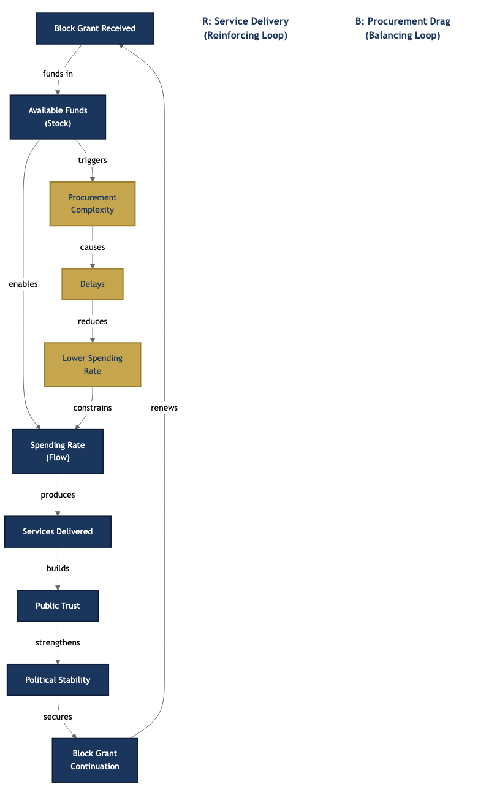
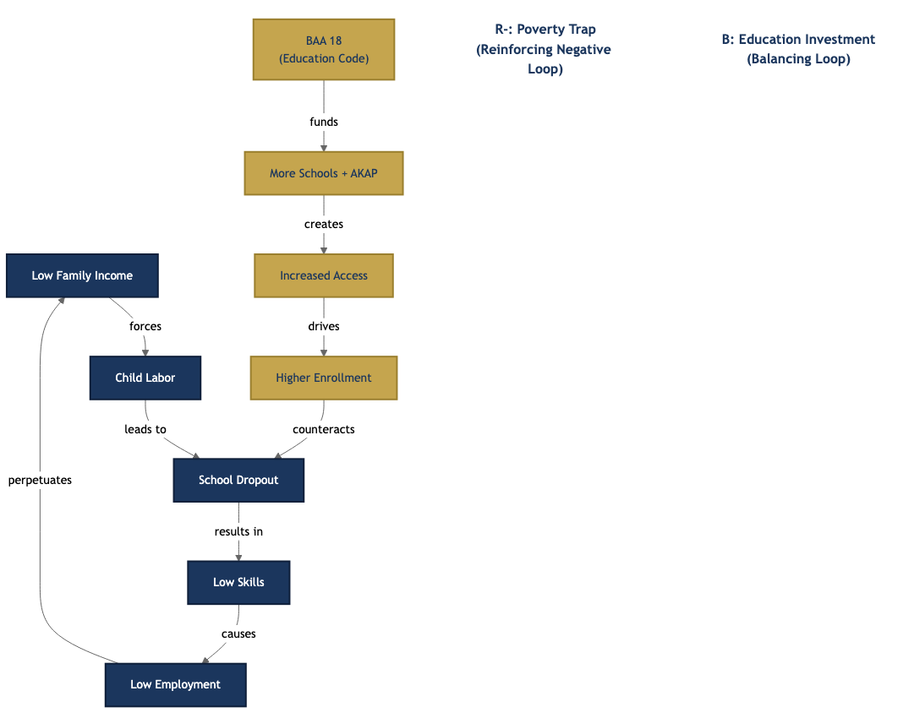
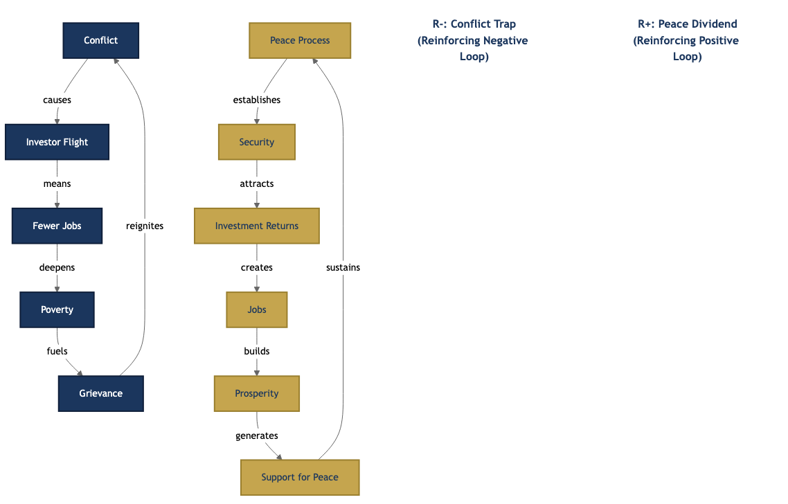

This guidebook introduces systems thinking and complexity theory as practical tools for Bangsamoro leaders, planners, consultants, and development workers. It offers a new lens for understanding why the region’s most persistent challenges – poverty, weak institutions, low literacy, underdeveloped economy – resist conventional solutions. More importantly, it provides frameworks and strategies for designing interventions that work with the complexity of the Bangsamoro, not against it.
This guidebook is for anyone working to build a successful Bangsamoro:
No prior knowledge of systems thinking or complexity theory is required. Each concept is introduced from first principles and immediately applied to a Bangsamoro example.
This guidebook has two distinct parts:
Chapters 1 through 7 build your conceptual toolkit. They introduce the frameworks – wicked problems, systems thinking, complexity theory, change models, systems mapping, futuring, strategy, and collaboration – that you need to see the Bangsamoro as a complex adaptive system.
Chapter 8 applies every framework to the Bangsamoro. It analyzes what the BTA transition government has already changed across governance, education, economy, and social services – and prescribes what the first elected regular Bangsamoro government must change in its first five years.
You can read the chapters in sequence for a complete learning journey, or go directly to Chapter 8 if you need the analysis and prescriptions now, referring back to earlier chapters when you encounter an unfamiliar framework.
The Appendices provide detachable practical tools: a systems mapping toolkit, a diagnostic for assessing where your sector sits in the adaptive cycle, a facilitation guide for futuring workshops, and a self-assessment for aspiring systems leaders.
Saidamen “Sayeed” R. Mambayao has worked in governance, legislation, and cooperative development across the Bangsamoro region for over a decade.
Before the establishment of the Bangsamoro Autonomous Region, he served as a Consultant of the Cooperative Development Authority under the former Autonomous Region in Muslim Mindanao, where he led programs on cooperative development, Islamic finance, and executive leadership. He also served as Secretariat Head and Program Director of the Bangsamoro Executives and Leaders League (BELL), Inc., and held leadership roles in the ARMM Islamic Finance Sub-Cluster and the Bangsamoro Coalition on Social Enterprise.
When the Bangsamoro Transition Authority was established in 2019, he led the development and implementation of two BARMM flagship programs: the Access to Higher and Modern Education (AHME) Scholarship Program under the Ministry of Basic, Higher, and Technical Education, and the Engaging the SK, Empowering the Youth (ESKEY) Program under the Ministry of the Interior and Local Government. He later served as Chief of Staff at the Office of a Member of Parliament, where he assisted on legislative portfolios covering women, youth, children, persons with disabilities, cooperatives, social enterprises, and halal industries. He drafted and reviewed legislative measures on scholarships, cultural heritage preservation, assistance to Other Bangsamoro Communities, and cooperative and social enterprise development. He also served as OIC-Legislative Affairs at the Office of MP Sittie Fahanie S. Uy-Oyod.
He is the Founder of MoroTech and MoroAcademy, social enterprises empowering Bangsamoro organizations and communities through knowledge and technology, and the Founding Chairperson of the Bangsamoro Scholars Association. He also founded the SEED Initiative, a consultancy and training firm focused on cooperative and social enterprise development. He is an Active Citizen and graduate of the British Council’s CSO-SEED Business and Investment Readiness Program.
What if the Bangsamoro’s biggest problem is not poverty, illiteracy, or weak institutions – but the way its leaders think about solving them?
Consider the paradox. The Bangsamoro Autonomous Region in Muslim Mindanao has everything a post-conflict government needs to succeed. It has a comprehensive development plan. It has fiscal autonomy backed by a generous block grant. It has a parliamentary system designed for decisive policy action. It has a mandate from a plebiscite that expressed the people’s will. It has enacted 89 laws — including priority codes on administration, civil service, education, elections, and local governance.12 And it has thousands of dedicated public servants, development workers, and civil society leaders pouring their energy into the region’s challenges every day.
Yet something is missing.
The numbers tell the story. Poverty incidence dropped from 54.20% in 2018 to 29.80% in 2021 – a historic decline.1 But BARMM remains the poorest region in the country, with poverty rates still higher than the national average of 23.7%.2 Functional literacy sits at 71.6%, the lowest among all regions, against a national average of 91.6%.3 The physician-to-population ratio stands at 1:51,187 – barely meeting the 1:50,000 standard, and far worse in provinces like Maguindanao (1:56,497).4 Budget utilization for FY 2020 reached only 67.91% of total appropriations, and 71.96% for FY 2021.5 That means roughly one-third of the region’s budget goes unspent each year – not because the money is unavailable, but because the system cannot absorb it fast enough.
These numbers reveal progress. They also reveal persistent gaps. The question is: why?
Every year, billions of pesos flow into the region. New programs launch. New offices open. New plans get approved. Most interventions treat the Bangsamoro’s challenges as separate issues to solve one at a time. Build more classrooms. Hire more doctors. Fund more livelihood programs. Each makes sense in isolation. Yet the region’s deepest problems persist because they are not isolated. They form an interconnected system – a mess, in the language of systems thinkers – where poverty drives conflict, conflict disrupts education, poor education limits employment, and unemployment deepens poverty.6
The missing piece is not more resources or better programs. The missing piece is not a new organizational chart or a bigger budget allocation. The missing piece is understanding the system that produces these outcomes. Until you see the system, you will keep treating symptoms while the underlying structure regenerates the problems you just solved.
You build a school, but the education system that determines teacher deployment, instructional quality, and student retention remains unchanged. You construct a health center, but the health system that governs staffing, supply chains, referral networks, and patient access operates on the same broken logic. You fund a livelihood program, but the economic system that shapes market access, credit availability, and value chain integration absorbs your intervention and returns to its default behavior.
This is not a failure of effort. This is a failure of approach.
Systems thinking is not academic theory reserved for universities and research institutes. It is practical strategy for leaders who want results. It gives you a way to see the whole instead of the parts, to find the leverage points where small changes produce large effects, and to design interventions that change the game instead of playing by the old rules.
This guidebook gives you that lens.
You are a minister wondering why your flagship program produced impressive pilot results but fails to scale across five provinces. You designed it well. You funded it adequately. You staffed it with competent people. Yet the system resists replication. The answer lies not in the program but in the structures surrounding it.
You are a director preparing next year’s budget, knowing that 30% of this year’s allocation will go unspent.13 You have the projects. You have the plans. But the procurement system, the staffing gaps, the reporting requirements, and the coordination failures between your office and three other ministries create a bottleneck that no amount of budget increase can fix.
You are a CSO leader frustrated that your community-driven program works beautifully in two barangays but cannot expand beyond them. You have the model. You have the community buy-in. But the government systems that should support scale-up – the LGU coordination, the ministry partnerships, the policy frameworks – operate on a different logic than your grassroots approach.
You are a development partner designing a five-year project with clear deliverables and a logical framework. You know from experience that when the funding ends, the gains often disappear. The sustainability problem is not about handover plans or exit strategies. It is about whether your intervention changed the system or merely created a temporary workaround within it.
You are a planner trying to connect the BDP’s six development goals – moral governance, just and lasting peace, economic growth, cultural diversity, social services, and environmental sustainability – into a coherent strategy. Each goal has its own chapter, its own targets, its own implementing agencies. But the goals pull in different directions unless someone maps the connections between them.
You are a legislator crafting priority codes that will shape the region for decades. You need to understand how a new law interacts with existing regulations, institutional incentives, cultural norms, and implementation realities – because a well-drafted bill that ignores systemic dynamics becomes dead law the moment it passes.
You do not need prior knowledge of systems thinking, complexity theory, or organizational science. This guidebook translates those fields into practical tools for your context. Every concept comes with a concrete Bangsamoro example. Every framework gets applied to real BARMM challenges. What you do need is willingness to question assumptions. Systems thinking asks you to look beyond your ministry, your program, your project – and see how your work connects to everything else happening in the region. That shift in perspective changes everything.
This guidebook has two parts. The first builds your conceptual toolkit. The second applies it.
Chapters 1 through 7 introduce one essential idea each from systems thinking and complexity theory, translated into language and examples relevant to the Bangsamoro:
Chapter 8 is the payoff. It takes every tool from Chapters 1-7 and applies them directly to four sectors of the Bangsamoro: governance, education, economy, and social services. It maps the region’s key systems, identifies leverage points, and offers concrete prescriptions for systems-level change. This is where theory meets the budget line, the policy memo, and the implementation plan.
Three reading paths serve different needs:
Every chapter follows the same structure. It opens with why the concept matters for the Bangsamoro. It introduces the framework with clear definitions and diagrams. It applies the framework to real BARMM challenges with specific examples. And it closes with a bridge to the next chapter, showing how each idea connects to what comes next.
This guidebook makes one central claim:
The Bangsamoro will succeed only through systems change – not component fixes.
What does systems change mean? It means changing the underlying rules, relationships, and beliefs that cause a system to behave the way it does – so that the system produces fundamentally different outcomes without requiring constant external intervention.7 It is the difference between pumping water out of a flooded basement and fixing the pipe that keeps breaking.
The BTA transition government accomplished something historic. It changed the structure of Bangsamoro governance. The Bangsamoro Organic Law replaced a presidential system with a parliamentary one. It established fiscal autonomy with a block grant formula. It created new ministries with sector-specific mandates. It passed priority codes governing administration, civil service, education, elections, and local governance — and enacted 89 laws in total.8
These structural changes were necessary. But structures alone do not produce outcomes. What happens within those structures determines what actually happens on the ground. The feedback loops that reward or punish certain behaviors. The incentive structures that shape how officials allocate time and resources. The mental models that determine what leaders see as possible, acceptable, or desirable. The power dynamics that decide whose voice matters in budget hearings, policy debates, and implementation decisions. These invisible forces operate beneath the surface of organizational charts and policy documents. They are the real drivers of results.
Traditional approaches treat the region’s challenges ministry by ministry, program by program. MBHTE handles education. MOH handles health. MAFAR handles agriculture. MILG handles local governance. Each ministry plans, budgets, and implements within its own domain.9 This siloed approach addresses symptoms. It does not address root causes.
Root causes operate at three levels. Structural change alters the policies, rules, resource flows, and formal authority that govern how institutions operate. The BOL accomplished much of this. Relational change transforms the quality of connections, trust, power dynamics, and collaboration between actors in the system. This is where most BARMM efforts currently stall – ministries that should collaborate compete for budget, LGUs and the regional government operate on parallel tracks, and civil society remains outside the policy loop. Transformative change shifts the mental models, cultural narratives, and paradigms that define what people believe is possible.10 This is the deepest and most durable level of change – and the least addressed.
All three levels are needed. Structural change without relational change produces rules that nobody follows. Relational change without transformative change produces collaboration that reverts to old patterns when key champions leave. Transformative change without structural change produces new thinking trapped inside old institutions.
The first regular Bangsamoro government – the elected government that will follow the BTA transition – faces a choice. It can continue with component fixes: more budget, more staff, more projects, more programs. This path is familiar. It produces visible activity. It fills reports with deliverables. But it will not close the gaps that persist despite years of increasing budgets and expanding programs.
Or it can pursue systems change: better rules that create the right incentives, better information flows that enable evidence-based decisions, better feedback mechanisms that connect policy to outcomes, and new paradigms that redefine what Bangsamoro governance can achieve.
This guidebook equips you to make the second choice.
This is not a development plan. The Bangsamoro Development Plan 2023-2028 is the region’s comprehensive roadmap. It defines six development goals, eight cross-cutting strategies, macroeconomic targets, and sector-specific programs across fifteen chapters.11 This guidebook does not replace it. It does not compete with it. Instead, it offers a way of thinking that can make the BDP’s implementation more effective. The BDP tells you what to achieve. This guidebook helps you understand why the system resists those achievements and how to redesign the conditions that determine whether programs succeed or fail. Think of the BDP as the destination. This guidebook is the map of the terrain between here and there.
This is not a training curriculum. You will not find learning objectives, session plans, pre-tests, or assessment tools here. This is a reference and thinking tool designed for individual reading, team discussion, and strategic planning. Training designers can draw on its frameworks to build capacity-building programs. Facilitators can adapt its models for workshops and seminars. Policy advisors can use its language to frame recommendations. But the guidebook itself is designed for reading, reflection, and application – not classroom delivery. It assumes you will engage with the ideas at your own pace and apply them in your own context.
This is not a policy manual. It does not prescribe specific policies, organizational structures, or standard operating procedures. It does not tell you what to decide. It gives you a way to analyze why certain policies work and others do not, why some organizational structures enable collaboration while others prevent it, and how to design interventions that account for systemic complexity instead of ignoring it. The frameworks here are analytical tools, not policy prescriptions. You bring the domain expertise. This guidebook sharpens the lens through which you apply it.
This is not a critique of the BTA transition. The transition government inherited a collapsed bureaucracy, a post-conflict society, and a new organic law that required building a parliamentary government from scratch – all during a global pandemic. The BTA’s accomplishments under those conditions deserve recognition, not second-guessing. This guidebook is not an audit of what went wrong. It is an analysis of what happens next. It examines the systemic dynamics that any Bangsamoro government – transitional or elected – must navigate to produce lasting change. The question is not “what did the BTA do wrong?” The question is “what does the system need to produce different outcomes?”
What this guidebook is: a lens. A way of seeing the Bangsamoro’s challenges that reveals opportunities invisible to conventional approaches. Use it alongside your existing tools, plans, and mandates. Let it sharpen your analysis and expand your options.
The Bangsamoro has the mandate, the resources, and the talent to succeed. What it needs now is the clarity to see the system – and the courage to change it.
2nd Bangsamoro Development Plan 2023-2028, Ch. 1. Poverty incidence dropped from 54.20% (380,000 families) in 2018 to 29.80% (230,000 families) in 2021. Philippine Statistics Authority (PSA). ↩
2nd Bangsamoro Development Plan 2023-2028, Ch. 4. National poverty incidence was 23.7% in 2021. PSA Report. ↩
2nd Bangsamoro Development Plan 2023-2028, Ch. 9, Table 9.1. National average functional literacy is 91.6%; highest region rate is 96.5%. PSA, 2019. ↩
2nd Bangsamoro Development Plan 2023-2028, Ch. 9, Table 9.4. Data from FHSIS-MOH, 2021. Standard ratio is 1:50,000. ↩
2nd Bangsamoro Development Plan 2023-2028, Ch. 5. FY 2020 overall utilization rate was 67.91% of total appropriations (Php34.2B BARMM MOA Regular Fund plus SPF). FY 2021 overall utilization was 71.96% of Php54.4B total appropriation. Source: MFBM. ↩
Russell Ackoff coined the term “mess” for a system of problems. See Ackoff, The Art of Problem Solving (New York: Wiley, 1978). ↩
Systems change defined as shifting the conditions that hold a problem in place. See Kania, Kramer, and Senge, “The Water of Systems Change,” FSG, 2018. ↩
Rep. Act No. 11054 (Bangsamoro Organic Law), Art. VII (parliamentary form), Art. XII (fiscal autonomy), Art. IX (ministerial structure). The seven priority codes identified by the BOL: BAA No. 13 (Administrative Code, 2020), BAA No. 17 (Civil Service Code, 2021), BAA No. 18 (Education Code, 2021), BAA No. 35 (Electoral Code, 2023), BAA No. 49 (Local Governance Code, 2023), Revenue Code (pending), Investment Code (pending). ↩
Rep. Act No. 11054, sec. 1-4, art. IX. The BOL establishes the ministerial form of government with sector-specific ministries. ↩
Three levels of systems change adapted from Kania, Kramer, and Senge, “The Water of Systems Change,” FSG, 2018. The framework identifies structural change (policies, practices, resource flows), relational change (relationships, connections, power dynamics), and transformative change (mental models) as interdependent conditions. ↩
2nd Bangsamoro Development Plan 2023-2028, Ch. 1. The BDP covers six development goals: moral governance, just and lasting peace, economic growth, cultural diversity, social services, and environmental sustainability. ↩
The BOL identified seven priority codes for enactment during the transition: Administrative Code (BAA 13, 2020), Civil Service Code (BAA 17, 2021), Education Code (BAA 18, 2021), Electoral Code (BAA 35, 2023), Local Governance Code (BAA 49, 2023), Revenue Code (pending), and Investment Code (pending). The BTA also enacted additional major codes including the Labor and Employment Code (BAA 82, 2026) and the Budget System Act (BAA 84, 2025). ↩
Derived from budget utilization rate of 67.91% (FY 2020) reported in 2nd Bangsamoro Development Plan 2023-2028, Ch. 5. If utilization is approximately 68-72%, roughly 28-32% of the allocation goes unspent. ↩
Why do the best-funded, best-intentioned programs in BARMM keep failing to move the needle?
This is not a rhetorical question. It demands an honest answer. The Bangsamoro Development Plan identifies the targets. The budget allocations flow. The implementing agencies execute. Yet the region’s deepest challenges – poverty, illiteracy, weak institutions, recurring conflict – persist with a stubbornness that defies conventional explanation.
The answer lies in the nature of the problems themselves. The Bangsamoro does not face a collection of separate problems. It faces a system of problems – a tangle of interconnected challenges where every issue feeds into and is fed by every other. Solving one without addressing the others is like bailing water from a boat while ignoring the hole in the hull.
This chapter introduces the concept that explains why: wicked problems.
In 1973, two Berkeley professors – Horst Rittel and Melvin Webber – published a paper that changed how planners think about public problems. They argued that most social policy challenges are fundamentally different from the problems that engineers or scientists solve. They called these challenges wicked problems.1
The name has nothing to do with morality. “Wicked” here means resistant to resolution. A wicked problem fights back against every attempt to solve it. It shapeshifts. It reveals new dimensions when you think you have it figured out. It connects to other problems in ways that make isolated solutions useless.
To understand wicked problems, start with their opposite: tame problems.
A tame problem has a clear definition. You know what success looks like. You can test solutions and measure results. A broken bridge is a tame problem. You assess the damage, design a fix, execute the repair, and verify that traffic flows again. The problem stays solved.
Tame problems are not necessarily easy. Building a bridge is enormously complex. Performing heart surgery requires years of training. Launching a satellite demands precision engineering. But these challenges share a critical feature: you can define the problem before you start solving it. The definition does not change depending on who you ask.
Wicked problems are different in kind, not just in degree.
Ask five people in BARMM to define “the poverty problem” and you will get five different answers. A farmer in Maguindanao del Sur will describe it as lack of irrigation and market access. A teacher in Sulu will describe it as children who cannot attend school because their families need them to work. A health worker in Tawi-Tawi will describe it as malnutrition caused by food insecurity. A local chief executive will describe it as insufficient revenue allotment. A peace advocate will describe it as the economic consequence of decades of armed conflict.
Every one of them is right. None of them has the complete picture. This is the first mark of a wicked problem: there is no definitive formulation.2
Russell Ackoff, one of the founders of operations research, recognized that real-world challenges rarely come as neatly packaged individual problems. He searched for a word to describe a system of interconnected problems and could not find one in English. So he invented his own:
“English does not contain a suitable word for ‘system of problems.’ Therefore, I have had to coin one. I choose to call such a system a mess.”3
A mess is not just multiple problems happening at the same time. A mess is a system where the problems are so entangled that you cannot solve any one of them independently. Pull on one thread and five others tighten. Fix one symptom and two new ones appear.
The Bangsamoro’s challenges are a mess in Ackoff’s precise technical sense. Poverty is not separate from education. Education is not separate from health. Health is not separate from governance. Governance is not separate from conflict. Conflict is not separate from poverty. They form a single, integrated system of dysfunction.
MIT professor Otto Scharmer asks a question that cuts to the heart of this challenge:
“The fact that we collectively create results that nobody wants, in almost any kind of system today – how can we make sense of that?”4
Nobody in BARMM wants 29.80% poverty incidence.5 Nobody wants 71.6% functional literacy.6 Nobody wants a physician ratio of 1:51,187.7 These are not outcomes that any leader, planner, or community chose. Yet the system produces them with remarkable consistency.
Scharmer’s insight is that these outcomes are not accidents. They are not the result of individual failures or bad intentions. They are emergent properties of the system itself – products of how the parts interact, how incentives align, how power flows, how information moves (or does not move), and how mental models shape decisions.
This is what makes wicked problems so frustrating. Everyone is working hard. Many programs show local success. But the system-level outcomes remain stuck because the underlying structure has not changed.
Rittel and Webber identified ten properties that distinguish wicked problems from tame ones.8 Understanding these properties is not academic exercise. Each one has direct implications for how you design interventions in the Bangsamoro.
You cannot write a problem statement for a wicked problem that everyone agrees on. The way you define the problem determines the solutions you consider. Different stakeholders hold different definitions because they experience different aspects of the system.
BARMM example: Is the education crisis a problem of insufficient classrooms? Teacher quality? Curriculum relevance? Student malnutrition? Family poverty that forces children to work? Armed conflict that displaces families? All of these are true simultaneously. Your definition determines your intervention.
With a tame problem, you know when you are done. The bridge is repaired. The surgery is complete. The satellite is in orbit. Wicked problems have no natural stopping point. There is no moment when you can declare poverty “solved” or governance “fixed.”
BARMM example: The BDP 2023-2028 sets a target of reducing poverty incidence. But even if the target is met, poverty will not be “solved.” New dimensions will emerge. Relative deprivation will shift. The goalposts will move because the system keeps evolving.
Engineering problems have correct solutions. You can calculate the load-bearing capacity of a beam. Wicked problems have no objectively “correct” answer. Solutions can only be judged as better or worse, and the judgment depends on who is doing the judging.
BARMM example: Should BARMM prioritize economic growth (GRDP expansion) or poverty reduction (direct transfers and livelihood programs)? Both are legitimate strategies. Neither is objectively “right.” The choice reflects values, priorities, and political realities – not technical calculation.
You cannot test a solution to a wicked problem the way you test a drug or an engineering design. The effects ripple outward across time and space. A policy that looks successful in three years may produce devastating unintended consequences in ten. You cannot run a controlled experiment on a region of 4.4 million people.
BARMM example: The Bangsamoro Organic Law itself is an experiment in asymmetric federalism. Its full effects will take decades to manifest. Early indicators may mislead. Short-term gains may mask long-term risks.
With tame problems, you can use trial and error. Build a prototype, test it, discard it if it fails, and try again. Wicked problems do not allow this luxury. Every intervention changes the system permanently. You cannot “undo” a failed policy. The communities affected remember. The political landscape shifts. Trust erodes or builds.
BARMM example: The ARMM experience from 1989 to 2019 was not a neutral experiment. Thirty years of institutional weakness, corruption allegations, and governance failures shaped the political culture, public expectations, and institutional memory that BARMM inherited. You cannot reset the clock.9
For a tame problem, you can list all possible solutions and select the best one. For a wicked problem, there is no way to prove you have considered all options. There are always more approaches, more combinations, more framings you have not thought of.
You cannot copy-paste solutions from one context to another. What worked for education reform in Rwanda will not automatically work in Maguindanao. What reduced poverty in the Visayas may fail in Sulu. Each wicked problem exists within a unique configuration of history, culture, politics, geography, and relationships.
BARMM example: The Bangsamoro is the only region in the Philippines with a parliamentary-ministerial form of government.10 It is the only region with significant Muslim, Lumad, and Christian populations governed under a single autonomous structure. Solutions must be designed for this specific context. Off-the-shelf approaches will not work.
This is perhaps the most important property. The problem you see is always connected to deeper problems. Poverty is a symptom of economic exclusion. Economic exclusion is a symptom of historical marginalization. Historical marginalization is a symptom of colonial and post-colonial power structures. You can trace the chain as deep as you want to go.
BARMM example: Low budget utilization (67.91% in FY2020) looks like a management problem.11 Dig deeper: it reflects insufficient qualified staff (only 72.55% of positions filled).12 Dig deeper: that reflects an education system that does not produce enough qualified graduates. Dig deeper: that reflects decades of underfunding and conflict. Every problem is a doorway to a deeper problem.
Now apply this framework to the Bangsamoro. The numbers tell a story that defies simple explanation.
Poverty: 29.80% poverty incidence in 2021 – the highest of any region in the Philippines. This is down from 54.20% in 2018, a dramatic improvement. But BARMM remains at the bottom of the national ranking.13
Education: 71.6% functional literacy rate – the lowest nationally against a 91.6% national average. The dropout rate stands at 8.36%, the highest in the country. The completion rate is 63.98%, the lowest nationally.14
Economy: BARMM contributes just 1.4% of national GDP – the lowest of any region – despite having 4.4 million people. Gross Regional Domestic Product growth reached 7.5%, showing momentum, but from an extremely low base.15
Health: One physician for every 51,187 people. Only one Level II hospital in the entire region. Just 117 Barangay Health Stations serving 2,590 barangays – one station for every 22 barangays.16
Governance: Only 72.55% of government positions are filled. Budget utilization reached just 67.91% in FY2020 – meaning nearly a third of available funds went unspent.17
Conflict: The 2017 Marawi siege displaced over 350,000 people and destroyed the commercial center of Lanao del Sur. Rido (clan feuding) remains a persistent source of violence. Some 213,196 hectares of land – 16% of the region’s territory – remain contested.18
These numbers are not six separate problems. They are one system.
Map the connections. A child born in a remote barangay in Sulu enters a world shaped by all six challenges simultaneously. Her family lives below the poverty line. The nearest school is understaffed and under-resourced. The nearest health station is 22 barangays away. Her community has experienced displacement from conflict. The local government office has vacant positions and unspent budget. Economic opportunity is virtually nonexistent.
Her life trajectory is not determined by any single factor. It is determined by the interaction of all of them.
Now consider a second scenario. A young college graduate in Cotabato City wants to serve in government. She passed the civil service exam. She has the qualifications. But the ministry she wants to join has 27.45% of its positions unfilled. The positions that are filled often reflect political considerations rather than merit-based hiring. The salary cannot compete with private sector opportunities in Manila or Davao. She leaves the region. The brain drain deepens the capacity gap.29 The capacity gap weakens service delivery. Weak service delivery erodes public confidence. Eroded confidence makes reform harder. Each departure makes the next departure more likely.
This is how a mess works. Individual decisions – rational for each person making them – accumulate into collective outcomes that nobody chose.
Now trace the feedback loops:
The Poverty-Education Cycle. Low family income forces children to drop out of school to work or help at home. An 8.36% dropout rate – the highest nationally – is not a school problem.30 It is a poverty problem that manifests in schools. Low educational attainment limits employment options. Limited employment perpetuates poverty. Poverty forces the next generation out of school. The cycle repeats across generations. A family trapped in this loop in 2018 is likely still trapped in 2026.
The Governance-Service Delivery Cycle. Unfilled positions weaken institutional capacity. Weak institutions deliver poor public services. Poor services erode public trust in government. Low public trust makes it harder to attract qualified staff and secure community cooperation. Institutional capacity weakens further. Budget utilization drops because there are not enough skilled staff to plan, procure, and implement. Unspent funds reinforce the perception that government cannot deliver. The perception becomes self-fulfilling.
The Conflict-Development Cycle. Armed conflict destroys infrastructure and displaces communities. The Marawi siege alone displaced over 350,000 people. Displacement disrupts education, livelihoods, and social networks. Economic devastation creates grievances that fuel future conflict. Rido compounds the problem at the community level – clan feuding operates outside formal justice systems. Contested lands (213,196 hectares) prevent investment and agricultural development. The cycle feeds itself across generations, creating zones where development programs cannot even reach their intended beneficiaries.
The Health-Productivity Cycle. With only one physician per 51,187 people, preventive care is nearly impossible. Inadequate health services lead to higher disease burden and malnutrition. Poor health reduces worker productivity and children’s capacity to learn. Malnourished children who attend school cannot concentrate. They fall behind. They drop out. Low productivity reduces economic output and tax revenue. Reduced revenue means fewer resources for health services. Only 117 Barangay Health Stations for 2,590 barangays means that for most communities, the nearest health worker is hours away – if one exists at all.
These are not four separate cycles. They intersect and amplify each other.
A child who drops out of school due to poverty is also more likely to experience poor health, more likely to live in a conflict-affected area, and more likely to be underserved by weak government institutions. When two cycles intersect, they do not add – they multiply. The combined effect of poverty plus conflict on education is worse than the sum of each acting alone.
This is the defining feature of a mess. The cycles reinforce each other. They create a system-level equilibrium – a stable pattern of outcomes that resists change because every part of the system holds every other part in place.
Here is the critical insight: you can pour resources into any single cycle and see temporary improvement. Build schools, and enrollment rises – for a while. But if poverty still forces children to drop out, if conflict still displaces families, if malnutrition still impairs learning, the gains erode. The system pulls outcomes back toward its default state.
This explains the paradox of BARMM’s poverty statistics. Poverty incidence dropped from 54.20% in 2018 to 29.80% in 2021 – a dramatic improvement by any measure.5 But BARMM still has the highest poverty rate nationally. The improvement came primarily from national transfer programs (4Ps) and the Bangsamoro block grant, not from structural transformation of the regional economy. If the transfers were reduced or the block grant cut, poverty incidence would likely rebound because the underlying economic structure has not changed enough to sustain the gains independently.
This is not pessimism. It is physics. Complex systems have attractors – stable states that the system tends to return to after disturbance. Push the system away from its attractor, and it bounces back. The only way to create lasting change is to move the attractor itself.
Changing the attractor means changing the underlying structure: the rules, incentives, relationships, and mental models that hold the system in its current pattern. That is what systems change is about. And that is why component fixes – no matter how well-funded – keep falling short.
If wicked problems resist conventional solutions, what exactly is wrong with conventional approaches? Four patterns explain most failures.
The dominant approach to complex challenges is reductionism: break the problem into parts, analyze each part separately, fix each part, and assume the whole will improve. This works brilliantly for machines. Replace the broken gear and the machine runs again.
But the Bangsamoro is not a machine. It is a complex adaptive system – a living web of relationships where the parts influence each other in nonlinear ways. Fixing one part does not fix the whole because the parts are not independent. They co-evolve.
A leading systems change text captures this limitation precisely: “Today if something breaks in our societal systems, we separate it out into parts, analyze, find the faulty part and switch it out for a better one. The problem with this is that rarely does it result in the kind of change leaders hope for. Instead, they are often confronted by new problems caused by the initial solution – and the initial problem might also be back and bigger this time.”19
BARMM’s ministerial structure reflects reductionist thinking in organizational form. MBHTE handles basic, higher, and technical education. MOH handles health. MAFAR handles agriculture, fisheries, and agrarian reform. MTIT handles trade, investment, and tourism. Each ministry plans within its mandate, budgets within its allocation, and reports on its own indicators.20
This structure creates a critical blind spot. The problems cross all boundaries. A malnourished child is simultaneously an education problem, a health problem, an agriculture problem, and a poverty problem. But no single ministry owns the whole child. Each owns a piece. And the pieces do not add up to a coherent response.
Consider this: MBHTE tracks enrollment and completion rates. MOH tracks malnutrition and immunization rates. MAFAR tracks agricultural productivity. But who tracks the interaction between malnutrition and learning outcomes? Who maps how agricultural productivity in a barangay affects school attendance? Who connects health service access to employment rates?
The answer, in most cases, is nobody. The data exists in silos. The analysis stays in silos. The interventions stay in silos. And the wicked problems that cross all silos remain untouched.
This is not unique to BARMM. Every government organizes by sector. But the consequences are more severe here because the problems are more interconnected and the institutional capacity to coordinate across ministries is still developing. When you have only 72.55% of positions filled region-wide, the coordination mechanisms that exist on paper – inter-agency committees, joint memoranda, convergence programs – often lack the staff to function.31
Jocelyne Bourgon captures the danger of this single-dimension approach: “Complex issues are multidimensional and whenever you try and reduce them to a single dimension you are on the verge of making a dramatic mistake because by prescribing a solution that is unidimensional you are about to make the problem even worse.”27
Traditional planning assumes a linear chain of causation: if we do A, then B will follow. Invest in teacher training (A), and student performance improves (B). Build farm-to-market roads (A), and agricultural income rises (B). Allocate budget for medical equipment (A), and health outcomes improve (B).
In a simple system, this logic holds. In a complex system, it fails – often spectacularly.
Train teachers, and they transfer to Metro Manila because salary differentials and living conditions make retention impossible. Build farm-to-market roads, and commercial traders capture the value because farmers lack negotiating power and market information. Allocate medical equipment, and it sits unused because there are no technicians to operate it and no supply chain for replacement parts.
Linear plans fail in complex systems because they do not account for feedback loops, time delays, and unintended consequences. The system responds to your intervention in ways you did not predict. And your next plan, built on the same linear assumptions, fails in new ways.
The BDP 2023-2028 itself acknowledges this challenge. It is a comprehensive document with clear targets across every sector. But even the best plan cannot predict how its interventions will interact. A successful agriculture program might increase income in one province while drawing workers away from another sector. A road-building project might improve market access while also accelerating deforestation. Every intervention enters a living system that responds, adapts, and produces surprises.
The problem is not planning. Planning is essential. The problem is linear planning – plans that assume a straight line from input to outcome. Complex systems demand adaptive planning: plans that anticipate feedback, monitor for unintended effects, and adjust course as the system responds.
International development operates primarily through discrete projects. A funder designs a project with defined inputs, activities, outputs, and outcomes. The project runs for three to five years. An evaluation measures results. The project ends.
This model has a fundamental mismatch with wicked problems. Projects have boundaries. Wicked problems do not. Projects have timelines. Wicked problems do not. Projects have predefined outcomes. Wicked problems have emergent, unpredictable outcomes.
The systems change literature captures this mismatch with sobering clarity. Speaking of education reform in the United States: “The heroic efforts of countless teachers, administrators, and nonprofits, together with billions of dollars in charitable contributions, may have led to important improvements in individual schools and classrooms, yet system-wide progress has seemed virtually unobtainable.”21
Replace “U.S. public education” with “Bangsamoro development” and the observation holds. Individual projects succeed. System-wide progress stalls. The projects create islands of improvement in a sea of systemic dysfunction.
This is not a failure of the projects. It is a failure of the approach. You cannot fix a system by fixing its parts one project at a time. The system is not the sum of its parts. It is the product of their interactions.
If reductionist thinking, siloed ministries, linear planning, and project-based development cannot solve wicked problems, what can?
Three interconnected fields offer a way forward.
Systems thinking is a way of seeing the world that focuses on wholes instead of parts, patterns instead of events, and relationships instead of things.22
When you think in systems, you stop asking “what is broken?” and start asking “what pattern keeps producing this outcome?” You stop looking for the faulty component and start looking for the structural dynamics that generate the problem.
A systems thinker looking at BARMM’s education challenges would not start with classrooms, textbooks, or teacher qualifications. They would start by mapping the entire system: How do families make decisions about school attendance? What economic forces pull children out of school? How do teacher deployment policies interact with community needs? What feedback loops connect education quality to migration patterns? How do cultural factors shape expectations about schooling?
This is not more complicated than reductionist analysis. It is differently complicated. It trades the precision of component analysis for the accuracy of systemic understanding. And in a world of wicked problems, accuracy matters more than precision.
Petra Kuenkel of the Collective Leadership Institute explains why this holistic starting point matters: “Wholeness, at a large scale, is our ability to look at things from a distance and to take into account a larger perspective, because if we don’t do this we do not only act in isolation, we may act in the naivety that the positive intention that we have will have a positive impact and it may not necessarily be the case, because we have not taken into account a larger context.”28
Good intentions are not enough. A larger view is required. Systems thinking provides that view.
Complexity theory studies how interconnected, diverse, adaptive elements produce emergent behavior – outcomes that no individual element intended or controlled.23
A complex adaptive system has three key features:
The Bangsamoro governance ecosystem is a textbook complex adaptive system. Ministries, local government units, traditional leaders, civil society organizations, armed groups, religious institutions, development partners, private businesses, and communities interact across dense networks of formal authority and informal influence. Each adapts to the others. No single actor controls the whole.
Understanding this is liberating. It means you do not have to control the whole system to change it. But it also means you cannot control it. You can only influence it – by understanding its dynamics and intervening at the right points.
Consider the Bangsamoro peace process itself as a case study in complexity. The transition from ARMM to BARMM involved national government, rebel groups, international mediators, local politicians, traditional leaders, religious authorities, civil society, displaced communities, and millions of ordinary citizens. No single actor controlled the outcome. The Comprehensive Agreement on the Bangsamoro (2014) and the BOL (2018) emerged from decades of adaptation, negotiation, setback, and reconfiguration. The process was nonlinear. The Mamasapano clash of 2015 nearly derailed the entire effort. The Marawi siege of 2017 reshaped the security landscape. Yet the system adapted and the transition proceeded – not because someone controlled it, but because enough actors aligned around a shared direction.
This is how complex adaptive systems change. Not through command and control. Through aligned influence across many actors.
Systems change is the practical application of systems thinking and complexity theory. It means changing the underlying structure of a system so that it produces different behavior and outcomes.24
Structure, in this context, includes:
Traditional approaches change programs, budgets, and personnel. Systems change targets these deeper structural elements. It asks: What rules create perverse incentives? What resource flows concentrate power? What relationships are missing? What mental models prevent leaders from seeing alternatives?
As Ashoka defines it: “Systems change is an approach to tackling the root causes of a problem by identifying and creating shifts in the systems that are responsible for the problem.”25
As John Kania of New Profit explains: “We’re thinking about systems change not as an issue or a person that needs to be fixed. It’s the set of conditions that surround that individual. We need to work on shifting the conditions that hold the problem in place.”26
Apply this lens to BARMM. The question shifts from “How do we improve education?” to “What systemic conditions produce the Bangsamoro’s education outcomes – and how do we change those conditions?”
The answer involves far more than MBHTE’s programs. It involves:
No single ministry controls all of these. No single project addresses all of these. No single plan captures all of these. Only a systems approach can hold all of these in view simultaneously.
The remaining chapters of this guidebook give you the tools to work at this level.
Chapter 2 introduces systems thinking as a discipline – how to map systems, identify boundaries, and see feedback loops. Chapter 3 presents the Iceberg Model, which shows how visible events are produced by invisible patterns, structures, and mental models. Chapter 4 explains feedback loops – the mechanisms that make systems self-reinforcing or self-correcting. Chapter 5 covers leverage points – the places in a system where small changes produce outsized effects. Chapter 6 explores emergence and adaptation – how complex systems evolve and why top-down control fails. Chapter 7 addresses systems leadership – the mindset, skills, and practices required to lead change in complex environments.
Chapter 8 brings everything together. It maps the Bangsamoro as a system, identifies the key leverage points, and proposes a strategy for systems change grounded in the region’s actual conditions.
The journey starts here, with a recognition that matters more than any technique:
The Bangsamoro’s challenges are not a collection of problems to solve. They are a system to transform.
The question is not whether the Bangsamoro can succeed. The question is whether its leaders can see the system clearly enough to change it.
Horst Rittel and Melvin Webber, “Dilemmas in a General Theory of Planning,” Policy Sciences 4, no. 2 (1973): 155-169. ↩
Rittel and Webber, “Dilemmas in a General Theory of Planning,” 161. ↩
Russell Ackoff, Redesigning the Future: A Systems Approach to Societal Problems (New York: Wiley, 1974), 21. ↩
Otto Scharmer, cited in Systems Innovation, Systems Change: An Introduction (London: Systems Innovation, 2020). ↩
2nd Bangsamoro Development Plan 2023-2028, Ch. 9. ↩
2nd Bangsamoro Development Plan 2023-2028, Ch. 9. ↩
Rittel and Webber, “Dilemmas in a General Theory of Planning,” 161-167. ↩
Rep. Act No. 6734 (1989) established the ARMM. Rep. Act No. 11054 (2018) replaced it with the BARMM. ↩
Rep. Act No. 11054, sec. 1, art. VII. ↩
2nd Bangsamoro Development Plan 2023-2028, Ch. 5. ↩
2nd Bangsamoro Development Plan 2023-2028, Ch. 4. ↩
2nd Bangsamoro Development Plan 2023-2028, Ch. 7. ↩
2nd Bangsamoro Development Plan 2023-2028, Ch. 9. ↩
2nd Bangsamoro Development Plan 2023-2028, Ch. 5. ↩
2nd Bangsamoro Development Plan 2023-2028, Ch. 10. ↩
Systems Innovation, Systems Change: An Introduction (London: Systems Innovation, 2020). ↩
Rep. Act No. 11054, sec. 1-4, art. IX. ↩
John Kania and Mark Kramer, cited in Systems Innovation, Systems Change: An Introduction (London: Systems Innovation, 2020). ↩
Donella Meadows, Thinking in Systems: A Primer (White River Junction: Chelsea Green Publishing, 2008), 2. ↩
John H. Holland, Complexity: A Very Short Introduction (Oxford: Oxford University Press, 2014), 4. ↩
Systems Innovation, Systems Change: An Introduction (London: Systems Innovation, 2020). ↩
Ashoka, “Systems Change,” accessed 2026, https://www.ashoka.org/en/focus/systems-change. ↩
John Kania, cited in Systems Innovation, Systems Change: An Introduction (London: Systems Innovation, 2020). ↩
Jocelyne Bourgon, cited in Systems Innovation, Systems Change: An Introduction (London: Systems Innovation, 2020). ↩
Petra Kuenkel, cited in Systems Innovation, Systems Change: An Introduction (London: Systems Innovation, 2020). ↩
Derived from the 72.55% positions-filled rate in 12. If 72.55% of positions are filled, then 27.45% remain unfilled. ↩
Id. See 14, 2nd Bangsamoro Development Plan 2023-2028, Ch. 9. ↩
Id. See 12, 2nd Bangsamoro Development Plan 2023-2028, Ch. 5. ↩
Every day, when a fisherman in Tawi-Tawi harvests seaweed, a student in Lanao del Sur opens a textbook, and a legislator in Cotabato City files a bill — they are all operating within interconnected systems. Understanding those systems is the first step toward changing them.
The previous chapter showed you that the Bangsamoro’s deepest challenges are wicked problems — tangled, persistent, and resistant to conventional fixes. This chapter gives you the conceptual foundation for tackling them. You will learn three things: what a system actually is and why BARMM behaves like one; what complexity means and why it makes the region’s problems so stubbornly hard to solve; and what systems change requires — structurally, relationally, and in the mental models that drive governance decisions.
Master these ideas, and the rest of this guidebook becomes a practical toolkit you can apply to any Bangsamoro challenge.
Start with a distinction that changes how you see everything.
A pile of bricks is a set. A house is a system. Both contain the same physical material. The difference is relationships and function. The bricks in a pile share no connections. Each brick exists independently. You can describe the pile completely by listing each brick’s size, weight, and color. Nothing emerges from the pile beyond the sum of its parts.1
Now arrange those bricks into a house. Walls bear loads. Windows admit light. A roof deflects rain. The bricks have not changed. What changed is how they relate to each other — and from those relationships, a new capability emerges. Shelter. The house does something no individual brick can do.2
Donella Meadows, one of the most influential systems thinkers of the modern era, defined it precisely:
“A system is a set of things — people, cells, molecules, or whatever — interconnected in such a way that they produce their own pattern of behavior over time.”3
Two methods of reasoning compete here. Analysis breaks a system into parts, studies each in isolation, and reassembles them. This works well for simple, decomposable systems — a clock, a chemical reaction, a budget spreadsheet. Synthesis works in the opposite direction. It asks: what larger whole does this part belong to? How does the whole function? How does this part contribute to that function?4
Peter Senge captured the shift: “Systems thinking is a discipline for seeing wholes. It is a framework for seeing interrelationships rather than things, for seeing patterns of change rather than static snapshots.”5
Both methods matter. But for the Bangsamoro’s challenges, synthesis is the missing discipline.
BARMM example. The 16 executive units of the Bangsamoro government — the Office of the Chief Minister plus 15 ministries — are not a set of independent agencies.6 They form a governance system. MILG’s capacity to strengthen local governments affects how effectively MAFAR delivers agricultural programs at the municipal level. MAFAR’s success in food production affects MOH’s nutrition outcomes. MOH’s health indicators affect whether children stay in school — which is MBHTE’s domain. MBHTE’s education quality shapes the future workforce, which determines the economic growth that MED tracks.
Describe any single ministry in isolation and you capture part of the picture. See how they connect, and you begin to understand why the region gets the outcomes it gets.
Every system has three defining components: elements, relationships, and function.7
Elements are the parts. In BARMM’s governance system, elements include people (civil servants, elected officials, traditional leaders), institutions (ministries, LGUs, madaris), resources (the annual block grant, natural resources, human capital), and rules (the BOL, BAAs, administrative orders, cultural norms).
Relationships are how the elements connect. These connections take many forms. Information flows — a budget call moves from the Ministry of Finance to every spending unit. Resource flows — block grant funds move from the national government through BARMM to LGUs. Authority chains — a minister directs a bureau chief who supervises division heads. Trust networks — clan ties, alumni connections, and professional relationships that shape whose advice gets heard in a policy discussion.
Function is what the system produces. A governance system produces governance outcomes: laws enacted, services delivered, disputes resolved, development achieved. An economic system produces economic activity: jobs, incomes, goods, and services. A health system produces health outcomes: lives saved, diseases prevented, populations nourished.
Here is the critical insight: the relationships define the system more than the elements do.8
BARMM example. You can replace every person in a ministry. If the approval workflows, incentive structures, reporting relationships, and informal power dynamics stay the same, the ministry will produce essentially the same results. New faces will adopt old behaviors because the system’s structure — its relationships — pushes them toward the same patterns.
This is why “changing the people” without changing the structure is the most common and most disappointing reform strategy. ARMM replaced officials multiple times over its existence. The outcomes barely changed because the underlying system — the relationships between elements — remained intact.9
Conversely, change the relationships and you can transform outcomes with the same people. When the BOL shifted BARMM from a presidential-style regional government to a parliamentary system, it changed the fundamental relationship between the executive and legislative branches. Cabinet members now sit as Members of Parliament. Budget deliberations happen inside the parliament, not between separate branches. The same political culture, the same talent pool — but a fundamentally different structure of relationships.10
Three properties make systems behave in ways that surprise, frustrate, and occasionally delight the people inside them.
Emergence
The system produces outcomes that no single element intended or controls. Emergence is the process by which new patterns of organization arise from interactions among simpler elements — patterns that those elements do not individually exhibit.11
Water is the classic teaching example. Hydrogen is not wet. Oxygen is not wet. Combine them, and wetness emerges — a property that exists only at the level of the whole and cannot be found in the parts.12
BARMM example. Poverty at 29.80% is an emergent property of the Bangsamoro system.13 No ministry plans for poverty. No official designs it. No program creates it deliberately. Yet the system — with its specific configuration of land tenure patterns, educational outcomes, employment structures, infrastructure gaps, and governance capacities — reliably produces a poverty rate nearly three times the national average. Poverty emerges from the interactions among all these elements. You cannot locate it in any single part. That is precisely why single-ministry interventions cannot eliminate it.
Feedback Loops
Systems regulate themselves through feedback — information about the results of an action that loops back to influence the next action. Two types of feedback loops shape every system you will encounter.14
Reinforcing loops amplify change. They drive growth or decline. When more people use a product, more people hear about it, which attracts more users — a reinforcing loop that drives exponential growth. When a region experiences conflict, investors leave, jobs disappear, young people lose hope, some turn to armed groups, and conflict intensifies — a reinforcing loop that drives exponential decline.15
Balancing loops resist change. They maintain stability. When your body temperature rises, you sweat, which cools you down — a balancing loop that maintains homeostasis. When budget spending accelerates, procurement bottlenecks slow disbursements, which reduces the spending rate — a balancing loop that maintains the status quo.16
BARMM example. Budget utilization at 67.91% (FY2020) and 71.96% (FY2021) reveals a balancing loop in action.17 BARMM receives approximately Php71.7 billion annually through its block grant.18 Yet over a quarter of this goes unspent. The system contains processes — complex procurement rules, multi-layered approval workflows, unfilled positions, capacity gaps in LGUs — that consistently slow spending down. Each time utilization threatens to increase, these structural bottlenecks absorb the acceleration and return the system to its equilibrium. The budget system is working exactly as designed — the design just produces an outcome nobody wants.
Hierarchy
Systems nest inside larger systems. A cell is part of an organ, which is part of a body. A barangay is part of a municipality, which is part of a province, which is part of BARMM, which is part of the Philippines.19
Each level has its own internal dynamics and rules. What works at the barangay level may fail at the provincial level. What the national government mandates may clash with local realities. Understanding where your intervention sits in the hierarchy — and how the levels above and below it will respond — is essential to designing change that sticks.
BARMM example. The 2,590 barangays of the Bangsamoro operate within 116 municipalities, which sit within 5 provinces (plus Cotabato City and the special geographic areas).20 A barangay captain distributes resources according to local clan dynamics. A mayor balances competing barangay interests. A governor mediates municipal conflicts. A minister sets regional policy. An MP legislates the framework. Each level constrains and enables the others. A livestock program designed at the ministerial level in Cotabato City may succeed or fail based on trust dynamics between the barangay captain and local farmers — dynamics invisible from the regional capital.
The Bangsamoro is not one system. It is a system of systems — multiple interconnected subsystems that together produce the region’s outcomes.21
Five major subsystems shape the Bangsamoro:
Governance system — the BTA, 16 executive units, 116 municipalities, 2,590 barangays, traditional governance structures, and the formal and informal rules that coordinate them.22
Economic system — agriculture, fisheries, MSMEs, trade networks, labor markets, the halal industry, and the financial flows (block grant, national transfers, ODA, private investment) that fuel them.23
Education system — 2,595 public schools, 1,679 madaris, MBHTE, DepEd-BARMM, 913,456 learners, 27,885 teachers, and the policies, curricula, and cultural expectations that shape learning outcomes.24
Health and social protection system — MOH facilities, DOH-retained hospitals, PhilHealth coverage, MSSD social welfare programs, nutrition services, and the health workforce that delivers them.25
Peace and security system — decommissioned combatants, the normalization process, the joint security architecture, the Bangsamoro justice system, clan-based conflict resolution mechanisms, and the fragile trust that holds them together.26
These subsystems do not operate in parallel lanes. They form a web of interdependencies:
Education affects economy. The 71.6% functional literacy rate limits workforce capacity. Without skilled workers, businesses cannot grow. Without business growth, graduates find no employment. A reinforcing loop ties education failure to economic stagnation.27
Economy affects governance capacity. When the economic base is narrow, the government depends almost entirely on the block grant. Limited own-source revenue means limited fiscal autonomy. Limited fiscal autonomy constrains the government’s ability to respond to local needs.28
Governance affects service delivery. When only 72.55% of government positions are filled, services suffer.29 Understaffed health centers cannot serve remote barangays. Understaffed schools cannot maintain quality. The gap between policy and implementation widens.
Service delivery affects peace. Communities that receive reliable government services develop trust in the state. Communities neglected by services become fertile ground for spoilers, armed groups, and political entrepreneurs who promise what government fails to deliver.30
Peace affects everything. Conflict destroys infrastructure, displaces communities, drives away investment, disrupts schooling, and overwhelms health facilities. The gains of a decade can vanish in a single episode of violence.31
The BDP’s six development goals — meaningful self-governance, just and lasting peace, moral governance, inclusive economic growth, social justice, and cultural integrity — are really six perspectives on ONE interconnected system.32 Achieve one without the others, and the system will pull it back. Advance all of them together, and each reinforces the rest.
This is why siloed approaches fail. A ministry that optimizes its own performance without understanding its connections to other subsystems may produce impressive metrics within its domain while contributing nothing — or even harm — to the system’s overall outcomes.
The Bangsamoro does not need sixteen excellent ministries working independently. It needs sixteen ministries functioning as one governance system — aware of their interconnections, coordinated in their actions, and aligned toward shared systemic goals.
Not all systems are equally difficult to understand and influence. A bicycle is a system, but a competent mechanic can fix it. The Bangsamoro is also a system — but no single expert, no matter how competent, can “fix” it. The difference is complexity.
Complexity is a parameter. It measures several things simultaneously: the number of elements in a system, their connectivity, their diversity, and their capacity for adaptation.33 Turn up any of these dials and the system becomes more complex. Turn them all up, and you get the Bangsamoro.
Consider what makes something complex rather than merely complicated. A jet engine is complicated — it has thousands of parts. But an expert can disassemble it, understand every component, and reassemble it to work the same way every time. The engine does not adapt, learn, or surprise you. A complicated system is predictable once you understand its parts.
A city is complex. It also has thousands of parts — people, businesses, roads, institutions, cultures. But a city adapts. Its parts make decisions. They respond to each other. They form unpredictable patterns. No one designed Manila’s traffic, but the system produces it. No one intended Cotabato City’s informal economy, but it emerged from millions of daily decisions. You cannot disassemble a city, fix its parts, and reassemble it. The whole is fundamentally different from the sum of its parts.
Four dimensions of complexity determine how a system behaves:34
Number of elements. A village council with 7 members is simpler than a parliament with 80. The Bangsamoro government has 50,467 authorized positions across 15 ministries and 13 executive offices. Scale alone creates complexity.
Connectivity. When elements are loosely connected, you can change one without affecting others. When they are tightly connected, every change ripples outward. In BARMM, health outcomes connect to education, which connects to employment, which connects to peace, which connects back to health. Pull one thread and the whole fabric moves.
Diversity. When elements are identical, the system is predictable. When they are diverse — 13 ethnolinguistic groups, island and mainland provinces, urban and rural communities, Islamic and secular institutions — the system produces a far wider range of behaviors. Diversity makes the system richer but harder to predict.
Adaptation. When elements can learn and change their behavior, the system evolves. People are not billiard balls. A farmer who sees prices drop switches crops. A student who sees no jobs drops out. A politician who faces opposition changes strategy. Every agent adapts to every other agent, creating a constantly shifting landscape.
Linear versus nonlinear systems. This distinction matters more than any other for governance.
Linear systems behave proportionally. Push harder, and the system moves farther. Double the input, double the output. A billiard ball moves in a straight, predictable line when struck. Linear systems are the world described by classical physics and conventional planning. They respond to analysis, planning, and control.35
Complex systems behave nonlinearly. Cause and effect are not proportional. Small inputs can trigger massive, system-wide shifts. Large interventions can produce no visible change at all. An ecosystem, an economy, a society — these do not respond to the linear logic of “more input equals more output.”36
Tipping points are the signature of nonlinear systems. The system absorbs pressure, absorbs pressure, absorbs pressure — and then suddenly flips into a completely different state. Ice melts. Markets crash. Revolutions erupt. The straw breaks the camel’s back not because it is heavy, but because the system was already at the edge of a regime shift.37
What does this mean practically? Consider BARMM’s budget utilization at 67-72%.40 A linear thinker says: “Train more procurement officers, utilization will improve proportionally.” A complexity thinker asks: “What feedback loops hold utilization at this level? What structural constraints produce this pattern? Is there a tipping point — a specific reform that could shift the entire system to a higher-utilization equilibrium?”
Complex adaptive systems. When you combine all four dimensions — many diverse, interconnected, adapting elements — you get a complex adaptive system (CAS).41 A CAS has distinctive properties:
The Bangsamoro is a complex adaptive system. Understanding this is not academic. It determines what kinds of interventions will work and what kinds will waste time and money.
The next five sections apply this lens to the Bangsamoro’s major systems — following the causal chain from governance (the operating system) through peace and security, economy, education, and social services. Each section builds on the previous one, showing how complexity in one domain cascades into the next.
Governance is the system that shapes all other systems. When it works, the education, economic, health, and peace systems receive the coordination, resources, and rules they need to function. When it falters, every other system suffers.
The Bangsamoro governance system operates at a scale that demands attention:
Frame this as a complex adaptive system.
Multiple diverse agents. The governance system includes BTA Members of Parliament, ministers and deputy ministers, bureau directors, rank-and-file civil servants, LGU executives (governors, mayors, barangay captains), traditional leaders (sultans, datus), ulama (religious scholars), clan networks, civil society organizations, national government agency field offices, and international development partners. Each operates with partial information. Each pursues a mix of public interest and personal incentives. Each adapts to the behavior of others.65
Feedback loops. Two reinforcing loops compete inside the governance system.
The virtuous loop: capacity building improves civil service competence. Competent civil servants deliver better services. Better services build public trust. Public trust provides political stability. Political stability creates space for more capacity building.66
The vicious loop: weak institutional capacity produces poor service delivery. Poor services erode public trust. Eroded trust drives talented professionals away from government service. Brain drain weakens institutional capacity further. Weaker capacity produces even poorer services.66
Which loop dominates determines the region’s governance trajectory. Right now, both loops are active. The Moral Governance framework, SEAL (Seal of Excellence in Accountability and Leadership) awards, and PRIME-HRM (Program to Institutionalize Meritocracy and Excellence in Human Resource Management) are interventions designed to strengthen the virtuous loop.67 But the vicious loop has structural advantages: it has been running for decades across ARMM’s entire existence, and its patterns are deeply embedded in organizational culture.
Emergence. Patronage patterns emerge from the interaction between formal bureaucratic structures and clan-based social systems. No one designs patronage as a policy. But when a formal merit-based civil service operates inside a society where clan loyalty is the primary social organizing principle, patronage emerges — reliably and predictably — from the collision between the two logics.68
This is not a “cultural deficiency.” It is an emergent property of a specific system configuration. Change the system configuration — change the incentives, the information flows, the accountability mechanisms, and the relationships between formal and traditional authority — and different patterns will emerge.
Adaptation. The BTA itself is an adaptive response. When ARMM’s presidential-style system consistently produced governance failures, the peace process generated a new parliamentary structure as an adaptation.10 Within this new structure, agents adapt continuously. Ministers learn which MPs hold blocking power over their budgets. Civil servants learn which approval workflows can be expedited and which cannot. LGU executives learn how to navigate between BARMM mandates and national government requirements.
Nonlinearity. Filling 72.55% of positions does not produce 72.55% of effectiveness.59 A ministry with all its senior leadership positions filled but half its frontline staff missing will perform very differently from one with full frontline staff but absent leadership. The relationship between staffing levels and organizational performance is deeply nonlinear. It depends on which positions are filled, who fills them, how they relate to each other, and whether the systems supporting their work (IT, procurement, logistics, supervision) are functional.
Similarly, enacting a code does not automatically change behavior. BAA No. 17 (Civil Service Code) establishes merit-based recruitment.63 But between the law on paper and the practice on the ground lies an entire system of implementation — hiring committees, qualification standards, examination processes, political dynamics, cultural expectations — that determines whether the code transforms governance or merely decorates it.
The governance system carries a unique burden: it is simultaneously the system that needs changing and the system responsible for driving change across all other systems. This recursive quality — the system must change itself — is what makes governance reform the hardest and most important challenge the Bangsamoro faces.
Governance is the operating system. When it works, every other sector benefits. When it doesn’t, every other sector suffers. But governance cannot deliver if the region is not at peace — which is why the next section examines the system that makes everything else possible.
Peace is not a program you implement. It is an emergent property of a system — a condition that arises when enough actors, relationships, and incentives align to sustain it. Conflict is emergent too. Understanding the Bangsamoro’s peace and security landscape as a complex adaptive system explains why decades of peace programs have produced fragile gains, and what a structural approach requires.
The scale of the challenge is stark:
Frame this as a complex adaptive system.
Multiple diverse agents. The peace and security system involves MILF combatants and political leaders, MNLF factions with separate organizational loyalties, military and police forces operating under national command, traditional leaders (datus and sultans) whose authority predates the Philippine state, ulama whose moral authority shapes community behavior, clan networks whose allegiances cut across formal institutional boundaries, LGU executives managing local security, international monitors verifying compliance, CSOs mediating at the grassroots, and displaced populations whose grievances persist long after resettlement. No single actor controls the system. No single actor can produce peace alone.76
Feedback loops. Three loops dominate.
The reinforcing loop of conflict: armed violence displaces families. Displacement destroys livelihoods. Loss of livelihood deepens grievance. Grievance makes recruitment by armed groups easier. More recruits escalate violence. Each pass through this cycle intensifies the next.77
The reinforcing loop of peace: peace agreements attract investment. Investment creates employment. Employment reduces the pool of recruitable young men. Fewer armed actors reduce the risk of violence. Lower risk attracts more investment. This virtuous loop drove the period between the 2014 Comprehensive Agreement on the Bangsamoro (CAB) and the 2019 plebiscite — a window when investor confidence grew measurably.78
The balancing loop of normalization: the DDR process absorbs ex-combatants into civilian life, reducing armed capacity. But normalization simultaneously reduces the political leverage of armed groups — leverage that gave them a seat at the negotiating table. This creates a structural tension: the peace process asks armed groups to surrender the very instrument that made the peace process possible.79
Emergence. “Peace” does not live in any single agreement, program, or institution. It emerges from the interaction of all actors — when enough trust accumulates, enough livelihoods stabilize, enough justice mechanisms function, and enough grievances find nonviolent resolution channels. Similarly, “conflict” does not originate from any single bad actor. Rido persists because the system — clan honor codes, overlapping land claims, and a formal justice system that most communities cannot access — produces feuding as reliably as a factory produces goods. Shut down one feud and the system generates another, because the conditions that produce feuding remain intact.80
Adaptation. The peace process itself is one of the most remarkable adaptive sequences in Southeast Asian governance. The 1996 Final Peace Agreement with the MNLF led to ARMM. ARMM’s failures generated the MOA-AD attempt in 2008. The MOA-AD’s collapse before the Supreme Court produced the Framework Agreement on the Bangsamoro (FAB) in 2012. The FAB led to the CAB in 2014. The CAB produced the BOL in 2018. The BOL created the BTA in 2019. Each phase adapted to conditions that the previous phase changed. This is not a linear process of implementation. It is an adaptive system learning its way toward a solution.81
At the community level, adaptation is constant. Traditional leaders adapt conflict resolution mechanisms to accommodate formal court requirements. Ex-combatants adapt skills learned in armed struggle to civilian livelihood programs. LGU executives adapt security strategies to the specific clan dynamics of their municipalities.
Nonlinearity. A single rido killing can cascade through the entire clan network of a province. The Marawi siege was one event — triggered by a single military operation — that displaced 360,000 people, destroyed billions of pesos in infrastructure, and reshaped the security landscape of Mindanao.69 The relationship between “security inputs” (troops deployed, checkpoints established, peace agreements signed) and “peace outcomes” is profoundly nonlinear. A province can absorb dozens of small incidents with no visible deterioration — then a single spark ignites a conflagration that consumes years of progress.
Tipping points. The 2019 plebiscite was a tipping point. Decades of incremental trust-building — through peace negotiations, community dialogue, and institutional reform — accumulated until enough public support existed to ratify the BOL. The system tipped from a conflict trajectory to a peace trajectory. But tipping points work in both directions. A major security failure, a collapsed normalization process, or a perception that the political transition has been captured by elites could tip the system back toward the conflict attractor. The system’s current state is not permanent. It is a dynamic equilibrium sustained by active effort.82
The peace and security system carries a lesson for every other domain in this guidebook: you cannot program peace into existence. You can only create the conditions — the relationships, incentives, trust networks, economic opportunities, and justice mechanisms — from which peace emerges. And you must maintain those conditions continuously, because the system’s conflict-producing dynamics do not disappear. They wait.
Peace creates the conditions for economic activity. Without security, investors flee, farmers cannot plant, and markets cannot function. The next section examines how the economic system responds to — and reinforces — the peace dividend.
The Bangsamoro economy tells a story of enormous potential trapped inside a complex system that consistently underperforms.
The numbers frame the challenge:
Frame this as a complex adaptive system.
Multiple agents. Farmers, fisherfolk, seaweed cultivators, traders, MSMEs, cooperatives, overseas investors, national government agencies (DTI, DA, BFAR), LGU executives, international development organizations, microfinance institutions, and Islamic banking advocates all operate within the economic system. Each pursues different objectives. Each responds to different incentives. No central planner coordinates their decisions.54
Feedback loops. The most powerful loop in the Bangsamoro economy is a reinforcing loop of underdevelopment: conflict drives away investment. Low investment produces few jobs. Few jobs concentrate economic activity in primary commodities with low margins. Low margins keep families in poverty. Poverty fuels grievance. Grievance sustains the conditions for conflict.55
There is a counterbalancing loop: peace attracts investment, investment creates jobs, jobs reduce poverty, reduced poverty supports peace. But this virtuous loop is fragile. A single violent episode can collapse investor confidence and restart the decline cycle. The destructive loop is robust; the constructive loop is fragile. This asymmetry is a defining feature of post-conflict economies.56
Emergence. The 1.4% GDP share is not the result of laziness, lack of resources, or poor planning. It emerges from system dynamics — contested lands that prevent agricultural investment, infrastructure gaps that raise logistics costs, a financial system that underserves rural MSMEs, skills mismatches between what the education system produces and what the economy needs, and regulatory uncertainty from pending codes that keeps sophisticated investors on the sideline.48
Adaptation. Agents adapt. The Bangsamoro Economic Zone Authority (BEZA) represents an adaptive response — creating special economic zones to attract investment despite the region’s risk profile.57 The 161% MSME growth from 2020 to 2021 shows entrepreneurs adapting to new opportunities even in constrained environments.51 The informal economy adapts continuously, with cross-border trade networks, remittance-based micro-enterprises, and community-based cooperatives finding paths around formal constraints.
Contested lands as a system constraint. The 213,196 hectares under contested ownership illustrate a complexity principle: some system constraints cannot be resolved by any single program or ministry.52 Land contestation involves overlapping claims from ancestral domain titling (NCIP/MIPA), agrarian reform (DAR), mining concessions, LGU jurisdictional boundaries, and private titles. Resolving it requires coordinated action across national and regional agencies, traditional authorities, and communities — exactly the kind of multi-stakeholder systems intervention that siloed approaches cannot produce.
The Bangsamoro has the resources to build a thriving economy. It leads the nation in seaweed production. Its agricultural land can sustain far greater productivity. Its young population provides a demographic dividend. Its strategic location between the Philippines, Malaysia, and Indonesia offers trade advantages. But the system within which these resources operate — the land tenure conflicts, the infrastructure gaps, the regulatory voids, the trust deficits, the conflict dynamics — consistently converts potential into underperformance.
Economic activity shapes the conditions for human development. When families have livelihoods, they invest in their children’s education. When they don’t, children work instead of study. The next section examines how the education system both depends on and drives the economy.
Start with numbers that every Bangsamoro leader should know:
The BTA has responded with major legislation: BAA No. 18 (Education Code), BAA No. 40 (Science High Schools Act), and BAA No. 50 (Kulliyyah Act).43 These are significant structural reforms. But education in the Bangsamoro is a complex adaptive system, and its challenges resist straightforward legislative solutions.
Multiple diverse agents. The education system involves students, parents, teachers, school administrators, asatidz (Islamic educators), MBHTE officials, DepEd-BARMM staff, LGU executives who allocate local education budgets, madaris operators, NGOs running supplementary education programs, and employers whose hiring standards shape what parents consider “useful” schooling. Each agent makes decisions based on local information, personal incentives, and cultural values. No central authority controls all their choices.44
Feedback loops. Low literacy produces low employment prospects. Low employment drives poverty. Poverty forces families to pull children from school to work or care for siblings. Fewer students completing school produces lower literacy in the next generation. This is a reinforcing loop of decline — each pass through the cycle deepens the problem.45
There is another loop. When dropout rates climb, MBHTE responds with programs like AKAP (Alternative Kinesthetic Activity Program) and ALS (Alternative Learning System). These programs absorb some of the demand. But because they address symptoms rather than the systemic drivers of dropout, the underlying loop continues. This is a balancing loop that stabilizes the system at its current unsatisfactory equilibrium.
Emergence. The 71.6% functional literacy rate is not anyone’s goal. No minister, no teacher, no parent chose this number. It emerged from the system — from the interaction of insufficient classrooms, undertrained teachers, poverty-driven absenteeism, cultural preferences for madaris education, language barriers in multilingual communities, and infrastructure that makes some schools physically inaccessible during rainy seasons.41
Adaptation. Agents in the system adapt to its constraints. Parents in school-less barangays send children to madaris instead. Teachers in overcrowded classrooms adopt survival strategies (rote instruction, reduced expectations) that get them through the day but do not produce learning. MBHTE develops ISAL (Islamic Studies and Arabic Language) integration as an adaptive response to the demand for values-based education that the formal system was not providing.46
Nonlinearity. Building more classrooms does not linearly increase literacy. A new classroom in a community where poverty pulls children out of school at age twelve will show limited impact on completion rates. A classroom without a qualified teacher produces little learning gain. A teacher without instructional materials, electricity, or internet connectivity cannot deliver the curriculum the way it was designed. The relationship between infrastructure inputs and learning outcomes is deeply nonlinear — mediated by dozens of intervening variables that the infrastructure investment alone does not address.47
The implication is profound. You cannot solve the Bangsamoro’s education crisis by scaling up any single intervention. You need to change the system — the relationships between schools, communities, teachers, economic opportunity, cultural values, and governance capacity — that produces the current outcomes.
Education produces the human capital that drives every other sector — healthier families, more productive workers, more capable civil servants, more informed citizens. The final section examines where all these causal chains converge: the social outcomes that tell you whether the system as a whole is working.
Health outcomes reveal a system’s true priorities. Not the priorities written in development plans — the priorities produced by how the system actually allocates resources, deploys personnel, and connects institutions to communities. In the Bangsamoro, the health and social services system produces outcomes that no official intended but the system reliably generates.
The numbers are severe:
Frame this as a complex adaptive system.
Multiple diverse agents. The health and social services system involves the Ministry of Health (MOH), the Ministry of Social Services and Development (MSSD), LGU health offices, barangay health workers (BHWs), physicians, nurses, midwives, public and private hospitals, CSOs delivering health programs, international health partners (WHO, UNICEF, USAID-supported projects), traditional healers whose authority persists in communities where formal health infrastructure is absent, pharmaceutical suppliers, and WASH (Water, Sanitation, and Hygiene) providers. Each operates under different mandates, funding streams, and accountability structures. No single entity controls the system’s outcomes.93
Feedback loops. Three loops shape the system.
The health-poverty spiral (reinforcing, negative): poverty produces malnutrition. Malnutrition produces illness. Illness destroys the ability to work. Inability to work deepens poverty. Deeper poverty worsens malnutrition. Each pass through this cycle damages the next generation more than the last — malnourished mothers produce underweight children who face developmental disadvantages before they enter school.94
The health investment loop (reinforcing, positive): health investment produces a healthier workforce. A healthier workforce achieves higher productivity. Higher productivity generates economic growth. Economic growth funds more health investment. This loop explains why health spending is not a cost — it is an investment with compounding returns. But the loop requires a threshold of investment to activate. Below that threshold, health spending gets absorbed by emergency responses and never reaches the preventive and systemic level where compounding begins.95
The physician distribution loop (balancing): deployment policies attempt to distribute physicians equitably across the region. But island and remote communities cannot offer the professional development, livelihood amenities, and institutional support that physicians seek. Doctors posted to remote areas transfer out or resign. The ratio stays skewed toward Cotabato City and provincial capitals. The balancing mechanism fails because it addresses only one variable (deployment orders) while ignoring the system of incentives that drives physician behavior.96
Emergence. The 29.80% poverty rate is not a health problem, an education problem, or an economic problem. It is an emergent property of the entire socioeconomic system. Health, education, economy, and governance all contribute. No ministry “owns” poverty. The system produces it.97
This is why the Bangsamoro’s social challenges resist sectoral solutions. MSSD cannot solve poverty through social protection programs alone. MOH cannot solve malnutrition through nutrition programs alone. MBHTE cannot solve the education-poverty link through scholarships alone. The poverty rate emerges from the interaction of all these systems. Reducing it requires changing how the systems relate to each other — not just how each system performs internally.
Adaptation. The system adapts to its own constraints in revealing ways. Community health worker programs are an adaptive response to the physician shortage — deploying trained community members where doctors will not go. Mobile health units adapt to the absence of fixed health facilities by bringing services to remote barangays. Telemedicine pilots adapt to geographic isolation by connecting rural health workers to specialist physicians via digital platforms. Social protection programs like Layag Badjao adapt to the specific vulnerabilities of sea-based communities that the formal health system was never designed to serve.98
These adaptations are creative and necessary. They are also symptoms of a system that has not been structurally redesigned to serve its population. Adaptation keeps people alive. Structural change builds the system that makes adaptation unnecessary.
Nonlinearity. The BTA enacted 13 hospital upgrade BAAs. This is significant legislative output. But hospitals need doctors. With a physician ratio of 1:51,187, upgraded hospitals may sit with empty specialist chairs.88 Producing more doctors requires a medical education pipeline. A medical education pipeline requires scholarship programs. Scholarship programs require high school graduates. The completion rate is 63.98% — the lowest nationally.99 The relationship between hospital legislation and health outcomes runs through the entire education system, the economic system (can graduates afford medical school?), and the governance system (can BARMM establish its own medical school?). Thirteen BAAs do not linearly produce thirteen improvements.
Stock constraint. The 117 BHS serving 2,590 barangays is not a “gap” that incremental additions will close. It is a structural absence.86 The primary health care system was never designed to serve the population at the barangay level. The current stock of 117 stations would need to grow by over 2,000% to reach full coverage. At any plausible rate of BHS construction (the flow), the stock will remain inadequate for decades. This is a system that needs a fundamentally different delivery architecture — not more units of the same design.
The social services and health system demonstrates the most painful truth about complex systems: the people who suffer most from the system’s failures have the least power to change the system. Malnourished children in island barangays without health stations did not design the system that fails them. But the system’s outcomes fall on them with full force. Systems change in health and social services is not an academic exercise. It is a moral obligation — and it requires the structural thinking this guidebook teaches.
You now understand what systems are and why they are complex. The question becomes: how do you change them?
Systems change means changing the underlying structure of a complex system — its rules, relationships, incentives, and mental models — to change its behavior and outcomes.100 This stands in contrast to three conventional approaches that dominate development practice:
Each conventional approach has value. Training does build capacity. Resources do matter. Projects do deliver results. But when the structure of the system remains unchanged, these interventions get absorbed. The system’s underlying logic regenerates the problems you just addressed.101
BARMM example. The BTA did not merely replace ARMM officials with better ones. It changed the system. It shifted the structure of governance from presidential-style to parliamentary. It replaced centralized authority with parliamentary accountability. It introduced the Bangsamoro Organic Law as a new constitutional framework that altered the fundamental rules governing the region.10
Consider what changed structurally:
The BTA changed the system’s structure. The question facing the Bangsamoro now is whether it will also change the deeper structures — the informal incentives, the cultural patterns, the mental models — that determine whether the new formal structure produces genuinely different outcomes or merely replicates old behaviors in new institutional clothing.
Not all interventions are equal. Some points in a system offer vastly more change potential than others.
Donella Meadows identified twelve leverage points — places within a complex system where a small shift can produce large changes in system behavior.103 These range from the weakest (easiest to implement but least transformative) to the strongest (hardest to achieve but most powerful):
Weakest leverage (easiest, least impact):
Moderate leverage:
Strongest leverage (hardest, most impact):
BARMM example. Consider how these leverage points map to actual interventions:
The block grant is a parameter (level 12). It matters — Php71.7 billion is substantial. But increasing the amount does not automatically improve outcomes if the system that spends it remains structurally the same.61
The rules governing how the block grant gets spent represent a much stronger leverage point (level 5). The budget system — appropriation processes, procurement rules, disbursement mechanisms — determines whether resources reach their intended beneficiaries. BAA No. 84 (Budget System Act) is an intervention at this leverage level.104
The paradigm of governance is the deepest leverage (level 2). Do leaders see governance as public service or personal opportunity? Do citizens see government as a system of rights and accountability or a network of patron-client relationships? Do civil servants see their role as rule-following or problem-solving? These mental models shape how every other level functions.105
The Moral Governance framework promoted by the Bangsamoro leadership is an attempt to intervene at this deepest level — to shift the paradigm from patronage to principled governance.67 This is the most powerful intervention. It is also the slowest. Mental models change across generations, not budget cycles.
Chapter 6 of this guidebook returns to leverage points with a full practical treatment. For now, recognize the hierarchy: parameters matter less than rules, and rules matter less than paradigms.
In 2018, John Kania, Mark Kramer, and Peter Senge published “The Water of Systems Change,” a framework that identifies six conditions that hold social problems in place.106 These conditions operate across three levels, from most visible to most hidden:
Structural Change (Explicit)
These are the conditions you can see and point to:
Relational Change (Semi-Explicit)
These conditions are harder to see but powerfully shape outcomes:
Transformative Change (Implicit)
This is the deepest and most powerful level:
BARMM application. The BOL changed policies — that is structural change at the explicit level. The BTA is building new inter-ministry relationships and reconfiguring connections between regional and local government — that is relational change at the semi-explicit level. The Moral Governance framework aims to change mental models about what governance means in the Bangsamoro — that is transformative change at the implicit level.107
The deepest leverage lives in changing mental models. But mental models are like water to fish — the people inside the system rarely notice them. They are the unquestioned assumptions that everyone takes for granted. “That is just how things work here.” “You cannot change that.” “This is our culture.”
Systems change requires working on all three levels simultaneously. Policy changes without relational change get undermined by existing power dynamics. Relational change without shifts in mental models eventually reverts to old patterns. Mental model shifts without structural support remain aspirational.
The BTA has made genuine progress on all three levels. The question is whether the pace and depth of change at the transformative level can keep up with the structural changes already enacted. Laws can change in a session. Mental models take a generation.
This chapter has made one argument from three angles.
From the perspective of systems theory: the Bangsamoro is a system of interconnected systems. Its outcomes — poverty, literacy, economic participation, governance quality — emerge from the relationships between elements, not from the elements themselves.
From the perspective of complexity theory: the Bangsamoro is a complex adaptive system. Its challenges are nonlinear, its agents are diverse and adaptive, and its behavior is shaped by reinforcing and balancing feedback loops that resist conventional interventions.
From the perspective of systems change: transforming the Bangsamoro requires intervening at the level of structure (rules, relationships, incentives, mental models), not just at the level of components (people, resources, projects).
The following table contrasts the two approaches across the Bangsamoro’s four major sectors:
| Sector | Traditional Approach | Systems Change Approach |
|---|---|---|
| Education | Build more classrooms, hire more teachers, distribute more textbooks | Change the relationships between schools and communities. Redesign incentive structures for teacher deployment to underserved areas. Address the poverty-driven feedback loop that pulls children from school. Integrate madaris and formal education systems. |
| Economy | Fund more livelihood programs, build more farm-to-market roads, distribute more seedlings | Resolve contested land ownership to unlock agricultural investment. Enact the Investment Code and Revenue Code to reduce regulatory uncertainty. Restructure value chains so BARMM captures processing margins, not just raw commodity prices. Build financial systems that serve rural MSMEs. |
| Governance | Train more civil servants, fill more positions, buy more equipment | Change the rules governing hiring, promotion, and accountability. Strengthen balancing feedback loops (audit, oversight, transparency). Shift mental models from patronage to merit and public service. Redesign information flows so decision-makers have timely, accurate data. |
| Peace | Deploy more security forces, fund more peace programs, build more infrastructure in conflict areas | Address the reinforcing loop linking poverty, grievance, and conflict. Build trust-based relationships between communities, traditional leaders, and formal institutions. Change narratives about identity, belonging, and the future. Support the normalization process as a structural transformation, not a checklist. |
The rest of this guidebook gives you the tools to see systems, understand how they change, and design interventions that change them. Chapter 3 introduces the Iceberg Model — a framework for looking beneath surface events to find the structural patterns and mental models driving them. Chapter 4 maps feedback loops. Chapter 5 identifies leverage points. Chapter 6 explores how complex systems adapt and evolve. Chapter 7 examines what systems leadership demands. And Chapter 8 applies everything directly to the Bangsamoro.
You have the lens. Now sharpen it.
Joss Colchester, Systems Thinking: An Overview (Complexity Labs, 2016), Ch. 3. A set is a group of things with no common function; the whole is nothing more than the sum of its parts. ↩
Colchester, Systems Thinking, Ch. 3. When elements are arranged to function as an interdependent entirety, a system emerges. ↩
Donella H. Meadows, Thinking in Systems: A Primer (White River Junction: Chelsea Green Publishing, 2008), 2. ↩
Colchester, Systems Thinking, Ch. 1. Analysis decomposes systems into parts; synthesis contextualizes parts within wholes. ↩
Peter Senge, The Fifth Discipline: The Art and Practice of the Learning Organization (New York: Doubleday, 1990), 68. ↩
Rep. Act No. 11054, sec. 1-2, art. VII. The Bangsamoro Government shall exercise executive authority through the Chief Minister and the Cabinet. ↩
Colchester, Systems Thinking, Ch. 3-4. Every system consists of elements, relations, and functions. ↩
Meadows, Thinking in Systems, 12-16. ↩
Rep. Act No. 6734, as amended by Rep. Act No. 9054. ARMM’s structural governance challenges persisted across multiple leadership changes from 1990 to 2019. ↩
Rep. Act No. 11054, sec. 1, art. VII. The BOL established the parliamentary form of government for the Bangsamoro. ↩↩↩
Joss Colchester, Complexity Theory: An Overview (Complexity Labs, 2016), Ch. 13. Emergence describes how global patterns arise from local interactions and are qualitatively different from constituent parts. ↩
Colchester, Systems Thinking, Ch. 8. Water’s property of wetness is an emergent property found in neither hydrogen nor oxygen alone. ↩
2nd Bangsamoro Development Plan 2023-2028, Ch. 4. BARMM poverty incidence stood at 29.80% in 2021. ↩
Colchester, Systems Thinking, Ch. 10. Feedback loops are the mechanism through which systems regulate themselves. ↩
Colchester, Complex Adaptive Systems: An Overview (Complexity Labs, 2016), “Feedback Loops & Externalities.” Positive feedback amplifies change through self-reinforcing cycles. ↩
Colchester, Systems Thinking, Ch. 10. Negative feedback loops maintain stability by counteracting deviations from equilibrium. ↩
2nd Bangsamoro Development Plan 2023-2028, Ch. 5. Budget utilization was 67.91% in FY2020 and 71.96% in FY2021. ↩
2nd Bangsamoro Development Plan 2023-2028, Ch. 5. The annual block grant constitutes the primary fiscal resource of the Bangsamoro Government. ↩
Colchester, Systems Thinking, Ch. 9. Hierarchy describes how systems nest within larger systems across multiple scales. ↩
2nd Bangsamoro Development Plan 2023-2028, Ch. 5. BARMM comprises 2,590 barangays across 116 municipalities. ↩
Colchester, Systems Thinking, Ch. 9. A system-of-systems describes how individual systems are components of larger systems. ↩
Rep. Act No. 11054, art. VII (Executive Department) and art. X (Local Government). ↩
2nd Bangsamoro Development Plan 2023-2028, Ch. 7. ↩
2nd Bangsamoro Development Plan 2023-2028, Ch. 9. ↩
2nd Bangsamoro Development Plan 2023-2028, Ch. 9. ↩
2nd Bangsamoro Development Plan 2023-2028, Ch. 12. The normalization process includes decommissioning, transitional justice, and security sector reform. ↩
2nd Bangsamoro Development Plan 2023-2028, Ch. 9. Functional literacy at 71.6% constrains workforce development and economic participation. ↩
2nd Bangsamoro Development Plan 2023-2028, Ch. 5. BARMM’s own-source revenue remains a small fraction of total fiscal resources. ↩
2nd Bangsamoro Development Plan 2023-2028, Ch. 5. Only 36,658 of 50,467 created positions were filled as of November 2022. ↩
2nd Bangsamoro Development Plan 2023-2028, Ch. 12. ↩
2nd Bangsamoro Development Plan 2023-2028, Ch. 12. ↩
2nd Bangsamoro Development Plan 2023-2028, Ch. 1. The six development goals of the BDP provide an integrated framework for Bangsamoro development. ↩
Colchester, Complexity Theory, “Complex System.” Complexity is a product of hierarchy, nonlinearity, connectivity, and adaptation. ↩
Colchester, Complexity Theory, “Complexity Theory Overview.” Linear systems theory assumes proportional relationships between cause and effect. ↩
Colchester, Complexity Theory, “Complex System.” Nonlinearity arises when interactions between parts produce combined effects greater or less than the sum of the parts. ↩
Colchester, Complexity Theory, “Complex System.” Phase transitions describe rapid shifts in system state triggered by feedback loops and nonlinear dynamics. ↩
Colchester, Complex Adaptive Systems, “Complex Adaptive Systems Overview.” A CAS consists of many agents interacting nonlinearly, creating emergent patterns through self-organization. ↩
2nd Bangsamoro Development Plan 2023-2028, Ch. 5. Budget utilization rates for FY 2020 and FY 2021. ↩
Colchester, Complex Adaptive Systems, “Complex Adaptive Systems Overview.” Complex adaptive systems exhibit self-organization, emergence, co-evolution, and path dependence. ↩
2nd Bangsamoro Development Plan 2023-2028, Ch. 9. Basic education statistics for BARMM. ↩↩↩↩↩↩
2nd Bangsamoro Development Plan 2023-2028, Ch. 9. Functional literacy, dropout rate, and completion rate comparisons with national figures. ↩↩↩↩↩
2nd Bangsamoro Development Plan 2023-2028, Ch. 9. Madaris statistics and accreditation rates. ↩
BAA No. 18 (Bangsamoro Education Code); BAA No. 40 (Bangsamoro Science High Schools Act); BAA No. 50 (Bangsamoro Kulliyyah Act). ↩
Colchester, Complex Adaptive Systems, “Adaptive Systems Overview.” Agents in complex adaptive systems act with partial information and local incentives. ↩
2nd Bangsamoro Development Plan 2023-2028, Ch. 9. The relationship between literacy, employment, poverty, and educational participation forms a self-reinforcing cycle. ↩
2nd Bangsamoro Development Plan 2023-2028, Ch. 9. ↩
Colchester, Complexity Theory, “Complex System.” Nonlinear relationships between inputs and outputs are a defining feature of complex systems. ↩
2nd Bangsamoro Development Plan 2023-2028, Ch. 7. BARMM’s GDP share and growth rate data. ↩↩↩
2nd Bangsamoro Development Plan 2023-2028, Ch. 4. ↩
2nd Bangsamoro Development Plan 2023-2028, Ch. 7. Seaweed and cassava production shares. ↩
2nd Bangsamoro Development Plan 2023-2028, Ch. 7. MSME registration data and growth rate. ↩↩
2nd Bangsamoro Development Plan 2023-2028, Ch. 7. Contested agricultural lands. ↩↩
BAA No. 82 (Bangsamoro Labor Code). The Investment Code and Revenue Code were identified as priority legislation during the first transition period. ↩
Colchester, Complex Adaptive Systems, “Adaptive Systems Overview.” ↩
2nd Bangsamoro Development Plan 2023-2028, Ch. 7 and Ch. 12. The interdependence between conflict, investment, employment, and poverty. ↩
Colchester, Complex Adaptive Systems, “Feedback Loops & Externalities.” Positive feedback loops can drive systems away from equilibrium rapidly. ↩
2nd Bangsamoro Development Plan 2023-2028, Ch. 7. ↩
Rep. Act No. 11054, sec. 1-2, art. VII. ↩
2nd Bangsamoro Development Plan 2023-2028, Ch. 5. Staffing levels across the Bangsamoro bureaucracy. ↩↩
2nd Bangsamoro Development Plan 2023-2028, Ch. 5. ↩
2nd Bangsamoro Development Plan 2023-2028, Ch. 5. Priority code enactment progress during the first transition period. ↩
BAA No. 13 (Administrative Code of the Bangsamoro); BAA No. 17 (Bangsamoro Civil Service Code); BAA No. 49 (Bangsamoro Local Governance Code). ↩↩
2nd Bangsamoro Development Plan 2023-2028, Ch. 5. ↩
Colchester, Complex Adaptive Systems, “Adaptive Systems Overview.” Agents in CAS operate with limited information and diverse motivations. ↩
Colchester, Complex Adaptive Systems, “Feedback Loops & Externalities.” Reinforcing loops can drive virtuous or vicious cycles depending on direction. ↩↩
2nd Bangsamoro Development Plan 2023-2028, Ch. 5. Moral Governance, SEAL awards, and PRIME-HRM as governance reform instruments. ↩↩
Colchester, Complex Adaptive Systems, “Self-Organization Overview.” Emergent patterns arise from the interaction of diverse agents following different rule sets. ↩
2nd Bangsamoro Development Plan 2023-2028, Ch. 10. The Marawi siege of 2017 displaced over 360,000 persons and caused massive destruction of civilian infrastructure. ↩↩
2nd Bangsamoro Development Plan 2023-2028, Ch. 10. Rido or clan feuding remains a persistent driver of localized conflict across BARMM provinces. ↩
2nd Bangsamoro Development Plan 2023-2028, Ch. 10. The normalization process encompasses decommissioning of MILF forces, transitional justice, and socioeconomic reintegration programs. ↩
2nd Bangsamoro Development Plan 2023-2028, Ch. 7. Contested agricultural lands total 213,196 hectares, representing 16% of BARMM territory. ↩
BAA No. 57 (Financial Assistance to Bangsamoro Mujahideen); BAA No. 60 (Sheikh Salamat Hashim Memorial Site); BAA No. 62 (IDP Protection and Rights Act); BAA No. 89 (Transitional Justice and Reconciliation Program). ↩
BTA Parliament Res. No. 58, 88, 89, 91, and 94. Resolutions condemning episodes of violence and calling for peace across the Bangsamoro. ↩
2nd Bangsamoro Development Plan 2023-2028, Ch. 10. The peace process involves multiple stakeholders including the MILF, MNLF, Philippine government, and international monitoring bodies. ↩
Colchester, Complex Adaptive Systems, “Adaptive Systems Overview.” Agents in CAS act with partial information and diverse, often conflicting motivations. ↩
2nd Bangsamoro Development Plan 2023-2028, Ch. 10. The relationship between conflict, displacement, livelihood loss, and recruitment into armed groups forms a self-reinforcing cycle. ↩
2nd Bangsamoro Development Plan 2023-2028, Ch. 10 and Ch. 7. The period between the CAB signing and BOL ratification saw measurable improvements in investment and economic activity. ↩
2nd Bangsamoro Development Plan 2023-2028, Ch. 10. The normalization track requires armed groups to surrender military capacity while transitioning to political participation. ↩
Colchester, Complex Adaptive Systems, “Self-Organization Overview.” Emergent patterns in conflict systems arise from local interactions among agents operating under different rule sets — formal law, customary law, and clan codes. ↩
The peace process sequence: 1996 Final Peace Agreement (MNLF) → ARMM; 2008 MOA-AD (nullified by Supreme Court); 2012 Framework Agreement on the Bangsamoro; 2014 Comprehensive Agreement on the Bangsamoro; 2018 Rep. Act No. 11054 (BOL); 2019 BTA inauguration. ↩
Colchester, Complexity Theory, “Complex System.” Tipping points describe moments when accumulated small changes produce a rapid, system-wide shift in state. ↩
2nd Bangsamoro Development Plan 2023-2028, Ch. 9. Physician-to-population ratio in BARMM against the standard ratio of 1:50,000. ↩
2nd Bangsamoro Development Plan 2023-2028, Ch. 9. Hospital bed availability and Level II hospital capacity in BARMM. ↩↩
2nd Bangsamoro Development Plan 2023-2028, Ch. 9. Maternal mortality rate comparison between BARMM and national average. ↩
2nd Bangsamoro Development Plan 2023-2028, Ch. 9. Barangay Health Station coverage across BARMM’s 2,590 barangays. ↩↩
2nd Bangsamoro Development Plan 2023-2028, Ch. 9. Water access rates for BARMM families compared to national average. ↩
BAA No. 25, 26, 27, 28, 29, 30, 73, 74, 76, 78, 79, and 80 (hospital upgrade and establishment acts). ↩↩
BAA No. 83 (Bangsamoro Nutrition Commission Act). ↩
2nd Bangsamoro Development Plan 2023-2028, Ch. 9. Social protection programs targeting specific vulnerable populations in BARMM. ↩
BAA No. 62 (IDP Protection and Rights Act); BAA No. 64 (Indigenous Peoples Rights Act of the Bangsamoro). ↩
2nd Bangsamoro Development Plan 2023-2028, Ch. 4. BARMM’s Human Development Index remains the lowest among all regions in the Philippines. ↩
Colchester, Complex Adaptive Systems, “Adaptive Systems Overview.” Health systems involve multiple agent types operating under distinct mandates and accountability structures. ↩
2nd Bangsamoro Development Plan 2023-2028, Ch. 9. The interdependence between poverty, malnutrition, illness, and economic productivity forms a self-reinforcing cycle. ↩
Colchester, Complex Adaptive Systems, “Feedback Loops & Externalities.” Reinforcing loops in social systems require threshold conditions to shift from vicious to virtuous dynamics. ↩
2nd Bangsamoro Development Plan 2023-2028, Ch. 9. Physician deployment challenges in remote and island communities of BARMM. ↩
2nd Bangsamoro Development Plan 2023-2028, Ch. 4. Poverty incidence at 29.80% is the product of intersecting health, education, economic, and governance system dynamics. ↩
2nd Bangsamoro Development Plan 2023-2028, Ch. 9. Adaptive health delivery strategies including community health workers, mobile health units, and telemedicine pilots. ↩
2nd Bangsamoro Development Plan 2023-2028, Ch. 9. Completion rate of 63.98% constrains the pipeline for health professionals. ↩
Joss Colchester, Systems Change: An Introduction (Complexity Labs, 2020), “What is Systems Change?” Systems change means changing underlying structure rather than components. ↩
Colchester, Systems Change, “Limitations.” Traditional approaches focus on parts rather than interrelationships, leading to problems regenerating after initial solutions. ↩
Rep. Act No. 11054, art. XII (Fiscal Autonomy) and art. VI (Bangsamoro Parliament). ↩
Donella H. Meadows, “Leverage Points: Places to Intervene in a System,” Sustainability Institute (1999). ↩
BAA No. 84 (Bangsamoro Budget System Act). ↩
Meadows, “Leverage Points.” The mindset or paradigm from which the system arises is the second-highest leverage point for systems change. ↩
John Kania, Mark Kramer, and Peter Senge, “The Water of Systems Change,” FSG (2018). ↩
2nd Bangsamoro Development Plan 2023-2028, Ch. 5. The BTA’s governance reform agenda spans structural, relational, and transformative dimensions. ↩
You cannot change what you do not understand. Before you design an intervention, before you draft a bill, before you allocate a budget – you need a theory of how change actually happens in complex systems. Without one, you are guessing.
The Bangsamoro transition is the most ambitious governance transformation in Philippine history. The BTA has enacted 89 Bangsamoro Autonomy Acts and adopted over 556 resolutions.1 43 Poverty in the region dropped from 54.20% in 2018 to 29.80% in 2021.2 These are real results. But results without a theory of how they happened – and how to sustain them – leave you vulnerable to reversals you will not see coming.
This chapter gives you four models for understanding change in complex systems. Each model reveals a different dimension of the BARMM transition. Together, they form a toolkit that helps you see where you are, what forces are at work, and where your interventions will have the most impact.
A Theory of Change (ToC) is a comprehensive description of how and why desired change is expected to happen in a particular context.3 It maps the causal pathways from your current state to your desired outcomes. It makes explicit the assumptions about why your activities will lead to your goals.
A ToC is more than a logframe. A logframe describes what you expect will happen. A ToC explains how and why you think it will happen.4 This distinction matters because the “how and why” is where your reasoning can be tested, challenged, and improved.
Think of it this way. A logframe says: “If we train 500 teachers, student performance will improve.” A ToC asks: Are qualified trainers available? Will school principals support the new methods? Do students have textbooks? Will parents keep children in school long enough for the training to take effect? Each of these is an assumption. Each can be validated or falsified.
The Hivos ToC Guidelines define three dimensions of a ToC approach.5 First, it is a way of thinking – a commitment to critical questioning, not taking things for granted, and acknowledging diverse perspectives. Second, it is a process – an ongoing cycle of analysis, action, and reflection, not a one-time planning exercise. Third, it is a product – a narrative and visual representation of how you believe change will unfold. This product is living. It changes as you learn.
Every planned course of action contains an implicit theory of change, whether you acknowledge it or not.6 The question is whether you make it explicit. When you do, you can test your assumptions. When you do not, you discover your assumptions were wrong only after you have spent the budget.
A ToC answers three fundamental questions:
For BARMM, these questions are not academic. They determine whether the transition succeeds or stalls.
Consider how these questions apply to a specific BARMM challenge: building fiscal autonomy. The desired change is a self-sustaining revenue system that funds Bangsamoro development without perpetual dependence on national transfers. What must happen? A Revenue Code must be enacted. Tax collection capacity must be built. Taxpayers must be registered and compliance enforced. Budget management systems must be professionalized. Revenue must be allocated transparently. Each of these is a precondition that must be sequenced correctly.
What are you assuming? That the political will exists to tax local constituents. That qualified tax administrators can be recruited. That taxpayers will comply voluntarily or that enforcement is feasible. That the national government will not reduce transfers to offset new local revenues. Each assumption carries risk. A ToC makes these risks visible before they become crises.
The Hivos ToC Guidelines lay out an eight-step process for developing a Theory of Change.7 Each step builds on the previous one. Together, they move you from purpose to action to learning. Here is each step with its BARMM application.
Step 1: Clarify the purpose of the ToC process. Why are you developing this ToC? Is it for program design, strategy revision, or evaluation? Before the BTA drafts the Revenue Code, the team should clarify: are we mapping how revenue autonomy leads to development outcomes, or are we evaluating why previous revenue efforts under ARMM failed?
Step 2: Describe the desired change. What does success look like, for whom, and why? The BDP 2023-2028 states the vision: “A Bangsamoro that is united, enlightened, self-governing, peaceful, just, morally upright, and progressive.”8 That is the desired change. But a ToC demands more precision. Which of those qualities will this specific program advance? How will you know?
Step 3: Analyze the current situation. What is the context – social, political, economic, ecological? What are the power dynamics? Who are the stakeholders, and what drives them? For BARMM, this means understanding that you are building new institutions while old patronage networks persist, that fiscal transfers depend on national politics, and that the peace process remains fragile.
Step 4: Identify domains of change. What are the areas where change needs to happen for your vision to be realized? BARMM’s six development goals already define broad domains: governance, human development, economic development, ecological sustainability, cultural vitality, and justice.9 A ToC process helps you identify which domains are most critical for a specific intervention.
Step 5: Identify strategic priorities. Given limited resources and time, where should you focus? The BTA prioritized five codes: Administrative (BAA 13), Civil Service (BAA 17), Education (BAA 18), Electoral (BAA 35), and Local Governance (BAA 49).10 A ToC process helps you articulate why these were prioritized and what assumptions underpin that prioritization.
Step 6: Map pathways of change. How do you get from where you are to where you want to be? This is the heart of the ToC. You draw the causal pathways – the chain of outcomes that must happen. For the Electoral Code, the pathway might be: code enacted, COMELEC-BARMM coordination established, voter registration completed, candidates fielded, first elections held, elected officials seated, democratic accountability begins.
Step 7: Define monitoring, evaluation, and learning priorities. What do you need to track? Which assumptions are most critical to monitor? If your Electoral Code pathway assumes voter registration will reach 80% of eligible voters, you need to monitor registration rates early enough to intervene if they fall short.44
Step 8: Use and adapt the ToC. A ToC is not a document you file. It is a tool you revisit. When the election timeline shifted from 2022 to 2025 and beyond, the entire ToC for democratic transition required updating. Did the BTA formally revisit its theory of how democratic legitimacy would be achieved? The answer reveals whether ToC is a living practice or a compliance exercise.
Every development program rests on hidden assumptions. The most dangerous ones are the ones nobody questions because everyone shares them.
An assumption is a belief or feeling that something is true or will happen – an assertion about the world you do not question or check.11 Assumptions stem from values, beliefs, norms, and ideological perspectives. They are personal, but they can also be collective convictions of an entire organization or government.
Consider the assumption: “If we build more classrooms, literacy will improve.” This assumes teachers are available and qualified. It assumes students will attend. It assumes the curriculum is adequate. It assumes parents will not pull children out for economic reasons. It assumes the classrooms will have electricity, water, and sanitation. Each assumption is a potential point of failure.
The Hivos framework identifies three types of assumptions:12
Assumptions about context and actors. What do you believe about the people, institutions, and forces at play? In BARMM, a common assumption is that passing priority codes will automatically improve governance. This ignores implementation capacity. A code on paper means nothing if the bureaucracy lacks the staff, training, and systems to enforce it.
Assumptions about pathways of change. What cause-effect relationships are you counting on? If you assume that fiscal autonomy will lead to better public services, you are assuming revenue collection capacity, budget management competence, and procurement integrity. Each link in the causal chain carries its own assumptions.
Assumptions about implementation conditions. Will training participants show up? Will the content match their needs? Will funding be sustained? These seem obvious, but they fail more often than strategic assumptions do.
The value of surfacing assumptions is practical. Once you see them, you can test them. You can monitor the critical ones. You can redesign your intervention when an assumption proves invalid.13
Here is a tool for prioritizing which assumptions to watch. Ask two questions about each assumption: How likely is it to be wrong? How serious are the consequences if it is wrong?14 Assumptions that are both likely to be wrong and would cause serious consequences demand immediate attention. They may require you to redesign your entire approach.
The 2nd Bangsamoro Development Plan 2023-2028 contains an implicit Theory of Change. It states: if BARMM implements eight strategies across six development goals, the Bangsamoro vision will be achieved.15 The six goals cover governance, human development, economic growth, environmental sustainability, cultural identity, and justice. The eight strategies include institutional strengthening, human capital development, infrastructure, and social protection, among others.
This is a theory of change. But the assumptions are rarely made explicit.
Consider the implicit assumption chain. The BDP assumes that the BTA will complete the priority codes before the transition ends. It assumes the first regular government will continue the BTA’s policy direction. It assumes that national government will sustain the fiscal transfers needed for implementation. It assumes that institutional capacity will grow fast enough to absorb the expanding mandate. It assumes the peace process will hold.
None of these assumptions are unreasonable. All of them are uncertain.
Exercise for your team: Map the BDP’s implicit ToC. Start with the vision at the top. Work backward. For each development goal, identify the strategies the BDP prescribes. For each strategy, identify the assumptions that must hold for the strategy to deliver the goal. For each assumption, rate its likelihood of being valid and the severity of consequences if it is not.
This is not criticism of the BDP. The BDP is one of the most comprehensive development plans ever produced for the Bangsamoro. This exercise is a tool for strengthening it. When you know where your assumptions are weakest, you know where to invest in monitoring, contingency planning, and adaptive management.
The BDP itself acknowledges the challenge of complexity. But acknowledging complexity and building a systematic process for navigating it are different things. A ToC approach gives you that systematic process.
The adaptive cycle is a model developed by ecologist C.S. Holling for understanding how complex adaptive systems evolve over time.16 Originally designed for ecosystems, it applies equally to social systems, organizations, and governance structures. It describes four phases that every complex system moves through.
Think of a forest.
Phase 1: Growth (r-phase). A cleared landscape. Seeds sprout. Grasses colonize. Saplings take root. Resources are abundant. Competition is low. Positive feedback dominates – successful species attract more resources and grow faster. The system is expanding, exploring, building connections. This is the phase of pioneers, entrepreneurs, and rapid assembly.
In organizational terms, growth is the startup phase. New structures emerge. New leaders step forward. Resources flow toward experimentation. The environment rewards boldness and speed.
Phase 2: Conservation (K-phase). The forest matures. Canopy closes. Large trees dominate. Resources are locked into established structures. The system reaches equilibrium. Negative feedback dominates – maintaining stability, resisting disturbance. The system is efficient, specialized, and productive.
But maturity brings rigidity. A few dominant species control most resources. Diversity declines. Pathways narrow. The system becomes brittle. It performs well under normal conditions but cannot absorb shocks. The more efficient it becomes, the more vulnerable it grows.
In organizational terms, conservation is the mature bureaucracy. Procedures are standardized. Hierarchies are entrenched. The system delivers reliably but resists innovation. Power concentrates in a few nodes. Newcomers and alternative approaches are excluded.
Phase 3: Release (omega-phase). A lightning strike. The forest burns. Decades of accumulated biomass release in days. Positive feedback drives dramatic change – fire feeds fire. The old structure collapses. Resources that were locked in established patterns are suddenly freed.
This is crisis. The test is survival. Can the system maintain vital functions through the collapse? Leadership during release is often emergent – people not formally in charge step into critical roles because the formal structure has broken down.17
In organizational terms, release is the crisis that shatters the old order. Financial collapse, political upheaval, armed conflict, natural disaster. The defining question is whether enough organizational DNA survives to enable recovery.
Phase 4: Reorganization (alpha-phase). After the fire, the forest floor is open. Seeds that waited decades in the soil germinate. New species enter. The system experiments with multiple possible configurations. Chance plays a role. The direction chosen during reorganization determines what the next growth phase looks like.18
This is the phase of maximum creativity and maximum vulnerability. Many alternative futures are possible. The system can return to its old pattern. It can shift to a similar but different pattern. Or it can transform into something entirely new.
In organizational terms, reorganization is the window after crisis when new institutions are designed, new leaders emerge, and new rules are written. The choices made here – often under pressure, often without complete information – shape the next generation of the system.
Systems do not exist in isolation. They are nested within larger systems and contain smaller ones. This nesting is called panarchy – a term Holling coined to describe how adaptive cycles at different scales interact.19
A household operates within a barangay. A barangay operates within a municipality. A municipality operates within a province. A province operates within the Bangsamoro region. The region operates within the Philippine state. Each scale has its own adaptive cycle. Each moves at its own speed.
The critical insight is that cycles at different scales influence each other. A crisis at one level can trigger reorganization at another. A mature system at one level can stabilize or destabilize systems at other levels.
The Marawi siege of 2017 illustrates panarchy in action. At the city level, this was a catastrophic release event. Physical infrastructure destroyed. Population displaced. Governance collapsed. But the effects cascaded across scales. At the provincial level, Lanao del Sur’s economy contracted. At the regional level, the crisis accelerated the peace process and strengthened the case for the BOL. At the national level, it shifted defense and rehabilitation budgets. At the international level, it attracted humanitarian aid and counterterrorism attention.20
Each scale responded with its own adaptive cycle. The city entered reorganization – and remains there. The region used the crisis energy to fuel the transition to BARMM. The national government’s rehabilitation program (Task Force Bangon Marawi) became a test case for cross-scale coordination.
Panarchy also explains revolt and remember – two cross-scale interactions that drive system behavior. Revolt happens when a fast, small-scale crisis cascades upward. The Marawi siege was a revolt: a city-level event that destabilized provincial and regional systems. Remember happens when a large, slow-moving system shapes the reorganization of a smaller one. The BOL is a remember effect: a national-level institutional framework that shapes how BARMM reorganizes at every lower scale.
For practitioners, panarchy teaches three lessons. First, your intervention operates at one scale but is affected by all others. A municipal livelihood program can be undermined by a provincial political crisis. A regional education reform can be enabled by a national policy shift. Second, fast cycles at small scales are where experimentation happens. A barangay-level innovation can be tested, refined, and proven before it is scaled to the municipal or regional level. Third, slow cycles at large scales provide stability and memory. The BOL provides the constitutional memory that constrains and enables every smaller-scale adaptive cycle in the Bangsamoro. You must monitor the adaptive cycles at scales above and below your own.
Understanding panarchy prevents a common planning error: designing interventions as if your scale is the only one that matters. The BTA Parliament operates at the regional scale. But its legislation must be implemented at the LGU scale, funded through national-scale fiscal transfers, and sustained through household-scale behavioral change. Each scale has its own dynamics, its own leaders, and its own resistance to change.
Apply the adaptive cycle to the Bangsamoro transition and a clear pattern emerges.
ARMM was in late Conservation (K-phase). For three decades (1989-2019), the Autonomous Region in Muslim Mindanao operated as a mature but increasingly rigid system.21 Power concentrated in a small number of political families. Resources flowed through patronage networks. Bureaucratic procedures existed but served the interests of incumbents. The system was stable on the surface but brittle underneath. Innovation was suppressed. Alternative voices were marginalized. The gap between the system’s formal structure and its actual function widened year by year.
ARMM exhibited the classic symptoms of late conservation: low diversity in leadership, locked-in resource flows, limited capacity for self-organization, and growing vulnerability to external shocks.
The BOL and peace process triggered Release (omega-phase). The Comprehensive Agreement on the Bangsamoro (2014), the Bangsamoro Organic Law (2019), and the plebiscite (January-February 2019) constituted a deliberate, negotiated release.22 Old structures were dissolved. ARMM’s legal authority ended. Resources were unlocked from old patterns. New possibilities opened.
This was not a sudden collapse like Marawi. It was a managed transition – rare and valuable. Most systems enter release through crisis. BARMM entered it through negotiation. This is a significant advantage. It means the release was intentional, had international support, and preserved more institutional continuity than a violent disruption would have.
The BTA transition is Reorganization (alpha-phase). Right now, BARMM is in the reorganization phase. New institutions are being designed. New codes are being enacted. New leaders are being formed. The system is experimenting with multiple approaches: parliamentary governance, moral governance, fiscal autonomy, merit-based civil service.23
This is the phase of maximum possibility and maximum vulnerability. The BTA has used this window to pass foundational legislation. But reorganization cannot last forever. The system must eventually enter growth – or fall back into old patterns.
The first regular government will enter Growth (r-phase). When elected officials take office, the system shifts from design to execution. The codes become operational. The institutions face the test of democratic accountability. Resources flow toward building and scaling the new structures.
Here is the critical nuance: different sectors may be in different phases. Governance institutions are in reorganization, building new parliamentary procedures and administrative systems. The economy shows signs of early growth, with poverty declining and investment opportunities emerging. Education in some areas remains in release – the crisis of inadequate facilities, teacher shortages, and curriculum gaps has not yet resolved into a clear new pattern. The justice system is transitioning between release and reorganization as the Shari’ah justice framework is operationalized alongside the regular courts.
The strategic implication is clear. Reorganization is the phase where interventions matter most. The choices made during reorganization – which codes to pass, which institutions to build, which leaders to develop – determine the trajectory of the next growth phase. Miss this window, and the system may lock into patterns that are difficult to change for another generation.
This is not a hypothetical risk. ARMM’s reorganization phase in the early 1990s set patterns that persisted for three decades. The initial choices about how to distribute power, how to staff the bureaucracy, and how to allocate resources created path dependencies that the region could not escape without dissolving the entire system. BARMM’s reorganization carries the same weight. The codes being passed today will be the institutional infrastructure that the next generation inherits.
Practical guidance for leaders in the reorganization phase:
The Two Loops Model was developed by Margaret Wheatley and Deborah Frieze of the Berkana Institute to describe how complex organizations transform.24 It captures a dynamic that the adaptive cycle implies but does not make visible: the overlap between the old system dying and the new system being born.
All living systems have a lifecycle. They are born, they grow, they peak, and they decline. Our mechanistic worldview tells us that systems can operate indefinitely – if something breaks, we fix it. But organizations are more like ecosystems than machines. They age. They rigidify. They eventually give way to something new.
The Two Loops Model describes two simultaneous processes:
The first loop represents the incumbent system. It rises, peaks, and declines. During its rise, the system needs stewarding – leadership, structure, resources, and direction. At its peak, the system becomes the “establishment.” Those inside it develop a sense of permanence. They cannot imagine any other way. As the system enters decline, those wedded to it remain in denial. The gap between their beliefs and reality widens.
The second loop represents the emerging alternative. It begins with isolated pioneers who see the decline of the old and experiment with new approaches. These pioneers find each other. Networks form. Networks become communities of practice. Communities of practice generate a coherent alternative. Eventually, the new system gains enough momentum to become the dominant pattern.
The two loops overlap. The old system is declining while the new system is still emerging. This overlap is where the real work of transformation happens.
The model identifies four critical roles:25
Hospicing is the most underappreciated role in systems change. We celebrate innovators and pioneers. We rarely honor those who help the old system transition with dignity.
Hospicing means attending to the emotional and spiritual needs of people and organizations whose world is ending.26 It means helping them develop alternative narratives that allow them to accept reality and release the past. It means creating pathways for their resources, expertise, and people to transfer into the new system.
But hospicing requires that the old system acknowledge its decline. Systems in denial cannot be hospiced. And denial is the default response. As Arthur Schopenhauer described it: “All truth passes through three stages. First, it is ridiculed. Second, it is violently opposed. Third, it is accepted as being self-evident.”27
The hardest part of the Two Loops transition is this: people have invested their careers, their identities, and their resources in the old system. Asking them to let go is asking them to abandon what gave their professional lives meaning. This is not a rational calculation. It is an emotional and existential challenge.
Illuminating means making the new visible. Pioneers of the new system are often scattered, isolated, and under-resourced. They may not even know each other exists. The work of illumination is naming what they are doing, connecting them to each other, nourishing their experiments, and making their results visible to the broader system.
Throughout history, illumination has happened in specific places: the Greek agora, Florentine workshops, Parisian cafes, Silicon Valley garages, and today’s online communities.28 These are spaces where people inspired by new possibilities can connect informally, share learning, and build collective momentum.
Real lasting change is democratic. People must create their own future. The alternative is dictatorship, and dictatorships are inherently unsustainable.29 Systems change requires getting everyone involved – both the old and the new. This means learning to navigate the loss of the old at the same time you are supporting the new.
The interplay between hospicing and illuminating creates a specific challenge for leaders. You cannot simply abandon the old system – people depend on it. You cannot simply announce the new – people fear it. The work is incremental. You build the new alongside the old. You demonstrate that the new works. You create bridges – training programs, mentoring relationships, transitional roles – that allow people to cross from old to new without losing their dignity or livelihood.
This is emotionally demanding work. It requires leaders who can hold contradiction. You must respect what the old system built while honestly acknowledging its failures. You must champion the new system’s promise while honestly acknowledging its risks. Leaders who can only criticize the old or only praise the new are not doing systems change. They are doing politics.
The Bangsamoro transition is one of the clearest examples of the Two Loops Model in practice.
The first loop (ARMM) peaked in institutional form sometime in the 2000s. It had a regional government, a legislative assembly, cabinet offices, and budget allocations. On paper, it looked like functioning autonomy. In practice, governance failures accumulated. Political families controlled appointments. Resources flowed through patronage rather than merit. Development indicators stagnated or declined. The Marawi siege in 2017 exposed the brittleness of structures that had been presented as stable for decades.
ARMM did not collapse suddenly. It declined over years while insiders maintained that everything was fine. This is textbook first-loop behavior: the gap between belief and reality widening until the system’s credibility is exhausted.
The second loop (BARMM) began with pioneers in the peace process. The Moro Islamic Liberation Front (MILF), civil society organizations, the Philippine government’s peace panels, and international mediators built an alternative vision over decades. The Comprehensive Agreement on the Bangsamoro (2014) was the product of this second loop reaching coherence. The BOL (RA 11054) was the legal instrument that transferred authority from the old system to the new.30
The BOL was the crossing point – where the first loop’s authority transferred to the second loop’s emerging institutions.
What is being hospiced:
What is being illuminated:
What has not yet crossed:
The first regular government will inherit both loops – old patterns that persist within the bureaucracy and new institutions that have not yet matured. The challenge is not choosing between old and new. It is managing their coexistence while steadily strengthening the new and releasing the old.
This is where hospicing becomes critical. BARMM cannot simply fire every ARMM-era employee or dismantle every legacy process. Many of those people and processes serve essential functions. The work is to retain what is valuable, release what is not, and create pathways for individuals to transition from old practices to new ones.
Here is a concrete example. The ARMM civil service included thousands of employees – many hired through patronage, but many also deeply experienced in the mechanics of government. BAA 17 establishes merit-based civil service rules. The hospicing question is: how do you transition from a patronage-based to a merit-based system without destroying institutional memory? The answer involves skills assessments, retraining programs, performance-based transition periods, and clear, fair criteria for retention. Simply announcing “merit-based hiring” without hospicing the old system creates resistance, demoralization, and sabotage.
The illuminating question is equally practical: how do you make the new system attractive? Employees who see that merit-based promotion rewards competence rather than connections will embrace it. But only if they see real examples – real people promoted for real skills. Without visible proof, the new system remains a slogan.
The Multi-Level Perspective (MLP) is a framework for understanding how large-scale system transitions happen. Developed by transition researchers including Frank Geels, it identifies three levels at which change operates:34
Landscape is the broad context. It includes macro-economic trends, demographic forces, cultural values, geopolitical dynamics, and environmental conditions. Landscape factors move slowly. They are difficult for any single actor to influence. But they create the conditions that make certain changes possible or impossible.
Regime is the established system. It is the set of rules, institutions, practices, and relationships that structure how things work. The regime has inertia. It has vested interests. It has institutional lock-in – where established practices reinforce each other and resist alternatives. The regime is not static, but its changes are incremental. It optimizes within its existing logic.
Niche is the space of grassroots innovation. Niches are where radical new approaches are developed and tested, protected from the selection pressures of the regime. Most niche innovations fail. A few survive. And occasionally, when conditions align, a niche innovation breaks through to transform the regime.
The MLP’s central insight is this: transitions happen when landscape pressures destabilize the regime AND niche innovations are ready to break through. Neither condition alone is sufficient. Landscape pressure without viable alternatives produces only crisis. Viable alternatives without landscape pressure remain marginalized experiments.
This explains why some innovations succeed and others die despite being technically superior. The question is never just “is this a good idea?” The question is “are the landscape conditions right, is the regime weakened enough, and is the niche innovation mature enough?”
Apply the three levels to the Bangsamoro and the dynamics become visible.
Landscape forces shaping BARMM:
The regime – how things currently work:
This is the “way things work” in BARMM today. It is the regime that the first regular government will inherit. Some of it is new and well-designed. Some of it carries forward patterns from ARMM. All of it has inertia.
Niche innovations – experiments that could transform the regime:
Each of these niches has the potential to break through and transform the regime. Each also faces the risk of remaining a small-scale experiment that never scales.
The MLP framework helps you see why some innovations stall. A niche innovation needs three things to break through: internal momentum (proven results, committed champions), regime weakening (established practices losing legitimacy or effectiveness), and landscape alignment (broader forces favoring the new approach). If any one of these is missing, the innovation remains a niche.
Consider the Moral Governance framework. It has internal momentum – the BTA has championed it, awards programs reinforce it, and training programs spread it. The regime has been weakened – ARMM-era patronage is widely discredited. But landscape alignment is uncertain. Will the first elected officials, accountable to voters rather than appointed by the peace process, sustain a moral governance framework that constrains their discretion? That question is unanswered. The answer will determine whether moral governance transforms the regime or remains an aspirational niche.
The Bangsamoro Organic Law (Republic Act No. 11054) was not just a new law. It was a landscape-level shift that changed what was possible for the Bangsamoro people.41
Before the BOL, the landscape constrained the Bangsamoro to a limited form of autonomy under ARMM. The BOL expanded the horizon. It established a parliamentary system – unique in Philippine governance. It enumerated exclusive and concurrent powers. It created a formula for fiscal autonomy. It recognized the Bangsamoro identity in constitutional law.
This landscape shift created the conditions for regime change. Without the BOL, none of the institutional innovations of the BTA would have been legally possible. The BOL did not create the new regime. It created the space where a new regime could emerge.
The BTA transition is regime-level change: building the new institutions, passing the priority codes, staffing the bureaucracy, establishing new processes and norms. This is the work of replacing one “way things work” with another.
The priority codes illustrate this. The Administrative Code (BAA 13) restructures how government offices operate.42 The Civil Service Code (BAA 17) changes how people are hired, promoted, and held accountable. The Education Code (BAA 18) transforms how schools are governed and curricula are designed. The Electoral Code (BAA 35) establishes the rules for democratic representation. The Local Governance Code (BAA 49) redefines the relationship between the regional government and LGUs. Each code is a regime-level intervention – it changes the rules of the game.
Meanwhile, niche innovations are emerging during the transition. E-governance platforms, moral governance programs, and community-led development processes are being tested. Some are gaining traction. Others struggle for resources and attention.
The question for the first regular government is this: which niche innovations will break through to become the new regime? Which will die?
The MLP framework tells you that the answer depends on three factors. First, will landscape pressures continue to favor transformation? If the peace process holds and national political support continues, the window stays open. If either weakens, the regime will tend to revert to familiar patterns. Second, is the current regime resilient enough to absorb the innovations? New codes and institutions must be implemented, not just enacted. Third, are the niche innovations mature enough to scale? A pilot project that works in one municipality may not survive the complexity of regional implementation.
The transition period is when niche innovations are most vulnerable. They lack the institutional protection that comes with being part of the established regime. They depend on champions who may not survive the transition to elected government. They compete for resources with established programs that have stronger constituencies. If you are responsible for a niche innovation in BARMM, the MLP framework tells you what you need to do: build internal momentum by documenting results. Find allies in the regime who will protect your space. Align your narrative with landscape forces that favor your approach.
Two pending pieces of legislation illustrate the stakes. The Revenue Code would give BARMM the legal foundation for self-sustaining fiscal capacity. Without it, the region remains dependent on national transfers – a landscape vulnerability that limits everything else. The Investment Code would create the regulatory framework for private sector participation in Bangsamoro development. Without it, economic growth depends on public spending alone – a single pathway vulnerable to fiscal shocks.
Understanding these change models is not academic. It is strategic.
Where you are in the adaptive cycle determines what interventions work. During reorganization, invest in institutional design and capacity building. During growth, invest in scaling and standardization. Trying to standardize during reorganization is premature. Trying to experiment during growth is destabilizing.
Whether you are hospicing or illuminating determines your role. If you are managing an ARMM-era office, your job is to help it transition – retaining what is valuable, releasing what is not, and preparing your people for the new system. If you are building a new institution, your job is to make it visible, connect it to allies, and demonstrate results.
Whether you are pushing a niche or defending a regime determines your strategy. Niche innovations need protection, resources, and patience. Regime institutions need implementation capacity, accountability mechanisms, and public trust. Both are necessary. Neither alone is sufficient.
The Multi-Level Perspective tells you to watch the landscape. Your best-designed intervention can be overwhelmed by landscape forces you did not anticipate. Monitor the peace process. Monitor national politics. Monitor global development trends. These are the forces that will determine whether your window of opportunity stays open.
These four models are not competing theories. They are complementary lenses. The adaptive cycle shows you the phase of change. The Two Loops Model shows you the relationship between old and new. The Multi-Level Perspective shows you how landscape, regime, and niche interact. The Theory of Change gives you a structured process for making your assumptions explicit and your pathways testable.
Use them together. When you sit down to design an intervention – whether it is a bill, a budget, a training program, or an organizational reform – ask yourself: Where are we in the adaptive cycle? What is being hospiced and what is being illuminated? Are landscape conditions favorable? Is this a niche innovation or a regime-level change? What are our assumptions, and how will we test them?
Chapter 4 gives you the tools to see these dynamics on a map – systems mapping techniques that make the invisible visible and the complex manageable.
2nd Bangsamoro Development Plan 2023-2028, Ch. 1. ↩
Philippine Statistics Authority, “2021 Official Poverty Statistics,” cited in 2nd Bangsamoro Development Plan 2023-2028, Ch. 2. ↩
Center for Theory of Change, “What is Theory of Change?”, cited in Systems Innovation, Systems Change: An Introduction (London: Systems Innovation, 2020), 15. ↩
Hivos, Theory of Change Thinking in Practice: A Stepwise Approach (The Hague: Hivos, 2015), 12-15. ↩
Hivos, Theory of Change Thinking in Practice, 12-13. ↩
Systems Innovation, Systems Change: An Introduction, 15. ↩
Hivos, Theory of Change Thinking in Practice, 34-71. ↩
2nd Bangsamoro Development Plan 2023-2028, Ch. 1. ↩
2nd Bangsamoro Development Plan 2023-2028, Ch. 4. ↩
BAA No. 13 (Administrative Code); BAA No. 17 (Civil Service Code); BAA No. 18 (Education Code); BAA No. 35 (Electoral Code); BAA No. 49 (Local Governance Code). ↩
Hivos, Theory of Change Thinking in Practice, 22. ↩
Hivos, Theory of Change Thinking in Practice, 23-25. ↩
Hivos, Theory of Change Thinking in Practice, 25-26. ↩
Hivos, Theory of Change Thinking in Practice, 26. ↩
2nd Bangsamoro Development Plan 2023-2028, Ch. 4. ↩
C.S. Holling, “Understanding the Complexity of Economic, Ecological, and Social Systems,” Ecosystems 4, no. 5 (2001): 390-405; Systems Innovation, Systems Change: An Introduction, 17-19. ↩
Systems Innovation, Systems Change: An Introduction, 18. ↩
Systems Innovation, Systems Change: An Introduction, 19. ↩
Lance H. Gunderson and C.S. Holling, eds., Panarchy: Understanding Transformations in Human and Natural Systems (Washington, DC: Island Press, 2002). ↩
2nd Bangsamoro Development Plan 2023-2028, Ch. 2. ↩
Rep. Act No. 6734 (1989), creating ARMM; Rep. Act No. 9054 (2001), expanding ARMM; 2nd Bangsamoro Development Plan 2023-2028, Ch. 1. ↩
Rep. Act No. 11054 (Bangsamoro Organic Law), sec. 1-4, art. I. ↩
2nd Bangsamoro Development Plan 2023-2028, Ch. 1; BAA No. 13; BAA No. 17. ↩
Margaret Wheatley and Deborah Frieze, “Using Emergence to Take Social Innovation to Scale,” The Berkana Institute (2006); Systems Innovation, Systems Change: An Introduction, 20-25. ↩
Wheatley and Frieze, “Using Emergence to Take Social Innovation to Scale.” ↩
Systems Innovation, Systems Change: An Introduction, 22. ↩
Arthur Schopenhauer, attributed; cited in Systems Innovation, Systems Change: An Introduction, 23. ↩
Systems Innovation, Systems Change: An Introduction, 24. ↩
Systems Innovation, Systems Change: An Introduction, 21. ↩
Rep. Act No. 11054, sec. 1, art. I. ↩
2nd Bangsamoro Development Plan 2023-2028, Ch. 6. ↩
BAA No. 17 (Bangsamoro Civil Service Code). ↩
Rep. Act No. 11054, sec. 1-10, art. XII (Fiscal Autonomy). ↩
Frank W. Geels, “Technological Transitions as Evolutionary Reconfiguration Processes,” Research Policy 31, no. 8-9 (2002): 1257-1274; Systems Innovation, Systems Innovation: An Overview (London: Systems Innovation, 2020). ↩
2nd Bangsamoro Development Plan 2023-2028, Ch. 3. ↩
Rep. Act No. 11054, sec. 1-7, art. VII (Parliament). ↩
Rep. Act No. 11054, sec. 1-5, art. VIII (Chief Minister and Cabinet). ↩
BAA No. 84 (Bangsamoro Budget System Act). ↩
2nd Bangsamoro Development Plan 2023-2028, Ch. 5. ↩
2nd Bangsamoro Development Plan 2023-2028, Ch. 6. ↩
Rep. Act No. 11054. ↩
BAA No. 13 (Bangsamoro Administrative Code). ↩
Based on BTA parliamentary records. The 556+ resolutions include policy resolutions, commendatory resolutions, and resolutions condemning violence, adopted during the BTA transition period (2019-2025). ↩
Author’s hypothetical scenario for illustrative purposes. ↩
You cannot change a system you cannot see. Every leader in BARMM carries a mental model of how the region works — but that model is incomplete, biased by experience, and rarely shared. Systems mapping makes the invisible visible. It puts your mental model on paper so others can challenge it, improve it, and act on it together.
The previous chapters gave you the language of systems thinking and the theories of change that explain how complex organizations transform. This chapter gives you the tools to apply those ideas. You will learn five mapping methods: causal loop diagrams, systems archetypes, stakeholder maps, incentives maps, and integrated systems maps. Each one reveals a different dimension of the system. Together, they give you a picture no single method can produce alone.
By the end of this chapter, you will be able to sit in a room with colleagues from different ministries, draw the system you are all trying to change, and have a conversation grounded in shared evidence rather than competing assumptions.
Every decision you make rests on a mental model. When you propose a budget increase for teacher training, you hold a model of how funding flows to classrooms, how training changes pedagogy, and how pedagogy affects learning outcomes. When you push for new health facilities, you carry assumptions about physician supply, patient behavior, and infrastructure adequacy. These models are invisible. You rarely write them down. You almost never share them with the people who must act on them.
Peter Senge defined mental models as “deeply ingrained assumptions, generalizations, or even pictures of how things work that influence how we understand the world and how we take action.”1 The definition is precise. Mental models are not opinions. They are the hidden wiring behind your opinions. They determine what you notice, what you ignore, and what you believe is possible.
The problem is threefold. Your mental model is invisible — you act on it without examining it. It is incomplete — it captures only the variables you have personally encountered. And it is different from your colleague’s — two people looking at the same problem from different positions will hold fundamentally different maps of how it works.2
When a ministry director and a barangay captain map the same problem, their maps will differ. The director sees budget allocations, policy frameworks, and reporting lines. The captain sees clan dynamics, seasonal income patterns, and which government programs actually reach families. Neither map is wrong. But neither map is complete. The differences between them reveal where the real leverage lies.
Mapping is the act of pulling your mental model out of your head and placing it where others can see it. Once on paper — or on a whiteboard, or in a facilitated group session — the model becomes explicit, testable, and shareable.3
An explicit model can be challenged. When you draw an arrow from “teacher training” to “student outcomes,” someone can ask: does training actually reach the right teachers? Do trained teachers stay in BARMM schools, or do they transfer to mainland positions? Are the curricula aligned with what the training delivers? Each question tests your model against reality.
A testable model can be improved. When data contradicts your arrow, you redraw it. When a new connection emerges that you missed, you add it. The model becomes a living document rather than a frozen assumption.
A shareable model creates alignment. When twenty people in a planning workshop all stare at the same systems map, they share a common picture. Disagreements surface immediately. Hidden assumptions become visible. The group can argue productively about which connections matter most, rather than talking past each other with incompatible mental models.4
Before you can build a shared map, you need a shared vocabulary. Different stakeholders use the same words to mean different things. “Capacity building” means one thing to a human resource officer, another to a program manager, and something entirely different to a foreign development partner. “Good governance” means transparency and accountability to a CSO director. It means the 12 Pillars of Moral Governance to a BTA parliamentarian.5
When operating across ministries, LGUs, and civil society organizations, misunderstanding is the default. Each actor brings their own professional heritage, their own institutional jargon, their own assumptions about what terms mean. Without understanding where people are coming from, conflict is inevitable — not over substance, but over words.6
Take time at the beginning of any mapping exercise to define your terms. Write them on the wall. If two people mean different things by “poverty,” say so explicitly. The mapping process itself will surface many of these definitional gaps. That is a feature, not a bug.
Robert Pirsig wrote in Zen and the Art of Motorcycle Maintenance: “If a factory is torn down but the rationality which produced it is left standing, then that rationality will simply produce another factory. If a revolution destroys a government, but the systematic patterns of thought that produced that government are left intact, then those patterns will repeat themselves.”7
This is the deepest reason for mapping. Changing behavior requires changing mental models. You cannot change mental models you cannot see. Mapping makes them visible. That is why, before any major reform in BARMM, the first step should always be the same: map the system first. Do not start with the solution. Start with the picture.
The causal loop diagram (CLD) is the most fundamental tool in systems mapping. It shows cause-and-effect relationships between variables in a visual format that reveals feedback loops — the circular chains of causation that drive system behavior over time.8
CLDs were developed within the field of system dynamics, founded by Jay Forrester at MIT in the 1950s. Forrester originally built quantitative simulation models. But the qualitative diagrams — the CLDs — proved so useful for communication and shared understanding that they became tools in their own right. You do not need software or equations to build one. You need a whiteboard, sticky notes, and people who understand the problem.9
A CLD starts with variables — named quantities that change over time. Good variable names are nouns or noun phrases, not verbs. They should be named in a positive direction — “public trust” rather than “distrust,” “budget utilization” rather than “budget under-spending.”10
Examples of BARMM-relevant variables:
Each variable must be something that can increase or decrease. If it cannot change, it is a constant, not a variable.
Arrows represent causal links between variables. An arrow from A to B means “A influences B.” Each arrow carries a polarity sign that tells you the direction of influence.11
A positive (+) link means the two variables move in the same direction. When A goes up, B goes up (all else being equal). When A goes down, B goes down. Example: more investment in school construction (+) leads to more classroom capacity.
A negative (-) link means the variables move in opposite directions. When A goes up, B goes down. When A goes down, B goes up. Example: more procurement complexity (-) leads to less budget utilization.
The terms “positive” and “negative” carry no value judgment. A positive link between “conflict” and “displacement” is not a good thing. Positive only means same direction.12
When a chain of causal links circles back to the starting variable and amplifies the original change, you have a reinforcing loop (labeled R). A reinforcing loop has either all positive links or an even number of negative links.13
Reinforcing loops drive change — either growth spirals or death spirals. They are the engines of exponential increase and exponential decline.
Growth example: More economic investment (+) leads to more jobs (+) leads to higher family income (+) leads to better education outcomes (+) leads to a more skilled workforce (+) leads to more economic investment. This is a virtuous cycle. Each pass through the loop amplifies the last.
Decline example: More conflict (+) leads to more investor flight (+) leads to fewer jobs (+) leads to higher poverty (+) leads to more grievance (+) leads to more conflict. This is a vicious cycle. The same reinforcing structure, but spiraling downward.
The structure is identical. Whether the loop is virtuous or vicious depends on the direction of the initial push.14
When a chain of causal links circles back and resists the original change, you have a balancing loop (labeled B). A balancing loop has an odd number of negative links.15
Balancing loops create stability. They push the system toward equilibrium. They are the reason that many well-intentioned reforms produce frustratingly small results — the system absorbs the intervention and returns to its previous state.
Example: A thermostat. When room temperature drops below the desired setting, the gap increases (+), which triggers the heater (+), which raises the room temperature (+), which reduces the gap (-). The loop balances the system at the desired temperature.16
Balancing loops explain why some systems seem “stuck.” The balancing forces are not visible, but they are powerful.
CLDs become more powerful when you add stocks and flows.
A stock is an accumulation — something that builds up or drains over time. Think of it as a bathtub. Money in the treasury, trained teachers in the workforce, hospital beds in a province, trust among citizens — these are all stocks. They change slowly.17
A flow is the rate of change of a stock — the water entering or leaving the tub. Spending rate, graduation rate, hiring rate, attrition rate — these are flows. They change quickly.
The distinction matters because stocks create delays. You can turn on a faucet immediately, but filling the tub takes time. You can fund teacher training this quarter, but building a competent teaching workforce takes years. Policy interventions target flows. System outcomes depend on stocks.

Here is a BARMM causal loop diagram described in text. Imagine the following relationships drawn as arrows on a whiteboard:
The reinforcing loop (R1 — Service Delivery Cycle):
Block grant received (+) Available funds (stock) (+) Spending rate (flow) (+) Services delivered (+) Public trust (+) Political stability (+) Block grant continuation (+) Block grant received.
This loop says: when BARMM receives its block grant and spends it effectively on services, public trust grows, political stability strengthens, and the case for continued block grant funding is reinforced. Success breeds more success.18
The balancing loop (B1 — Procurement Drag):
Available funds (+) Procurement complexity (+) Processing delays (+) Lower spending rate (-) Under-utilization (+) Funds reverted (+) Perceived absorption weakness (+) Reduced urgency for budget reforms (-) Procurement complexity.
This loop says: the more money is available, the more procurement transactions are required, the more delays accumulate, and the lower the spending rate falls. Under-utilization becomes the norm. And because everyone expects it, the pressure to reform procurement fades — reinforcing the very complexity that caused the problem.19
Why utilization stays at 67-72%. The reinforcing loop (R1) pushes spending upward. The balancing loop (B1) pushes spending downward. The system reaches equilibrium around 67-72% — the point where the two forces cancel each other out. Budget utilization at 67.91% (FY2020) and 71.96% (FY2021) is not a failure of individual effort. It is a structural outcome of competing loops.20
The intervention question: Do you push harder on R1 (allocate more money, demand higher utilization targets) or do you weaken B1 (simplify procurement, reduce processing layers, build procurement capacity at the LGU level)? The CLD tells you that pushing R1 alone will only temporarily raise utilization before B1 absorbs the change. Structural reform of procurement — weakening the balancing loop — is the higher-leverage intervention.
Systems archetypes are recurring patterns of behavior that appear across vastly different systems. They were first catalogued by Peter Senge in The Fifth Discipline and elaborated by Daniel Kim and Donella Meadows.21 Once you learn to recognize them, you start seeing them everywhere — in fisheries, in finance, in governance, in BARMM.
Each archetype has a characteristic structure, a predictable storyline, and a known set of high-leverage interventions. Learning archetypes is like learning chess openings. You do not need to analyze every position from scratch. You recognize the pattern and draw on established wisdom about what works.
Three archetypes are especially relevant to Bangsamoro governance.
The pattern: A reinforcing process drives growth. Early results are exciting. Everyone celebrates. But eventually, the growth engine hits a constraint — an invisible force that slows, stalls, or reverses progress. If you respond by pushing harder on the growth engine, you waste energy. The constraint, not the engine, now determines your trajectory.22
The generic structure:
Effort (+) Performance (+) More effort. This is the reinforcing loop — it works beautifully at first.
But also: Performance (+) Limiting action (-) Performance. This is the balancing loop — it activates as performance grows.
A constraint feeds the limiting action. The constraint was always there. It just did not matter when performance was low.
BARMM example: MSME growth hitting structural walls.
Micro, small, and medium enterprise registrations in BARMM grew 161% between 2020 and 2021.23 That is the reinforcing loop working — government support programs, entrepreneurship training, and economic recovery from COVID drove registration growth. The numbers looked spectacular.
But growth will hit limits. Access to formal finance remains scarce. Infrastructure — roads, cold storage, port facilities — constrains logistics. Market access beyond the region is limited. And 213,196 hectares of contested lands (16% of BARMM territory) cannot be productively used for agriculture or industry.24
If BARMM responds by pushing harder on the growth engine alone — more registration drives, more training programs, more entrepreneurship bootcamps — growth will stall. The MSMEs are registering, but they cannot scale. The constraint, not the engine, is the binding force.
The intervention: Identify and address the constraint. Expand microfinance access through the Al-Amanah Islamic Investment Bank. Resolve land tenure disputes through the Ministry of Indigenous Peoples’ Affairs and the reconstituted Land Management Bureau. Build farm-to-market roads and port infrastructure. The archetype tells you: stop pushing the growth engine and start removing the brake.25
The pattern: Multiple actors share a common resource. Each acts rationally by taking more. Individually, each action makes sense. Collectively, they deplete the resource — and everyone suffers.26
The generic structure:
Actor A’s activity (+) A’s gains (+) A’s activity. (R1) Actor B’s activity (+) B’s gains (+) B’s activity. (R2) A’s activity (+) Total activity (+) Resource depletion (-) Gain per unit of activity (-) A’s gains. (B1) B’s activity (+) Total activity (+) Resource depletion (-) Gain per unit of activity (-) B’s gains. (B2)
The reinforcing loops (R1, R2) run fast — each actor sees immediate gains. The balancing loops (B1, B2) run slow — resource depletion takes time to become visible. By the time the constraint bites, the damage is done.
BARMM example: Contested lands.
BARMM has 213,196 hectares of contested lands — 16% of its total territory.27 Multiple claimants occupy the same space. CARP beneficiaries hold land reform certificates. Indigenous peoples assert ancestral domain claims. Private individuals present old titles. Government agencies claim public domain. Each claimant pursues their individual claim rationally. A farmer clears land because their CARP certificate says it is theirs. An IP community fences territory because their CADT covers it. A government office designates land for a project because public domain law permits it.
Individually, each action is defensible. Collectively, the land becomes ungovernable and unproductive. No one invests in improvements because no one is sure their claim will survive. Agricultural productivity on contested lands is a fraction of what it could be. Conflict over land feeds rido — clan feuding that has persisted for generations.28
The intervention: Change the incentive structure. Create collective governance mechanisms — joint land management councils with representation from all claimant groups. Establish binding conflict resolution processes before claims escalate to violence. Develop shared stewardship agreements where multiple parties benefit from productive use rather than competing for exclusive control. The Tragedy of the Commons is never solved by individual restraint alone. It requires institutional redesign.29
The pattern: Two activities or groups compete for the same limited resources. The one that performs better — or is perceived to perform better — receives more resources. This makes it more successful. The other receives less, making it less successful. The gap widens with each cycle. Small initial differences compound into vast inequalities.30
The generic structure:
Resources to A (+) Success of A (+) Allocation to A instead of B. (R1) Allocation to A instead of B (-) Resources to B (-) Success of B (-) Allocation to A instead of B. (R2)
BARMM example: Mainland versus island provinces.
Maguindanao del Norte, Maguindanao del Sur, and Lanao del Sur sit on the Mindanao mainland. They are connected to national road networks. They host the regional capital. They receive more infrastructure investment because projects are easier to implement — equipment can be trucked in, engineers can drive to sites, monitoring visits do not require a sea crossing.31
The BaSulTa provinces — Basilan, Sulu, and Tawi-Tawi — are islands. Everything costs more. Construction materials must be shipped. Personnel must fly or take ferries. Security conditions in some areas add further costs and delays. Because projects are harder to implement, fewer projects are approved. Because fewer projects are approved, infrastructure remains poor. Because infrastructure is poor, the next round of projects gravitates toward the mainland, where success is more likely.
Success breeds more success. Neglect breeds more neglect. The gap between mainland and island provinces widens with each budget cycle — not because anyone intends inequity, but because the structure of resource allocation rewards past performance.32
The intervention: Decouple resource allocation from ease of implementation. Explicitly weight investment toward underserved areas. Create an island development equalization fund within the block grant. Set minimum infrastructure spending floors for BaSulTa provinces. The archetype tells you: if you allocate resources based on where success is easiest, you will systematically starve the places that need resources most.33
Systems do not exist in the abstract. People create them, operate them, benefit from them, and suffer under them. Stakeholder mapping answers the questions that causal loop diagrams cannot: Who has power? Who has interest? Who has resources? Who has information? And who has no voice but will be most affected?34
Follow five steps.
Step 1: Define system boundaries. Before you list stakeholders, decide what system you are mapping. “The Bangsamoro governance system” is too broad. “The land tenure dispute resolution system in Maguindanao del Sur” is precise enough to be useful. Boundaries should be wide enough to capture relevant actors and narrow enough to be manageable.35
Step 2: List all stakeholders. Brainstorm every actor who influences or is influenced by the system. Include the obvious — ministries, LGUs, the BTA Parliament. Then push further. Who are the informal actors? Traditional leaders (sultans, datus). Religious leaders (ulama, ustadz). Civil society organizations. Development partners. Private sector actors. Diaspora communities. Armed groups. Media. Youth organizations. Women’s groups. Do not stop at the first layer.
Step 3: Assess influence dimensions. For each stakeholder, ask four questions. What power do they hold — formal authority, budget control, information access, social capital? What interest do they have in the issue — will it affect them directly? What resources can they mobilize — money, people, expertise, networks? What information do they control — data, local knowledge, technical expertise?
Step 4: Map flows between stakeholders. Draw the relationships. Who gives resources to whom? Who reports to whom? Who influences whom informally? Who blocks whom? These flows reveal the real structure of decision-making, which often differs dramatically from the organizational chart.36
Step 5: Analyze from each actor’s perspective. Step into each stakeholder’s shoes. What do they want? What do they fear? What would they gain from the proposed change? What would they lose? This empathetic analysis is where the real insights emerge.
Not all stakeholders are equal. Power mapping identifies your primary targets — the decision-makers who can authorize the change you seek — and your secondary targets — the influencers who can move the decision-makers.37
A ministry secretary is a primary target for a policy reform. But who influences the secretary? Perhaps a trusted bureau director. Perhaps a senior parliamentarian who chairs the relevant committee. Perhaps a development partner whose funding the ministry depends on. These secondary targets are often more accessible and more persuadable than the primary target.
Remember that power comes in multiple forms. Formal authority flows through the parliamentary system and the bureaucratic hierarchy. Informal authority flows through clan networks, traditional leadership structures, ulama councils, and peace process stakeholder groups. Information power belongs to those who control data, research, or media narratives. Resource power belongs to those who control budgets, land, or labor.38
In BARMM, formal and informal power structures often run in parallel. A barangay captain holds formal authority over local governance. But the traditional datu or sultan may hold deeper legitimacy in the community. A minister controls budget allocations. But the political clan that supported their appointment may influence how those allocations flow. Mapping only formal power structures gives you half the picture.
Pay attention to how information moves through the system. Centralized communication — where all information flows through a single node — produces hierarchical organizations. Networked communication — where information flows freely between many nodes — produces distributed organizations.39
This principle has direct implications for reform design. If you want a ministry to become more responsive, changing the org chart is not enough. Change the information flows. Give field offices direct access to performance data. Let barangay-level service providers report outcomes directly, not just through provincial intermediaries. Create horizontal information channels between ministries that share the same beneficiaries.
Before any legislative reform, map the stakeholders. Ask:
Map these actors before you draft the bill. Not after.
Charlie Munger said: “Show me the incentive and I’ll show you the outcome.”41 This is the single most underappreciated principle in governance reform. If you do not understand the incentive structure, you do not understand the system. Full stop.
People respond to incentives. Not to speeches. Not to memos. Not to strategic plans. They respond to what gets rewarded and what gets punished. If the incentive structure rewards a behavior, that behavior will persist — regardless of what the policy manual says.
Positive incentives are rewards. Performance bonuses. Promotions. SEAL awards for exemplary governance. Budget allocations tied to utilization rates. Public recognition. Career advancement.42
Negative incentives are sanctions. Audit findings from COA. Administrative charges. Budget disallowances. Public censure. Criminal liability for malversation.
Organizations use a combination of both to shape behavior. Environmental regulation, for example, uses negative incentives (bans on polluting activities) alongside positive incentives (subsidies for clean technology). Effective governance systems do the same — they make the right thing easy and rewarding, and the wrong thing difficult and costly.43
Game theory provides a rigorous way to analyze incentive structures. At its simplest, game theory asks: given the rules of the game, what strategy is rational for each player?44
Zero-sum games. One player’s gain is another’s loss. The total value is fixed. These games produce pure competition. In a zero-sum game, cooperation makes no sense — anything I give you is something I lose.
BARMM example: If parliamentary seats are the only path to political power, and seats are fixed in number, then politics becomes zero-sum. My district’s gain in representation is your district’s loss. This structure incentivizes competition, not collaboration.45
Non-zero-sum games. The total value can grow or shrink depending on whether players cooperate. In a non-zero-sum game, both sides can win — or both can lose.
BARMM example: Economic development is non-zero-sum. When Maguindanao’s agricultural output grows, it creates supply chains that benefit Cotabato City’s processing industry, which creates jobs that reduce poverty across the region. One province’s success does not diminish another’s.46
Cooperative versus non-cooperative games. Does the system provide mechanisms for players to coordinate, communicate, and enforce agreements? Cooperative games have these mechanisms. Non-cooperative games do not.
Cooperation can emerge from three sources. First, from the structure of the game itself — when payoffs are positively correlated, self-interest and collective interest align naturally. Second, from institutional enforcement — when a third party (like a court or a regulatory body) punishes defection and rewards compliance. Third, from repeated interaction — when players expect to deal with each other repeatedly, they develop trust and reputation that makes cooperation rational.47
Apply the game theory lens to Bangsamoro governance. Ask: is the current incentive structure zero-sum or non-zero-sum?
| Domain | Incentive Dynamic | Game Type |
|---|---|---|
| Block grant allocation | Provinces compete for shares of a fixed amount | Zero-sum |
| Moral Governance framework | Rewards ethical behavior across all entities | Non-zero-sum aspiration |
| Parliamentary seat allocation | Districts compete for fixed representation | Zero-sum |
| Development outcomes | Reduced poverty, better health, and higher education benefit everyone | Non-zero-sum |
| Infrastructure project siting | Locations compete for limited construction budget | Zero-sum |
| Revenue generation | Growing local revenue expands the total pie for everyone | Non-zero-sum |
The pattern is revealing. Many of BARMM’s core governance processes — budget allocation, seat distribution, project siting — are structured as zero-sum games. They incentivize competition between provinces, districts, and clans. Meanwhile, the outcomes everyone claims to care about — poverty reduction, health improvement, educational quality — are inherently non-zero-sum.48
The design question: How do you restructure incentives to make BARMM governance more cooperative and less competitive? Consider performance-based block grant allocation that rewards collaboration between provinces on regional development targets. Consider joint infrastructure planning that ties budget release to inter-provincial coordination. Consider incentive bonuses for ministries that achieve cross-cutting outcomes jointly — not just their own KPIs.49
Local revenue generation is instructive. BARMM currently generates less than 1% of its total revenue locally.50 This creates a dependency on the block grant that makes budget allocation feel zero-sum — there is only one pie, and everyone fights for a bigger slice. If BARMM grows its own revenue base, the pie expands. Budget discussions shift from “how do we divide what Manila gives us” to “how do we grow what we generate together.” That is a structural shift from zero-sum to non-zero-sum governance.
The previous sections gave you individual mapping tools. This section shows what happens when you use them together. Each worked example integrates causal loop diagrams, stakeholder analysis, incentives mapping, and archetype identification into a single systems picture.
These examples are described as text narratives. In practice, you would draw them on a whiteboard or produce visual diagrams. The value is not in the diagram itself — it is in the conversation that produces it.

The reinforcing loop (R1 — Poverty Trap):
Low family income (+) children work instead of attending school (+) dropout rate (+) low skills (+) low employability (+) low income in the next generation (+) low family income.
This is a death spiral. Each generation reproduces the poverty of the last. BARMM’s functional literacy rate of 71.6% and dropout rate of 8.36% are symptoms of this loop in action.51 The loop is self-sustaining. Without external intervention, it will run indefinitely.
The balancing loop (B1 — Education Access Expansion):
BAA No. 18 (Bangsamoro Education Code) (+) construction of new schools (+) AKAP scholarship program (+) increased access (+) higher enrollment (-) dropout rate.
This is the policy response. More schools, more scholarships, more access. It pushes back against the reinforcing loop. The question is whether B1 is strong enough to overcome R1.52
Stakeholders: MBHTE (lead ministry for education), LGUs (school site provision and local support), parents (decision-makers about whether children attend school or work), teachers (service delivery), madaris (alternative education pathway for Muslim communities), TVET providers (skills training for out-of-school youth), employers (demand side of the skills equation).
Incentives analysis: - Teachers are paid regardless of student outcomes. This is a misaligned incentive. It rewards attendance at work, not effectiveness in the classroom. - The AKAP program provides scholarships tied to enrollment. This is an aligned incentive — it directly addresses the financial barrier that keeps children out of school. - Parents face a painful trade-off: a child in school today means lost income today, in exchange for uncertain returns years from now. The discount rate for impoverished families is very high. Future benefits are heavily discounted against present needs.53
Where to intervene: Building more classrooms addresses a parameter — the number of available seats. It is a low-leverage intervention if the real constraint is that families cannot afford to send their children. The higher-leverage interventions target structure: conditional cash transfers that replace the income lost when a child attends school instead of working; teacher quality improvements that make schooling more valuable; and livelihood programs that raise family income enough to make the education investment rational.54
Reinforcing loop (R1 — Virtuous Cycle):
Effective governance (+) service delivery quality (+) public trust (+) political support (+) resource allocation (+) institutional investment (+) staff quality (+) effective governance.
When this loop dominates, government works. Services improve. Citizens notice. Trust grows. Political leaders gain legitimacy and resources. They invest in building institutional capacity. Better staff deliver better services. The wheel turns upward.55
Reinforcing loop (R2 — Vicious Cycle):
Weak institutional capacity (+) poor service delivery (+) public distrust (+) political instability (+) brain drain (+) weaker institutional capacity.
When this loop dominates, government deteriorates. Services fail. Citizens lose faith. Talented people leave for better opportunities in Manila, Davao, or abroad. The institutions they left behind grow weaker. The wheel turns downward.56
The tipping point. Both loops operate simultaneously in BARMM today. Some ministries and LGUs are in the virtuous cycle — they deliver visible services, enjoy community support, attract competent staff, and improve year over year. Others are trapped in the vicious cycle — understaffed, underperforming, distrusted, losing their best people to attrition.
Which loop dominates depends on whether the system crosses a tipping point. The tipping point is the moment when enough institutional capacity accumulates that the virtuous cycle becomes self-sustaining. Below the tipping point, every gain is fragile — one leadership change, one budget disruption, one political crisis can push a ministry back into the vicious cycle.57
Stakeholders: BTA Parliament (legislative framework), the 16 MOAs (service delivery), LGUs across 116 municipalities and 2,590 barangays (frontline governance), civil servants (institutional capacity), citizens (ultimate beneficiaries and judges of performance), CSOs (accountability monitors), development partners (technical assistance and funding).58
Current state: BARMM’s poverty reduction from 54.20% (2018) to 29.80% (2021) suggests that R1 is gaining strength.59 But the physician-to-population ratio of 1:51,187 and the coverage of only 117 barangay health stations for 2,590 barangays suggest that R2 still dominates in health service delivery.60 The system is not uniformly in either cycle. It is a patchwork.
The intervention: Do not try to push all ministries toward the virtuous cycle simultaneously. Identify the ministries and LGUs closest to the tipping point. Concentrate capacity-building resources there. Create demonstration effects — visible proof that the virtuous cycle works. Then expand outward. This is the strategy of building islands of excellence and connecting them into an archipelago of good governance.

Reinforcing loop (R1 — Conflict Trap):
Conflict (+) investor flight (+) fewer jobs (+) higher poverty (+) grievance (+) recruitment into armed groups (+) conflict.
This is the most destructive loop in the Bangsamoro system. It has run for decades. Each cycle strips another layer of economic potential from the region. BARMM contributes just 1.4% of national GDP despite holding significant agricultural, fishery, and mineral resources.61 The economic underperformance is not an accident. It is the predictable output of a system where conflict destroys the conditions for investment, and the absence of investment creates the conditions for conflict.
The balancing loop (B1 — Peace and Investment):
Peace process (+) security improvement (-) conflict (-) investor confidence (+) investment (+) jobs (+) income (-) grievance (-) recruitment (-) conflict.
The BOL and the Bangsamoro Transition Authority represent a massive intervention in this system. They are designed to break the conflict trap by providing a credible governance framework that restores investor confidence. The creation of BEZA (Bangsamoro Economic Zone Authority) is a specific mechanism to attract investment by de-risking the business environment.62
Why no single ministry can break this loop. Trace the variables: security (MILF normalization, Philippine military, MNLF integration), investment (MED, BEZA, BOI), jobs (MOLE, TVET, MAFAR), income (local economies), grievance (justice system, land disputes, MIPA), conflict (armed groups, rido, political violence). The causal chain crosses at least six institutional domains. No single ministry controls enough variables to break the loop alone.63
The intervention: Simultaneous action on multiple variables. The peace process must reduce conflict. BEZA and investment promotion must attract capital. Skills training and livelihood programs must create employable workers. Justice reform and land dispute resolution must address grievance. None of these alone is sufficient. All of them together can shift the system.
This is why cross-system collaboration — the subject of Chapter 7 — is not optional. It is a structural requirement imposed by the system itself. The causal loop diagram makes this visible. Without the diagram, each ministry can argue that its piece of the puzzle is the most important. With the diagram, everyone can see that their piece is necessary but not sufficient.64
These maps are not the territory. They are tools for thinking. The value is not in the diagram — it is in the conversation that produces it.
When leaders from different sectors sit together and map a system, they see connections they never saw alone. A health official sees how education dropout rates feed into early pregnancy rates, which feed into maternal mortality — and suddenly MBHTE’s work becomes relevant to MOH’s mandate. A finance officer sees how procurement complexity drives under-utilization, which drives fund reversion, which drives the perception that BARMM cannot absorb its budget — and suddenly procurement reform becomes a political priority, not just an administrative detail.
That shared understanding is the foundation for everything that follows. Chapter 5 will show you how to use these maps to envision the future the Bangsamoro wants to build. Chapter 6 will show you how to develop strategies that target the leverage points your maps reveal. And Chapter 7 will show you how to build the cross-system collaborations that the maps demand.
But it starts here. With a whiteboard. With sticky notes. With the willingness to draw your mental model, put it on the wall, and let others challenge it.
Map the system. Then change it.
Peter Senge, The Fifth Discipline: The Art and Practice of the Learning Organization (New York: Currency Doubleday, 1990), 8. ↩
The Sustainability Laboratory, Systems Thinking and Systems Modelling (Systems Innovation, n.d.), Module 2, Section 2.1. ↩
The Sustainability Laboratory, Systems Thinking and Systems Modelling, Module 2, Section 2.2. ↩
The Sustainability Laboratory, Systems Thinking and Systems Modelling, Module 2, Section 2.4 (“Group Model Building”). ↩
2nd Bangsamoro Development Plan 2023-2028, Ch. 1. ↩
Systems Innovation, Systems Change (Systems Innovation, n.d.), “Shared Language” section. ↩
Robert Pirsig, Zen and the Art of Motorcycle Maintenance (New York: William Morrow, 1974), 88. ↩
The Sustainability Laboratory, Systems Thinking and Systems Modelling, Module 2, Section 2.2. ↩
Jay Forrester developed system dynamics at MIT Sloan School of Management in the 1950s. See The Sustainability Laboratory, Systems Thinking and Systems Modelling, Module 2, Section 2.3. ↩
The Sustainability Laboratory, Systems Thinking and Systems Modelling, Module 3, Section 3.1 (“A Note on Naming Variables”). ↩
The Sustainability Laboratory, Systems Thinking and Systems Modelling, Module 3, Section 3.1. ↩
The Sustainability Laboratory, Systems Thinking and Systems Modelling, Module 3, Section 3.1 (“Two Types of Causal Relationships”). ↩
The Sustainability Laboratory, Systems Thinking and Systems Modelling, Module 3, Section 3.2 (“Reinforcing Feedback Loops”). ↩
The Sustainability Laboratory, Systems Thinking and Systems Modelling, Module 3, Section 3.2. ↩
The Sustainability Laboratory, Systems Thinking and Systems Modelling, Module 3, Section 3.2 (“Balancing Feedback Loops”). ↩
The Sustainability Laboratory, Systems Thinking and Systems Modelling, Module 3, Section 3.2 (“Balancing Feedback Loops and Goals”). ↩
The Sustainability Laboratory, Systems Thinking and Systems Modelling, Module 4. Stocks and flows are fundamental system dynamics concepts. ↩
Rep. Act No. 11054, sec. 12, art. XII (Annual Block Grant provision). ↩
2nd Bangsamoro Development Plan 2023-2028, Ch. 7 (Governance and institutional development). ↩
2nd Bangsamoro Development Plan 2023-2028, Ch. 7. ↩
Peter Senge, The Fifth Discipline (New York: Currency Doubleday, 1990), chapters 5-6. See also Daniel Kim, “Systems Archetypes I,” The Toolbox Reprint Series (Pegasus Communications, 1992). ↩
The Sustainability Laboratory, Systems Thinking and Systems Modelling, Module 3, Section 3.4 (“Limits to Growth: A Systems Archetype”). ↩
2nd Bangsamoro Development Plan 2023-2028, Ch. 5 (Economic development). ↩
2nd Bangsamoro Development Plan 2023-2028, Ch. 4 (Land, natural resources, and environment). ↩
Rep. Act No. 11054, sec. 4, art. XII (Bangsamoro power to create economic zones and investment incentives). ↩
The Sustainability Laboratory, Systems Thinking and Systems Modelling, Module 3, Section 3.4 (“Tragedy of the Commons Archetype”). See also Garrett Hardin, “The Tragedy of the Commons,” Science 162, no. 3859 (1968): 1243-1248. ↩
2nd Bangsamoro Development Plan 2023-2028, Ch. 4. ↩
2nd Bangsamoro Development Plan 2023-2028, Ch. 3 (Peace, security, and reconciliation). ↩
Systems Innovation, Systems Change, “Incentives Mapping” section. ↩
The Sustainability Laboratory, Systems Thinking and Systems Modelling, Module 3, Section 3.4 (“Success to the Successful Archetype”). ↩
2nd Bangsamoro Development Plan 2023-2028, Ch. 6 (Infrastructure and connectivity). ↩
The Sustainability Laboratory, Systems Thinking and Systems Modelling, Module 3, Section 3.4. ↩
2nd Bangsamoro Development Plan 2023-2028, Ch. 7 (Governance reform recommendations for equitable development). ↩
Systems Innovation, Systems Change, “Stakeholder Mapping” section. ↩
Systems Innovation, Systems Change, “Stakeholder Mapping.” ↩
Systems Innovation, Systems Change, “Power Mapping” section. ↩
Systems Innovation, Systems Change, “Power Mapping.” ↩
Systems Innovation, Systems Change, “Power Mapping.” ↩
Systems Innovation, Systems Change, “Information Flows” discussion within stakeholder mapping. ↩
2nd Bangsamoro Development Plan 2023-2028, Ch. 2 (Social development — vulnerable and marginalized sectors). ↩
As cited in Systems Innovation, Systems Change, “Incentives Mapping” section. ↩
2nd Bangsamoro Development Plan 2023-2028, Ch. 7 (Moral Governance framework). ↩
Systems Innovation, Systems Change, “Incentives Mapping.” ↩
Systems Innovation, Systems Change, “Incentives Mapping” (game theory framework). ↩
Rep. Act No. 11054, sec. 7, art. VII (Composition of the Bangsamoro Parliament). ↩
2nd Bangsamoro Development Plan 2023-2028, Ch. 5. ↩
Systems Innovation, Systems Change, “Incentives Mapping” (cooperative and non-cooperative games). ↩
Analysis based on BARMM governance structure. See Rep. Act No. 11054, art. XII (Fiscal autonomy) and 2nd Bangsamoro Development Plan 2023-2028, Ch. 7. ↩
2nd Bangsamoro Development Plan 2023-2028, Ch. 7 (Performance-based governance recommendations). ↩
2nd Bangsamoro Development Plan 2023-2028, Ch. 7. ↩
2nd Bangsamoro Development Plan 2023-2028, Ch. 2 (Education indicators). ↩
BAA No. 18 (Bangsamoro Education Code). ↩
2nd Bangsamoro Development Plan 2023-2028, Ch. 2 (Education access and retention challenges). ↩
Donella Meadows, Thinking in Systems: A Primer (White River Junction, VT: Chelsea Green Publishing, 2008), 145-165 (leverage points framework — parameters versus structural change). ↩
2nd Bangsamoro Development Plan 2023-2028, Ch. 7. ↩
2nd Bangsamoro Development Plan 2023-2028, Ch. 7 (Institutional capacity challenges). ↩
The concept of tipping points in complex systems is discussed in The Sustainability Laboratory, Systems Thinking and Systems Modelling, Module 3, Section 3.3 (“S-shaped Growth”). ↩
Rep. Act No. 11054, sec. 1, art. V (Bangsamoro government structure — 16 executive units, 116 municipalities, 2,590 barangays). ↩
2nd Bangsamoro Development Plan 2023-2028, Ch. 1 (Poverty reduction achievement). ↩
2nd Bangsamoro Development Plan 2023-2028, Ch. 2 (Health service delivery gaps). ↩
2nd Bangsamoro Development Plan 2023-2028, Ch. 5 (BARMM GDP contribution and GRDP growth). ↩
Rep. Act No. 11054, sec. 8, art. XII (Bangsamoro economic zones). ↩
2nd Bangsamoro Development Plan 2023-2028, Ch. 7 (Cross-cutting governance challenges). ↩
Systems Innovation, Systems Change, “Strategy” section (oblique strategy and cross-system interventions). ↩
The Bangsamoro you want to build in 2030 does not yet exist. No development plan, no legislation, no budget can create it by itself. Futuring is how you design the future before you build it — and it starts not with policy, but with you.
The previous chapters gave you systems thinking, theories of change, and mapping tools. Those chapters answered the question: How does the system work? This chapter answers a different question: What should the system become? Futuring is the bridge between understanding and action. It combines inner transformation, leadership practice, narrative power, and strategic foresight into a single discipline. Master it, and you will not merely react to the future. You will shape it.
By the end of this chapter, you will understand why personal transformation precedes institutional reform. You will have a practical framework — Theory U — for moving a group from the old paradigm to the new. You will know what systems leadership demands. You will see how narratives create and destroy systems. And you will learn to scan the horizon for the forces that will shape BARMM’s next decade.
Margaret Mead said it plainly: “Never doubt that a small group of committed citizens can change the world. Indeed, it’s the only thing that ever has.”1 Geoffrey Bateson put the other side of the coin: “You can’t change the system without changing yourself.”2
These are not motivational slogans. They are structural truths about how complex systems transform. Systems change is as much personal transformation as institutional transformation. The two are inseparable. Before you can change governance, education, or the economy, you must change how you see governance, education, and the economy.
Consider what happens when a ministry director proposes a new program. If that director still sees the world through ARMM-era assumptions — centralized decision-making, patronage-driven budgets, compliance-over-outcomes — the new program will reproduce old patterns. The program may carry a new name. But the logic beneath it will be the same logic that produced the problems it claims to solve.
Robert Pirsig captured this precisely: “If a factory is torn down but the rationality which produced it is left standing, then that rationality will simply produce another factory.”3 The same principle applies to governments. Dissolve ARMM, create BARMM, but leave the mental models intact — and the old patterns will reassert themselves inside new institutions.
This is why inner change comes first. Not because it is more important than structural reform. Because structural reform without inner change does not hold.
Your values determine your motives. Your motives determine how far you can go. If you are unclear about your values, your actions will be incoherent. You will scatter energy in all directions, responding to whoever shouts loudest or pays most.4
Systems change demands clarity. What do you believe about public service? About justice? About what the Bangsamoro people deserve? Your answers to these questions will guide every decision you make — from how you allocate a budget to how you respond when a reform meets resistance.
The 12 Pillars of Moral Governance represent an attempt to codify the values foundation of the new Bangsamoro: Integrity, Accountability, Transparency and Honesty, Sense of Patriotism, Striving for Excellence, Cultural Understanding and Tolerance, Unwavering Loyalty to God, Justice, Inclusivity, Objectivity, Dialogue and Meaningful Engagement, and Balance Between Practical Life and Moral Side.5 This is systems-level thinking. The 12 Pillars do not prescribe specific policies. They prescribe the paradigm — the mindset from which all policies should emerge. In Donella Meadows’ leverage points framework, changing the paradigm is the second-highest point of intervention, more powerful than changing rules, incentives, or information flows.6
But pillars on paper mean nothing without personal transformation in every leader, every civil servant, every community worker. A pillar that says “Accountability” changes nothing if the director who reads it still signs vouchers without reviewing deliverables. A pillar that says “Inclusivity” changes nothing if the committee chair still excludes voices that disagree with the majority.
Values must be lived, not laminated.
Systems change requires deep intrinsic motivation — not performance bonuses, not political rewards, not the approval of superiors. Extrinsic motivators are often counterproductive. As the New Scientist noted: “The facts are absolutely clear. There is no question that in virtually all circumstances in which people are doing things in order to get rewards, extrinsic tangible rewards undermine intrinsic motivation.”7
Why does this matter? Because changing a complex system can be a lifetime’s work. It may require commitment to outcomes you will never see in your lifetime. The peace process that led to the BOL began decades before the law was signed. The leaders who started that process knew they might not live to see its completion. They continued because their motivation came from something deeper than career advancement.
Temporary failure is learning. Terminal failure is giving up. The difference between the two is motivation renewal.8 You will fail. Programs will stall. Budgets will be cut. Political winds will shift. The question is whether you can return to your core motivation, reassess your assumptions, and try again with a revised approach.
Forum for the Future captured this capacity well: “System change is both complex and uncertain, as we are trying to navigate into an unknown future. Underlying the other capabilities is the need for individual change agents to be able to reflect, learn, and continually develop their skills and resolve to implement systems change. They need to cultivate personal resilience to deal with the demands of the work and be able to act with integrity and purpose.”9
The BARMM transition has already tested this resilience repeatedly. The transition period has been extended multiple times.10 Each extension required leaders to sustain their commitment despite public fatigue and political uncertainty. Those who stayed the course did so because their motivation was rooted in values, not timelines.
Otto Scharmer, a senior lecturer at MIT, developed Theory U as a framework for letting go of the past and collectively creating an emerging future. It is a method for both individuals and organizations that attempts to sense and bring into the present your highest future potential.11
Theory U addresses a problem that every BARMM leader has encountered: the pull of old habits. When you sit in a planning session, your mind defaults to what you already know. You propose solutions you have seen before. You reject ideas that feel unfamiliar. Theory U is designed to break this pattern.
At its core, Theory U transforms “ego-system” awareness — where each actor optimizes for self-interest — into “eco-system” awareness — where each actor optimizes for the wellbeing of the whole.12 As Scharmer puts it: “We need a new coordination mechanism that does not revolve around special interest and organized interest groups, but that revolves around seeing and acting from the whole.”13
The name comes from the shape of the journey. You descend down one side of the U, pass through a transformative threshold at the bottom, and ascend up the other side. The descent is about letting go. The ascent is about letting come. The bottom is where you meet your best future self.
Scharmer calls this process Presencing — a combination of “sensing” and “presence.” Being fully present to what is emerging, rather than reacting to what has already happened.14
Left Side — Going Down (Letting Go)
The descent requires three openings, each deeper than the last.
1. Open Mind. Remove old habits of thought. Look at BARMM governance with fresh eyes. Stop assuming that what worked in ARMM — or what failed in ARMM — will apply to the current situation. Question every “everyone knows that…” statement. The open mind suspends judgment long enough to see what is actually there, rather than what you expect to see.
For BARMM leaders, this means examining assumptions about how government should work. Is centralized budget management the only option? Must every initiative come from Manila or Cotabato City? Are the provinces capable of fiscal responsibility if given the tools? An open mind does not answer these questions prematurely. It holds them open.
2. Open Heart. See the problem from others’ perspectives. A minister sees budget utilization rates. A barangay health worker sees patients who walk three hours to reach a clinic. A legislator sees education policy. A parent in a school-less barangay sees children who cannot read. The open heart develops the capacity to feel the system from every vantage point, not just your own.15
This is not sympathy. It is systems empathy — the ability to understand how different positions within the system produce different experiences of the same reality. When a BTA parliamentarian can feel the frustration of an LGU executive who receives funds too late to spend them, the parliamentarian writes better legislation.
3. Open Will. Let go of attachment to existing positions, plans, and identities. Allow the new to emerge. This is the hardest opening. Your career, your reputation, your political alliances are all built on positions you hold. The open will asks you to release those positions — not abandon them, but hold them loosely enough that something better can replace them.
Bottom of the U — The Inner Gate
At the bottom of the U lies what Scharmer calls the inner gate. This is the threshold between letting go and letting come. Drop everything non-essential. Let go of ego. Let the highest future possibility arrive.16
This is where your current self meets your best future self. The essence of presencing is that these two selves begin to listen to each other and resonate. It is not a planning exercise. It is a moment of deep receptivity.
“What happens at the beginning of any creative process?” Scharmer asks. “Nothing! Creativity requires that we create space and wait for something to emerge.”17 The inner gate is that space. Most planning sessions skip it entirely. They jump from problem analysis to solution design without pausing to ask: What wants to emerge here that we have not yet imagined?
Right Side — Coming Up (Letting Come)
Once a group crosses the threshold, three stages carry the new vision into reality.
1. Crystallizing. What values and principles should guide the future BARMM? What does “morally upright and progressive” actually look like in practice?18 Crystallizing is the moment when abstract aspiration becomes concrete intention. The group does not yet know how to get there. But it knows where “there” is.
2. Prototyping. Build small experiments. Test new governance approaches, new service delivery models, new economic platforms. Fail fast, learn, iterate. Prototyping is not piloting — a pilot assumes the solution is ready and only needs to be tested at small scale. Prototyping assumes the solution is still being discovered. It invites failure as a source of learning.19
3. Embodying. Scale what works. Institutionalize the new patterns. Make them the new normal. Embodying links head, heart, and hand. The vision becomes policy. The policy becomes practice. The practice becomes culture.
Imagine a Theory U workshop with fifty BARMM leaders — Members of Parliament, ministers, directors, LGU executives, CSO heads, ulama, and youth leaders. They descend through the U together. They let go of ARMM-era assumptions. They see through each other’s eyes — the legislator sees through the farmer’s eyes, the minister sees through the teacher’s eyes. At the bottom of the U, they sit in silence and ask: What does the Bangsamoro most need from us right now?
Then they ascend. They crystallize a shared vision for the first regular government. They prototype three or four new approaches — perhaps a decentralized budget process, a school-community partnership model, a youth governance council. They commit to testing these prototypes within six months and reconvening to share results.
This is not a planning session. It is a transformation process. The fifty people who exit the workshop are not the same fifty who entered it. Their mental models have shifted. Their relationships have deepened. Their sense of shared purpose has solidified. That shift is the precondition for everything that follows.
Leadership is not a position. It is a modality. Anyone can lead systems change — from a barangay chairperson to a parliamentary committee secretary to a university student.20
This distinction matters because the leaders of the new paradigm are unlikely to come from traditional positions of authority. Those who hold power in the existing system are the most invested in preserving it. They have the most to lose from transformation. The people most likely to see and create the future are those who are least bound by the past — younger professionals, cross-sector innovators, community organizers who operate outside formal hierarchies.
This does not mean formal leaders are irrelevant. They are essential — because they control resources, shape policy, and grant or withhold legitimacy. But formal authority alone cannot produce systems change. It can only create the space for systems change to happen.
Banny Banerjee of Stanford ChangeLabs places systems leadership in a historical sequence.21
Leadership 1.0: Execute. The military commander. The CEO. “Get it done.” This leadership excels at mobilizing resources toward a defined objective. It assumes the objective is clear, the path is known, and compliance is the primary challenge. Leadership 1.0 built roads, armies, and bureaucracies. But it cannot change systems because it operates within the system’s existing logic.
Leadership 2.0: Inspire. Understanding humans and their experiences. Creating pull rather than push. “Move people.” Leadership 2.0 recognizes that compliance is not enough — people must be engaged, motivated, and aligned. It excels at organizational culture, brand building, and stakeholder engagement. But it still operates within an existing paradigm. It inspires people to do what the current system requires, more effectively.
Leadership 3.0: Transform. Can you change the system itself? Can you create a next-generation system? “Transform the game.”22 This is systems leadership. It does not ask how to execute better within the current paradigm. It asks how to create a new paradigm entirely. Banerjee describes the quest as “simplicity not on this side of complexity but on the other side.”23
The Bangsamoro transition has demanded all three. Leadership 1.0 to stand up new ministries and pass 89 BAAs and 556+ resolutions.24 Leadership 2.0 to build public support for the transition despite repeated extensions. Leadership 3.0 to design the governance architecture for a region that has never existed in its current form.
The first regular government will need even more Leadership 3.0. The transition’s protections — appointed authority, national government patience, development partner support — will give way to electoral accountability and public scrutiny. Leaders who cannot transform the game will be consumed by it.
Wholism. Otto Scharmer defines leadership as “being better able to listen to the whole than anyone else can.”25 In any complex setting, people focus on the parts of the system most visible from their position. The budget officer sees financial flows. The program manager sees deliverables. The community leader sees local needs. The systems leader helps all of them see the larger system — the connections between budget flows, program outcomes, and community realities. This shared seeing is the foundation for shared action.
Space-holding. Creating the container for new ideas to emerge. The primary attribute of this space is emptiness — the condition for creation. Scharmer states: “What happens at the beginning of any creative process? Nothing!”26 Most meetings are filled with agendas, presentations, and predetermined conclusions. A systems leader creates meetings where silence is productive, where questions matter more than answers, and where “I don’t know” is the starting point for discovery.
Creative tension. Living with contradictions that others avoid. Frances Westley writes that “when you have these kinds of paradoxes and you’re able to reconcile them, it actually motivates people to move forward. There’s some release of energy.”27 BARMM is full of such paradoxes. Islamic tradition and modern democratic governance. Bangsamoro self-determination and Philippine sovereignty. Rapid development and environmental sustainability. Systems leaders do not resolve these tensions by choosing one side. They hold both sides until a synthesis emerges.
Bridging communities. Spanning disconnected groups. Holding a shared vision across disparate partners. A systems leader in BARMM might bridge the MILF’s revolutionary heritage with the democratic governance demands of the BOL. Or bridge the ulama’s moral authority with the technocrat’s institutional expertise. Or bridge a Maguindanaon perspective with a Tausug one. Each bridge requires the leader to speak multiple languages — not just linguistic, but cultural, professional, and political.28
Liminal space. Navigating the “split-screen” — moving between the current system and the emerging one. Systems changers describe this as “moving in and out of the current system at the same time as creating the conditions for a new system to emerge.”29 The BARMM transition is itself a liminal space — a time between “what was” (ARMM) and “what will be” (the first regular government). Leaders who thrive in liminal space maintain dialogue with the status quo while simultaneously building something new.
Embracing uncertainty. Functioning with incomplete knowledge. Recognizing points of intervention without needing full information. Systemic leaders “combine a will to understand systems with a recognition that they will always have to take action without complete knowledge.”30 You will never have enough data, enough analysis, or enough certainty. Act anyway — but act with humility, knowing your action is a hypothesis, not a conclusion.
Responsibility. Taking responsibility for creating a better system. Not placing problems “out there” but recognizing them “in here.” Peter Senge traces the verb “to lead” to an Indo-European root meaning “to step across the threshold.”31 To lead is to step forward and say: A better system is possible, and I will take responsibility for helping to create it. This includes recognizing that you are part of the system you seek to change — and part of the problem within it.
The transition period has demanded exactly these capacities. Leaders who bridge MILF heritage with democratic governance. Leaders who hold space for both Islamic tradition and modern institutional requirements. Leaders who live in the liminal space between ARMM and BARMM while building the architecture for something entirely new.
The 89 BAAs passed during the transition are not just legislation. They are acts of systems leadership — each one an attempt to crystallize a new institutional pattern and embody it in law.32 The 12 Pillars of Moral Governance are an act of paradigm leadership — an attempt to change the deepest leverage point of the system, the mindset from which all other structures arise.
But the first regular government will need even more. The transition’s appointed authority gave leaders room to experiment without electoral consequences. The first regular government will face voters who judge results, not intentions. Leaders who cannot demonstrate that systems change produces tangible improvements — lower poverty, better schools, functioning health services — will be replaced by leaders who promise simpler answers.
This is the ultimate test of systems leadership: sustaining long-term transformation under short-term political pressure.
Stories shape how we understand the world, our place in it, and our ability to change it. They can make, prop up, and bring down systems.33 Language builds shared understanding. Narratives create shared worlds. Most of what shapes our lives — governments, economies, religions, nations — are institutions sustained by stories that make them feel inevitable.
Charlotte Millar, co-founder of the Finance Innovation Lab, puts it directly: “This work of authoring a compelling story about yourself, your community, and the need for urgent action is integral to creating movements. Without a common story, movements lack a narrative about why they exist and will fail to generate a sense of belonging amongst their members.”34
Every society’s institutions are sustained by stories. The Philippine national government is sustained by a story about democratic sovereignty. The Catholic Church is sustained by a story about salvation and moral authority. The Bangsamoro aspiration for self-governance is sustained by a story about historical injustice, ancestral domain, and the right to self-determination.
When the story changes, the system changes. When the story weakens, the system weakens.
The Bangsamoro carries two narratives simultaneously.
The old narrative: “The Bangsamoro are victims of historical injustice, marginalized and left behind.” This story is true. Centuries of colonization, decades of neglect, armed conflict, broken promises — the historical record is clear.35 This narrative powered the peace process. It justified the demand for autonomy. It mobilized international support. It was necessary.
The new narrative (emerging): “The Bangsamoro are builders of a new autonomous homeland, self-governing and progressive.” This story is also true — or becoming true. The BOL was signed. The BTA was established. Poverty dropped from 54.20% to 29.80%.36 Eighty-nine BAAs created an institutional foundation. The narrative of agency is replacing the narrative of victimhood.
Both narratives contain truth. The question is: which narrative do you lead with?
A victimhood narrative generates dependence, grievance, and external blame. It positions the Bangsamoro as recipients — of aid, of sympathy, of special treatment. It is backward-looking. It defines identity by what was taken away.
A builder narrative generates agency, responsibility, and forward motion. It positions the Bangsamoro as creators — of institutions, of opportunities, of a future. It is forward-looking. It defines identity by what is being built.
The transition from one narrative to the other is not a rejection of history. It is a completion of it. The struggle for self-determination produced the BOL. The BOL created the space for self-governance. Self-governance demands a narrative of responsibility, not victimhood. The old narrative got you here. The new narrative takes you forward.
The Bangsamoro Development Plan’s vision statement is a narrative compressed into a single sentence: “A Bangsamoro that is united, enlightened, self-governing, peaceful, just, morally upright, and progressive.”37
Every word is a choice. Every word shapes what the Bangsamoro aspires to become.
United — across 13 ethnolinguistic groups, across the five provinces and three cities, across MILF and MNLF and civilian constituencies.38 Enlightened — not merely educated, but wise. Self-governing — not just autonomous in law, but capable in practice. Peaceful — not just the absence of conflict, but the presence of justice. Just — not just for the majority, but for every minority within the minority. Morally upright — governance as moral calling, not power transaction. Progressive — forward-moving, not frozen in tradition or trauma.
This vision statement is more than planning language. It is a narrative strategy. It tells the Bangsamoro people — and the world — who the Bangsamoro intend to become. The 12 Pillars of Moral Governance extend this narrative further, reframing governance from a power transaction to a moral calling.39
Every speech in Parliament is a narrative choice. Every development program name is a narrative choice. Every ministry tagline, every press release, every public event is a narrative choice.
Ask yourself: Does this speech tell a story of victimhood or agency? Does this program name signal dependence or self-determination? Does this ministry tagline look backward to grievance or forward to possibility?
Otto Scharmer captures why this matters: “The one thing that I have learned from all these projects is that the key to transformative change is to make the system see itself. That’s why deep data matters.”40 Narratives are how systems see themselves. The stories BARMM tells about itself determine what BARMM believes is possible. And what BARMM believes is possible determines what BARMM will actually achieve.
Ella Saltmarshe adds specificity: “Story is a direct route to our emotions, and therefore important to decision-making. It creates meaning out of patterns. It coheres communities. It engenders empathy across difference. It enables the possibility to feel probable in ways our rational minds can’t comprehend.”41
Build the narrative deliberately. Do not let it build itself.
Futuring requires looking beyond the immediate crisis, the current budget cycle, the next election. Horizon scanning is the systematic practice of identifying signals, trends, and drivers of change that will shape the future — whether or not you prepare for them.42
Most government planning is backward-looking. It examines past performance, identifies gaps, and proposes corrections. Horizon scanning is forward-looking. It asks: What forces are gathering that will reshape the environment within which BARMM operates? You cannot control these forces. But you can prepare for them. And preparation is the difference between a government that reacts and a government that leads.
Three layers of foresight build on each other.
Signals are early indicators of emerging change — weak, easily dismissed, but potentially transformative. Current signals relevant to BARMM include:
Each signal is small. None is certain to grow. But each represents a possible future that is already present in embryonic form. William Gibson’s observation applies: “The future is already here — it’s just not very evenly distributed.”44
Trends are patterns that persist over time. Unlike signals, trends have established direction and momentum. Key BARMM trends include:
These trends will continue regardless of government action. The question is whether BARMM’s institutions are designed for the population, economy, and environment of 2030 — or the population, economy, and environment of 2020.
Drivers are the fundamental forces that shape the future. They are deeper than trends and harder to influence. Key drivers for BARMM include:
Scenarios are not predictions. They are plausible alternative futures constructed from different combinations of drivers. Scenario planning asks: If these drivers play out in different ways, what futures become possible — and what strategies does each future demand?
Three scenarios for BARMM 2030:
Scenario 1: Continuity. The current trajectory continues without major disruption or acceleration. Poverty drops gradually to 20-25%.57 Institutions slowly mature. Budget utilization improves incrementally. The Revenue Code and Investment Code are enacted but implementation lags. The economy grows, but BARMM’s share of national GDP remains below 2%.57 Public frustration simmers as expectations outpace delivery.
Risk: The pace of change is too slow for a population that expected transformation. Electoral politics rewards short-term populism over long-term institution-building. The first regular government inherits institutions that are functional but fragile.
Scenario 2: Breakthrough. Systems change accelerates. The Revenue Code and Investment Code are enacted and implemented aggressively. Fiscal autonomy is realized. The economy diversifies beyond agriculture. BARMM becomes a halal industry hub. Digital governance becomes standard practice. Poverty drops below 15%.57 International investment flows in. The Bangsamoro becomes a model of post-conflict autonomous governance.
Risk: This scenario requires sustained leadership, continued peace, and an enabling national political environment. Any one of those failing could derail the trajectory. The scenario also requires far higher institutional capacity than currently exists.
Scenario 3: Disruption. An external shock derails progress. Conflict relapses — perhaps triggered by electoral disputes, land conflicts, or clan feuds that escalate. Or a political crisis at the national level threatens BARMM’s autonomy. Or a major natural disaster devastates infrastructure and displaces populations. Institutions are tested beyond their capacity. Progress stalls or reverses. The region risks regression to ARMM-era patterns of dysfunction and dependency.
Risk: BARMM’s institutions are young and untested under severe stress. The social fabric, while strengthened by the peace process, remains vulnerable to the forces that produced decades of conflict.47
Each scenario demands different strategies. Continuity requires steady institution-building and managing expectations. Breakthrough requires bold legislation, rapid capacity development, and strategic investment attraction. Disruption requires resilience planning, contingency protocols, and strong social cohesion.
Futuring prepares you for all three. A government that plans only for Scenario 1 will be unprepared for Scenarios 2 and 3. A government that plans for all three will be ready for whatever comes.
This section is not a plan. It is a vision exercise. It uses the frameworks from this entire chapter — inner change, Theory U, systems leadership, narratives, and horizon scanning — to ask: What does a successful first regular Bangsamoro government look like five years in?
A vision is different from a plan. A plan specifies actions, timelines, and budgets. A vision specifies the destination — the condition you are trying to create. Plans change constantly. Visions provide the fixed point by which you navigate when plans change.
The BDP already contains a vision: “A Bangsamoro that is united, enlightened, self-governing, peaceful, just, morally upright, and progressive.”48 What follows is an attempt to translate that abstract aspiration into observable conditions — things you could see, measure, and verify if you walked through the Bangsamoro in 2030.
A fully staffed bureaucracy with career civil servants who entered through merit-based processes — not political appointment. The Revenue Code and Investment Code enacted and operational, giving BARMM genuine fiscal autonomy rather than dependence on national block grants.49 Budget utilization consistently above 90%, with funds reaching intended beneficiaries rather than reverting to national treasury.58 Functioning local government units with elected officials who are accountable to constituents, not to party bosses. Digital governance as standard practice — land titling, business permits, civil registry, and social services accessible online.
The parliamentary system functioning as designed: legislation debated on substance, committee oversight producing genuine accountability, and the executive implementing the laws the parliament passes. The 12 Pillars of Moral Governance visible not just on office walls but in the daily conduct of public servants.
Functional literacy above 85% — meaning every young person can read, comprehend, and apply what they read.50 58 No school-less barangays. Every community within reach of a quality learning facility. The madaris system fully accredited and integrated into the formal education framework, producing graduates who can enter higher education or employment without disadvantage.51 TVET-to-employment pipelines operational — graduates trained in skills that match actual labor market demand, with employers involved in curriculum design.
Teachers compensated competitively, continuously trained, and retained in BARMM schools rather than transferring to mainland positions. The education system producing not just literate individuals but systems thinkers — young Bangsamoro who understand their region’s complexity and feel empowered to shape its future.
BARMM’s share of national GDP above 2%, reflecting genuine economic diversification beyond subsistence agriculture.52 58 An MSME ecosystem thriving — with access to capital, markets, and business development services. The halal industry developed as a strategic sector, leveraging BARMM’s natural advantage in a global market projected to grow beyond $3 trillion. The Bangsamoro Economic Zone Authority (BEZA) operational, attracting investment while ensuring benefits reach local communities.53
Contested lands resolved through collaborative governance — agrarian reform, ancestral domain recognition, and bangsamoro justice systems working together rather than at cross-purposes. Infrastructure connecting the provinces: farm-to-market roads, interisland transport, reliable power supply, and broadband connectivity.
Poverty below 20% — down from 54.20% at the start of the transition.54 58 The physician-to-population ratio improved through a combination of medical education investment, rural service incentives, and telemedicine. The hospital network expanded to eliminate the need for patients to travel to Davao or Manila for treatment that should be available locally.
Social protection systems institutionalized — not project-based but permanent, with targeting that reaches the poorest households. Food security improved through agricultural productivity, post-harvest technology, and market access. Clean water and sanitation reaching every barangay, because the link between water access and child health is as strong as any leverage point in the system.
This vision is not a prediction. It is a design. Predictions tell you what will happen. Designs tell you what you will create. The difference is agency. A prediction makes you a spectator. A design makes you an architect.
Every element in this vision is achievable. None is guaranteed. The gap between where BARMM is today and where it could be in 2030 is the space within which systems change operates. Your job — as a leader, a civil servant, a community member, a citizen — is to close that gap.
And design requires strategy — which is what Chapter 6 is about.
Attributed to Margaret Mead, cultural anthropologist. Widely cited in systems change literature. ↩
Attributed to Geoffrey Bateson. Quoted in The Sustainability Laboratory, Systems Change: An Introduction, Section 3 (Envision — Subjective Change). ↩
Robert Pirsig, Zen and the Art of Motorcycle Maintenance (New York: William Morrow, 1974). ↩
The Sustainability Laboratory, Systems Change: An Introduction, Section 3 (Envision — Subjective Change, Values subsection). ↩
2nd Bangsamoro Development Plan 2023-2028, Ch. 7 (Moral Governance framework). ↩
Donella Meadows, Thinking in Systems: A Primer (White River Junction, VT: Chelsea Green Publishing, 2008), 145-165 (leverage points framework). ↩
“The Surprising Truth About What Motivates Us,” New Scientist, 9 April 2011. Cited in The Sustainability Laboratory, Systems Change: An Introduction, Section 5 (Develop — Funding subsection). ↩
The Sustainability Laboratory, Systems Change: An Introduction, Section 3 (Envision — Motivation subsection). ↩
Forum for the Future, “Systems Change Capabilities.” Cited in The Sustainability Laboratory, Systems Change: An Introduction, Section 3 (Envision — Motivation subsection). ↩
Rep. Act No. 11054, art. XVI (Transition period provisions). The transition has been extended by subsequent legislation. ↩
Otto Scharmer, Theory U: Leading from the Future as It Emerges (San Francisco: Berrett-Koehler Publishers, 2009). See also The Sustainability Laboratory, Systems Change: An Introduction, Section 3 (Envision — Theory U). ↩
The Sustainability Laboratory, Systems Change: An Introduction, Section 3 (Envision — Theory U). ↩
Otto Scharmer, “From Ego-System to Ecosystem Economies,” New Economy Coalition (2013). Cited in The Sustainability Laboratory, Systems Change: An Introduction, Section 5 (Develop — Collaboration). ↩
Otto Scharmer, Theory U: Leading from the Future as It Emerges (San Francisco: Berrett-Koehler Publishers, 2009). ↩
Otto Scharmer and Katrin Kaufer, Leading from the Emerging Future: From Ego-System to Eco-System Economies (San Francisco: Berrett-Koehler Publishers, 2013). ↩
The Sustainability Laboratory, Systems Change: An Introduction, Section 3 (Envision — Theory U, Gate subsection). ↩
Attributed to Otto Scharmer. Cited in The Sustainability Laboratory, Systems Change: An Introduction, Section 3 (Envision — Systems Leadership, Wholism subsection). ↩
2nd Bangsamoro Development Plan 2023-2028, Ch. 1 (Vision statement). ↩
The Sustainability Laboratory, Systems Change: An Introduction, Section 3 (Envision — Theory U, Creating subsection). ↩
The Sustainability Laboratory, Systems Change: An Introduction, Section 3 (Envision — Systems Leadership). ↩
Banny Banerjee, Stanford ChangeLabs. Cited in The Sustainability Laboratory, Systems Change: An Introduction, Section 3 (Envision — Systems Leadership). ↩
Banny Banerjee, Stanford ChangeLabs. Cited in The Sustainability Laboratory, Systems Change: An Introduction, Section 3 (Envision — Systems Leadership). ↩
Banny Banerjee, Stanford ChangeLabs. Cited in The Sustainability Laboratory, Systems Change: An Introduction, Section 3 (Envision — Systems Leadership). ↩
Based on BARMM parliamentary records as of the transition period. ↩
Attributed to Otto Scharmer. Cited in The Sustainability Laboratory, Systems Change: An Introduction, Section 3 (Envision — Systems Leadership, Wholism subsection). ↩
Attributed to Otto Scharmer. Cited in The Sustainability Laboratory, Systems Change: An Introduction, Section 3 (Envision — Systems Leadership, Wholism subsection). ↩
Frances Westley, cited in The Sustainability Laboratory, Systems Change: An Introduction, Section 3 (Envision — Systems Leadership, Creative Tension subsection). ↩
Rep. Act No. 11054, art. II, sec. 1 (Bangsamoro people — definition includes multiple ethnolinguistic groups). ↩
systemschangers.com interviews with systems changers. Cited in The Sustainability Laboratory, Systems Change: An Introduction, Section 3 (Envision — Systems Leadership, Liminal Space subsection). ↩
The Sustainability Laboratory, Systems Change: An Introduction, Section 3 (Envision — Systems Leadership, Liminal Space subsection). ↩
Peter Senge, cited in The Sustainability Laboratory, Systems Change: An Introduction, Section 3 (Envision — Systems Leadership, Responsibility subsection). ↩
Based on BARMM parliamentary records. 89 BAAs enacted during the BTA transition period. ↩
The Sustainability Laboratory, Systems Change: An Introduction, Section 3 (Envision — Narrative). ↩
Charlotte Millar, co-founder and strategist, Finance Innovation Lab. Cited in The Sustainability Laboratory, Systems Change: An Introduction, Section 3 (Envision — Narrative). ↩
Rep. Act No. 11054, Preamble (recounting historical injustice against the Bangsamoro people). ↩
2nd Bangsamoro Development Plan 2023-2028, Ch. 1 (Poverty reduction achievement — from 54.20% to 29.80%). ↩
2nd Bangsamoro Development Plan 2023-2028, Ch. 1 (Vision statement). ↩
Rep. Act No. 11054, art. II, sec. 1 (Bangsamoro identity — 13 ethnolinguistic groups including Tausug, Maguindanaon, Maranao, Sama, Yakan, Iranun, and others). ↩
2nd Bangsamoro Development Plan 2023-2028, Ch. 7 (Moral Governance framework — 12 Pillars). ↩
Otto Scharmer, “From Big Data to Deep Data” (2017). Cited in The Sustainability Laboratory, Systems Change: An Introduction, Section 3 (Envision — Narrative). ↩
Ella Saltmarshe, “Using Story to Change Systems.” Cited in The Sustainability Laboratory, Systems Change: An Introduction, Section 3 (Envision — Narrative). ↩
Horizon scanning methodology is widely used in strategic foresight. See The Sustainability Laboratory, Systems Change: An Introduction, Section 3 (Envision — Horizon Scanning). ↩
2nd Bangsamoro Development Plan 2023-2028, Ch. 4 (Environment and natural resources challenges, including climate vulnerability). ↩
Attributed to William Gibson, science fiction author. Cited in The Sustainability Laboratory, Systems Change: An Introduction, Section 4 (Strategy — Pockets of the Future). ↩
2nd Bangsamoro Development Plan 2023-2028, Ch. 1 (Demographic profile — population growth rate) and Ch. 4 (Climate vulnerability assessment). ↩
2nd Bangsamoro Development Plan 2023-2028, Ch. 3 (Economic development strategy) and Ch. 5 (Macroeconomic targets). ↩
Rep. Act No. 11054, art. XVI (Transition provisions) and 2nd Bangsamoro Development Plan 2023-2028, Ch. 7 (Institutional capacity assessment). ↩
2nd Bangsamoro Development Plan 2023-2028, Ch. 1 (Vision statement). ↩
Rep. Act No. 11054, art. XII (Fiscal autonomy provisions — sources of revenue, power of taxation, annual block grant). ↩
2nd Bangsamoro Development Plan 2023-2028, Ch. 2 (Education indicators and targets). ↩
BAA No. 18 (Bangsamoro Education Code — madaris integration provisions). ↩
2nd Bangsamoro Development Plan 2023-2028, Ch. 5 (BARMM GDP contribution targets). ↩
Rep. Act No. 11054, sec. 8, art. XII (Bangsamoro economic zones and investment incentives). ↩
2nd Bangsamoro Development Plan 2023-2028, Ch. 1 (Poverty reduction — baseline at 54.20%). ↩
2nd Bangsamoro Development Plan 2023-2028, Ch. 7. BARMM’s halal industry development is identified as a key economic strategy. ↩
2nd Bangsamoro Development Plan 2023-2028, Ch. 1. BARMM’s population growth rate of 3.26% (2015-2020) is the highest of any region in the Philippines. Philippine Statistics Authority. ↩
Author’s projection based on current BARMM trajectory, BDP 2023-2028 macroeconomic targets (Ch. 4), and systems analysis of governance, economic, and social service conditions. ↩↩↩
Author’s projection based on 2nd Bangsamoro Development Plan 2023-2028 targets and the systems change framework presented in this guidebook. ↩↩↩↩
You have mapped the system. You have envisioned the future. Now comes the hardest question: where do you intervene?
In a complex system with thousands of variables, limited resources, and political constraints — where do you push to get the greatest systemic effect? Every peso spent on one intervention is a peso not spent on another. Every reform pursued crowds out an alternative. The transition government built 89 BAAs in six years.1 Some of those laws will reshape BARMM for decades. Others will barely register. The difference is not ambition. It is strategy.
Strategy in a systems context is fundamentally different from traditional planning. Traditional planning asks: what do we want to achieve, and what steps will get us there? Systems strategy asks: where are the points in this system where a small, well-placed intervention will ripple outward and reshape the whole? The first approach assumes linear cause and effect. The second assumes feedback loops, emergence, and unintended consequences.
This chapter gives you six strategic approaches for intervening in the Bangsamoro system. Each one draws from systems thinking and complexity science. Each one is illustrated with concrete BARMM applications. Together, they form a strategic toolkit that goes far beyond conventional planning.
Not all intervention points are equal. Some move the system dramatically. Others barely register.
In 1997, systems analyst Donella Meadows published a landmark paper identifying twelve places to intervene in a complex system — ranked from weakest to strongest.2 Her insight was counterintuitive: the interventions that governments reach for most often — adjusting budgets, building infrastructure, hiring staff — are among the least powerful. The interventions that actually transform systems — changing goals, shifting paradigms, redesigning rules — are attempted far less frequently.
This matters for BARMM because the transition period has been dominated by parameter-level interventions. More budget. More staff. More infrastructure. These are necessary. But they are not sufficient to transform a region where poverty dropped from 54.20% to 29.80% — a shift that came not from spending alone, but from structural changes in governance.3
Understanding leverage points helps you choose where to fight. It prevents you from exhausting your limited resources on low-leverage interventions while neglecting the high-leverage ones that could reshape the system.
The bottom three leverage points deal with constants, parameters, and physical structures. These are the most visible and most politically attractive interventions. They are also the weakest.
12. Constants, parameters, numbers. Budgets, salaries, class sizes, hospital beds, staffing ratios, tax rates. These are the knobs and dials of the system. Adjusting them changes performance within the existing structure but does not change the structure itself.
11. Buffer sizes. Treasury reserves, commodity stockpiles, water reservoirs. Buffers absorb shocks. Larger buffers create stability, but they are expensive to maintain and do not change how the system operates.
10. Stock-and-flow structures. Roads, bridges, hospitals, school buildings, water systems. Physical infrastructure shapes what is possible. But infrastructure alone does not determine outcomes. You can build a hospital and staff it poorly. You can pave a road that nobody uses because the economic incentives point elsewhere.
Most government interventions happen here. Build more, spend more, hire more. The logic is simple and the results are measurable — which is exactly why politicians favor them.
BARMM Example. The annual block grant grew from approximately Php50 billion to Php71.7 billion.4 That is a parameter change. It put more money into the system. But budget utilization remained stuck at 67-72%.5 The system absorbed the additional resources without changing its behavior. Parameters matter — people need salaries and buildings need construction — but they rarely change the system. If you adjust a parameter and the system returns to its previous behavior, you have found a low-leverage intervention.
The middle tier deals with feedback loops and delays — the mechanisms that drive system behavior over time.
9. Delays. How fast does information travel through the system? When a barangay reports a health emergency, how long before resources arrive? When a ministry detects procurement fraud, how many months before corrective action takes effect? Long delays make systems oscillate and overshoot. Shortening a critical delay can stabilize an entire subsystem.
8. Negative feedback loops. These are the mechanisms that resist change and maintain stability. Audits, performance reviews, regulatory inspections, budget controls — all negative feedback loops. They keep the system in check. When they are too weak, the system spirals out of control. When they are too strong, the system cannot adapt.
7. Positive feedback loops. These amplify change. Growth begets growth. Decline accelerates decline. A successful LGU attracts investment, which creates jobs, which increases revenue, which funds better services, which attracts more investment. A failing LGU loses talent, which reduces capacity, which worsens services, which drives more talent away.
BARMM Example. The Commission on Audit (COA) cycle is a negative feedback loop. It resists spending by flagging irregularities and creating consequences for non-compliance. This is essential for accountability. But when audit fear becomes the dominant force — when officials would rather not spend than risk a finding — the negative feedback loop overshoots. It prevents the very action it exists to regulate.
Contrast this with the SEAL (Salamat Excellence Award for Leadership). This award creates a positive feedback loop: excellence is recognized, which inspires motivation, which produces better performance, which earns more recognition.6 Positive feedback loops are the drivers of growth. Finding or designing the right ones is a moderate-leverage intervention that compounds over time.
This is where strategy gets powerful. The design tier deals with information flows, rules, and self-organization — the architecture of the system itself.
6. Information flows. Who knows what, and when? Transparency changes behavior without changing rules. When citizens can see how their barangay budget is spent, officials behave differently — not because the rules changed, but because the information flow changed. When legislators can access real-time data on program implementation, oversight becomes substantive rather than ceremonial.
5. Rules. The incentives, constraints, and governance structures that shape behavior. Laws, regulations, procurement rules, qualification requirements, performance standards. Rules define the game. Change the rules, and you change how every player behaves.
4. Self-organization. The system’s ability to change its own structure. A system that can add new rules, create new institutions, and evolve new processes has far greater adaptive capacity than one locked into its current form. Self-organization is the source of resilience.
BARMM Examples. This is where the BTA’s priority codes operate. BAA 84 (Budget System Act) changed the rules of how money flows through government.7 It did not just increase the budget — it restructured the process by which budgets are prepared, reviewed, and executed. That is a leverage-level-5 intervention.
E-governance platforms like DevLIVE+ changed information flows — making development data accessible across agencies and to the public.8 That is leverage level 6.
The parliamentary system itself enables self-organization. The legislature can create new laws, establish new institutions, redefine jurisdictions, and restructure government agencies. Every session of Parliament exercises the system’s power to change itself. That is leverage level 4.
The other priority codes reinforce this pattern. BAA 13 (Administrative Code), BAA 17 (Civil Service Code), BAA 35 (Electoral Code), BAA 49 (Local Governance Code) — each one is a rules-level intervention that restructures how governance works across the entire region.9 Individually, each code changes one domain. Collectively, they redesign the operating system of BARMM governance.
Notice what is still missing. The Revenue Code and Investment Code remain pending.10 Without them, two critical rule sets — how BARMM generates its own revenue and how it attracts private investment — remain undefined. Local revenue stands at less than 1% of total revenue.11 That is not a parameter problem. It is a rules problem. No amount of budget increase will fix a structural absence of revenue-generating authority.
The top three leverage points operate at the level of purpose, mindset, and transcendence. They are the most powerful and the most difficult to achieve.
3. Goals. The purpose of the system. What is it trying to accomplish? Change the goal, and the entire system reorganizes around the new objective. A health system optimized for “treating disease” behaves very differently from one optimized for “maintaining wellness.” A government optimized for “spending budget” behaves very differently from one optimized for “improving lives.”
2. Mindset or paradigm. The shared assumptions that define the system. Paradigms are the unquestioned beliefs about how the world works. They sit below goals — they determine what goals are even conceivable. Changing a paradigm changes everything downstream: goals, rules, information flows, feedback loops, parameters.
1. Transcending paradigms. The ability to see paradigms as constructs rather than truth. This is the highest leverage point. When you can hold multiple paradigms simultaneously — understanding that each is a lens, not reality itself — you gain the flexibility to choose the paradigm most appropriate to the situation.
BARMM Examples. The Bangsamoro Development Plan’s six goals are goal-level leverage.12 They define what the system is trying to achieve. When the BDP says the goal is not just economic growth but “just, comprehensive, and meaningful self-determination,” it redefines what success means for every ministry, agency, and program.
Moral Governance is a paradigm-level intervention.13 It does not merely add a rule or create a program. It attempts to change the shared assumptions about what governance is — from a transactional exercise of power to a moral calling rooted in accountability, transparency, and justice. If Moral Governance takes hold as lived practice rather than stated principle, it would reshape every decision, every budget allocation, and every personnel action across the region.
The peace process itself was an exercise in paradigm transcendence. The Comprehensive Agreement on the Bangsamoro required both the Philippine government and the Moro Islamic Liberation Front to step beyond their own paradigms — to see their respective positions as one possible frame among several, not as the only truth. The BOL emerged from this ability to hold competing paradigms simultaneously and construct a new framework that neither side could have imagined from within its original paradigm alone.14
The leverage points map directly onto the Iceberg Model, which distinguishes four levels of systemic depth.15
Events (the tip of the iceberg): what happened. The budget was under-utilized this quarter. A road project was delayed. A health facility ran out of supplies.
Patterns (just below the surface): what keeps happening. Budget utilization has been stuck at 67-72% for years.5 Road projects are routinely delayed. Supply chains to island provinces consistently fail.
Structure (deep underwater): what causes the pattern. Procurement rules create twelve-step approval processes that guarantee delays. Supply chain logistics depend on a single shipping route vulnerable to weather disruption.
Mental models (the ocean floor): what beliefs sustain the structure. “Spending equals risk of audit findings.” “Procurement flexibility equals corruption.” “Central control ensures accountability.”
The Iceberg Model tells you one thing: intervene at the deepest level you can reach. Fixing an event — rushing supplies to a facility that ran out — addresses the symptom. Fixing the structure — redesigning the supply chain with redundant routes and pre-positioned stocks — addresses the cause. Changing the mental model — shifting from “control prevents corruption” to “empowerment with transparency prevents corruption” — addresses the source.
Most government responses operate at the event level. Systems strategy demands operating at the structure and mental model levels.
Chapter 3 introduced Frank Geels’ Multi-Level Perspective (MLP) as a theory of change.16 Here, we apply it as a strategic framework. The MLP identifies three levels where change happens — landscape, regime, and niche — and each level demands a different strategic approach.
The landscape is the broad environment you cannot control but can leverage. National politics, international development trends, global economic conditions, demographic shifts, climate change — these macro-forces create tailwinds and headwinds for your reform agenda.
Landscape strategy means aligning your reforms with forces already in motion. The peace process created a landscape-level opening for BARMM. National political support under successive administrations sustained it. International development attention brought resources and expertise. The global trend toward decentralization and self-determination gave BARMM legitimacy.
The strategic question is: which landscape forces support your agenda, and how do you position your reforms to ride them? When international donors prioritize climate adaptation, frame your coastal resilience programs to capture that momentum. When national government pushes digitalization, accelerate your e-governance platforms.
The regime is the existing governance system — its institutions, rules, processes, and power structures. Regime strategy means reforming from within. Pass priority codes. Improve capacity. Fix bureaucratic processes. Strengthen institutions.
This is incremental work. It lacks the excitement of revolutionary change. But it is essential. The 89 BAAs are regime strategy in action — each one adjusts the rules, structures, or processes of the existing system.17
The risk of pure regime strategy is that incremental reform can reinforce the existing paradigm. If every reform assumes the current institutional model is correct and merely needs improvement, you will optimize a system that may need redesign. Regime strategy is necessary but not sufficient.
The niche is where radical innovation happens. Small experiments, local adaptations, grassroots initiatives — protected from the selection pressures of the regime, niches can develop approaches that would never survive in the mainstream.
Niche strategy means protecting and nurturing these experiments. Shield them from premature evaluation by regime standards. Give them space to fail and iterate. Scale what works.
The strategic question is: what innovations exist at the margins of BARMM governance that deserve protection and support? A municipality that found a way to double its local revenue through creative enterprise development. A ministry that redesigned its procurement process to cut approval time in half. A community health program that uses peer networks instead of facility-based care. These are niches. Most will fail. A few will transform practice.
The BTA has been primarily a regime strategy operation — building institutions, passing codes, strengthening administrative capacity. This was the right priority for the transition period. You cannot experiment with governance innovations when the basic governance architecture does not exist yet.
But the first regular government needs a different balance. The regime is now established. The priority codes are (mostly) enacted. The institutional architecture exists. What BARMM needs now is more niche strategy — experimenting, prototyping, and scaling innovations that the transition government did not have time for.
This does not mean abandoning regime reform. The pending Revenue Code and Investment Code are critical regime-level interventions. But the portfolio of effort should shift. The first regular government should dedicate explicit resources to identifying, protecting, and scaling governance innovations from the grassroots level.
Aikido is a Japanese martial art built on a single insight: you do not defeat your opponent by opposing their force. You redirect their energy. The harder they push, the more momentum you have to work with.18
Alex Penn of the University of Surrey adapted this philosophy into systems aikido — an approach to systems change that works with the system’s own momentum rather than against it.19 Most reform efforts fail because they treat the system as an enemy to be overcome. They push against established interests, fight embedded culture, and try to impose new structures on resistant institutions. This is the karate approach: maximum force applied directly.
Systems aikido takes the opposite approach. Identify what the system already wants to do. Find where energy is already flowing. Then redirect that energy toward your goals.
Consider clan networks. In conventional governance thinking, clan politics is an obstacle — a source of patronage, nepotism, and resistance to merit-based systems. The standard reform approach is to fight clan influence: strengthen civil service rules, impose competitive examinations, create firewalls between political and administrative functions.
These reforms are necessary. But fighting clan politics head-on rarely succeeds. Clans are deeply embedded in Bangsamoro society. They organize collective action, mutual aid, and conflict resolution. They command loyalty that no government institution can match.20
Systems aikido asks a different question: what do clans already want to do, and how can that energy serve development goals? Clans already compete for status and prestige. Redirect that competition. Frame community development as a clan legacy project — a way for clan leaders to be remembered not just as political power-brokers but as builders who transformed their communities. Create visible scoreboards that track development outcomes by area. Let clans compete to deliver the best schools, the healthiest communities, the most productive farms.
You have not eliminated clan politics. You have redirected its energy.
The annual budget process generates enormous momentum. Every ministry prepares. Every agency justifies. Budget hearings consume weeks. Every official engages because the budget determines what they can do for the next twelve months.
Most governments treat budget season as a compliance exercise: fill in the forms, defend your numbers, get your allocation. Systems aikido redirects this momentum. Make the budget process a strategic planning moment. Require every budget request to demonstrate its connection to BDP goals. Require every ministry to show how its proposed spending will change a system indicator, not just deliver an output.
BAA 84 laid the groundwork for this by restructuring how budgets are prepared.21 The next step is to make the budget process itself a systems change vehicle — a moment when every agency is forced to think systemically about its role.
Resistance is a signal. When you push against the system and feel resistance, you have found energy. The question is not how to overcome it. The question is how to redirect it. What you resist persists. What you redirect transforms.
This requires a fundamental shift in how reformers see the system. The system is not the enemy. It is the medium. Your job is not to defeat it. Your job is to dance with it — understanding its momentum, sensing its direction, and gently shifting its trajectory.
In traditional Chinese medicine, thin needles placed at specific points in the body release blocked energy across the entire system. The needles are tiny. The effects are systemic. The key is knowing where to place them.22
Professor Orit Gal adapted this principle into systems acupuncture — a strategy of small, precisely targeted interventions at critical points that produce large systemic effects.23 The approach requires three things: deep understanding of how the system’s flows work, identification of blockages and bottlenecks, and the discipline to intervene with precision rather than force.
Systems acupuncture is the opposite of the big-program approach. Instead of launching a massive initiative with hundreds of staff and billions in budget, you insert a small intervention at a point where it will cascade through the system.
The SEAL (Salamat Excellence Award for Leadership) is a textbook example.24 It is a small intervention — an annual award with modest prizes. But examine its systemic effects.
The award creates a positive feedback loop: recognition drives motivation, which produces better performance, which earns more recognition. It changes information flows: the evaluation process generates data about what good governance looks like in BARMM. It shifts mental models: when excellence is publicly celebrated, the assumption that “government work is just a job” begins to erode.
One small needle. Multiple systemic effects.
Many laws in the Philippines die in the gap between enactment and implementation. A bill passes. The implementing rules and regulations (IRR) are never issued. The law exists on paper but has no mechanism for execution.
Requiring all BAAs to include explicit IRR provisions — with deadlines and accountable agencies — seems minor. It adds a few paragraphs to each piece of legislation. But it closes a critical gap where systemic energy dissipates. The acupuncture needle is inserted at the point where legislative intent meets bureaucratic inertia. That small insertion can mean the difference between a law that transforms practice and a law that gathers dust.
Digital platforms that make budget data visible to citizens are an information-flow acupuncture point. You have not changed any rules. You have not increased any budget. You have simply made information available that was previously hidden.
But transparency changes behavior. When officials know that citizens can see their spending data, procurement patterns shift. When legislators know that their voting records are accessible, accountability intensifies. The needle is small — a website, a dashboard, a public data portal. The systemic effect is large: an entire feedback loop activated by the introduction of information.
How do you identify the right acupuncture points? Look for three things:
Blockages. Where does energy, information, or resources get stuck? Where do processes stall? Where do initiatives die? The blockage point is often a high-leverage acupuncture point.
Feedback loop gaps. Where should a feedback loop exist but does not? Where does good performance go unrecognized? Where does poor performance go uncorrected? Inserting a feedback mechanism at that gap is acupuncture.
Connection failures. Where do people who need to collaborate fail to connect? Where does information that one agency produces fail to reach the agency that needs it? Creating that missing connection is acupuncture.
The discipline of systems acupuncture is restraint. The temptation is always to do more — bigger programs, larger budgets, wider scope. Acupuncture insists on precision. One needle in the right place accomplishes more than a hundred needles scattered randomly.
The engineer designs every detail, executes a plan, and expects the product to match the blueprint. The gardener prepares soil, plants seeds, waters, weeds — and waits. The garden grows itself. The gardener creates conditions. The garden creates outcomes.25
This distinction is critical for BARMM governance. Complex adaptive systems cannot be engineered. As Paul Plsek writes: “It is more helpful to think like a farmer than an engineer or architect. The farmer uses knowledge and evidence from past experience and desires an optimum crop. However, in the end, the farmer simply creates the conditions under which a good crop is possible. The outcome is an emergent property of the natural system and cannot be predicted in detail.”26
Systems gardening means setting the conditions — rules, incentives, culture, resources — and letting the system self-organize. You do not control the outcome. You cultivate the possibility of good outcomes.
Three features of the Bangsamoro make systems gardening essential.
The region is too complex for central control. BARMM spans five provinces, two cities, and 116 municipalities across islands and mainland. It includes Maguindanaon, Meranao, Tausug, and dozens of other ethno-linguistic communities. No central directive from Cotabato City can account for this diversity.
Local contexts vary enormously. What works in an urban municipality in Lanao del Sur will not work in an island barangay in Tawi-Tawi. Agricultural extension that succeeds in the Liguasan Marsh flatlands will fail in the upland communities of Maguindanao del Norte. One-size-fits-all programs waste resources and generate resistance.
The best solutions will come from local adaptation. The people closest to the problem understand it best. A central ministry can set standards and provide resources. But the actual configuration of services, the specific adaptations to local conditions, the creative solutions to local constraints — these must emerge from the communities themselves.
BAA 49 (Local Governance Code) is a gardening intervention.27 It does not dictate how local governance should work in every municipality. It sets the framework — the boundaries, the authority structure, the accountability mechanisms — and allows local government units to self-organize within it.
The Code is the soil. Local governance is the garden. The BARMM government prepares the soil (legal framework, fiscal transfers, capacity support) and tends it (oversight, technical assistance, performance monitoring). But the actual governance that emerges — the specific programs, the local innovations, the adapted service delivery models — grows from the communities themselves.
The cooperative movement in BARMM works on gardening principles. MAFAR (Ministry of Agriculture, Fisheries and Agrarian Reform) provides technical assistance, training, and starter resources. But the cooperatives themselves self-organize to serve their members’ specific needs.28
A fishing cooperative in Sulu will organize differently from a rice-farming cooperative in Maguindanao del Sur. Both exist within the same regulatory framework. Both receive similar forms of support. But their operations, governance structures, and market strategies emerge from local conditions rather than central blueprints.
This is systems gardening in practice. The ministry does not design the cooperatives. It creates the conditions for cooperatives to emerge, adapt, and thrive.
The more complex the system, the less effective top-down control becomes. BARMM governance should shift from command to cultivation. Set clear boundaries. Establish enabling frameworks. Provide resources and technical support. Then step back and let local systems self-organize.
This is not abdication. The gardener works hard — harder, perhaps, than the engineer. Preparing soil, monitoring conditions, removing weeds, adjusting nutrients — gardening demands constant attention. But the attention is directed at conditions, not outcomes. The gardener trusts the garden to grow.
A systems entrepreneur does not create solutions. A systems entrepreneur creates the infrastructure for solutions to emerge.29
Think platform, not program. Build a stage, and let actors perform. Build a marketplace, and let traders trade. The platform designer shapes what kinds of activity are possible. But the activity itself comes from the participants.
This is a fundamentally different approach from traditional government programming, which designs a service and delivers it. Platform thinking designs the conditions under which many different actors can design and deliver their own services.
The Bangsamoro Economic Zone Authority (BEZA) is a platform strategy. It creates the infrastructure — economic zones, investment incentives, regulatory frameworks, infrastructure packages — that enables businesses to operate.30
BEZA does not create businesses. It creates conditions for businesses to emerge. The authority designs the zones, streamlines the approvals, provides the utilities, and sets the rules. Entrepreneurs from Cotabato City to international markets then decide what enterprises to build within those zones.
If BEZA succeeds, it will generate economic activity that no single government program could create. The platform scales because it multiplies the efforts of private actors rather than depending solely on government capacity.
The parliamentary committee system is a platform for legislation. It creates a structured space — with rules of procedure, subject-matter jurisdictions, hearing processes, and deliberation protocols — where legislation can be developed, debated, and refined.31
The platform does not produce specific laws. It produces the conditions under which good laws can emerge. The committee structure shapes what kinds of legislation receive attention (through jurisdictional assignments), what expertise informs the process (through hearing procedures), and what quality standards apply (through deliberation requirements).
A well-designed committee system produces better legislation than a poorly designed one — not because the committee members are smarter, but because the platform creates better conditions for legislative intelligence to emerge.
Traditional scaling works by expanding a central program: more offices, more staff, more budget, wider geographic coverage. This is expensive, slow, and fragile. When the central budget shrinks, the entire program contracts.
Network scaling works differently. Instead of expanding one model centrally, you connect local adaptations. Let each municipality adapt a governance innovation to its own context. Then connect the municipalities so they learn from each other. Create learning networks, peer exchanges, and shared measurement platforms.
The central government’s role shifts from delivering a program to connecting a network. This is cheaper, faster, and more resilient. When one node in the network fails, the others continue. When one node discovers an improvement, the others can adopt it.
The first regular government should invest more in platforms and less in programs. Programs end when funding ends. Platforms sustain themselves because they create value for participants. A platform for municipal peer learning costs a fraction of a centralized capacity-building program — and produces more durable results because participants own the process.
Build the stage. The actors will come.
Each strategy approach addresses a different dimension of systems change. Together, they form a coherent framework for the transition to regular government.
| Strategy | Approach | BARMM Application | Timeline |
|---|---|---|---|
| Leverage Points | Intervene at deepest possible level | Priority codes (rules), Moral Governance (paradigm) | Immediate to 5 years |
| Multi-Level Perspective | Balance regime reform + niche nurturing | Continue institutional building + experiment with innovations | Ongoing |
| Systems Aikido | Redirect existing momentum | Channel clan networks, budget cycles, political energy | Immediate |
| Systems Acupuncture | Small precise interventions at critical points | SEAL awards, IRR requirements, transparency platforms | Immediate |
| Systems Gardening | Create conditions, not control | LGC framework, cooperative support, local adaptation | Medium-term |
| Systems Entrepreneurship | Build platforms for scaling | BEZA, committee system, learning networks | Long-term |
The first regular government’s overarching strategic priority should be a deliberate shift upward through the leverage points.
Move from parameter-level interventions to design-level interventions. It is not enough to increase budgets. The rules governing how budgets are spent matter more than the budgets themselves. Complete the remaining priority codes — especially the Revenue Code and Investment Code. Design information systems that make government performance visible to citizens and legislators. Build self-organization capacity so that LGUs can adapt without waiting for Cotabato City directives.
Move from design-level interventions to paradigm-level interventions. Moral Governance should evolve from a stated principle to a lived practice. This means embedding it in performance evaluation, leadership development, budget justification, and public communication. When officials make decisions because of moral conviction — not because of compliance pressure — the paradigm has shifted.
Not all strategies should be pursued simultaneously with equal intensity. The transition to regular government suggests a sequence:
Immediate (Year 1-2). Systems aikido and systems acupuncture. These require minimal resources and no legislation. Redirect existing energy. Insert small interventions at critical points. Build momentum through quick wins.
Short-term (Year 2-3). Leverage points and multi-level perspective. Complete the remaining priority codes (rules-level leverage). Establish explicit niche-nurturing mechanisms for governance innovation. Begin shifting the balance from regime reform to niche experimentation.
Medium-term (Year 3-5). Systems gardening. Allow the frameworks established in the first years to generate emergent local adaptations. Strengthen the Local Governance Code implementation. Support cooperative and community-level self-organization.
Long-term (Year 5+). Systems entrepreneurship. Build platforms that outlast any particular administration. Invest in network infrastructure — digital, institutional, and social — that enables scaling without central control.
Strategy without collaboration is just a plan. The Bangsamoro system is too large, too complex, and too interconnected for any single actor to change alone. A minister cannot transform education without the cooperation of LGUs, teachers, parents, and communities. A legislator cannot redesign revenue systems without the engagement of business, civil society, and local government. A governor cannot build a development platform without national government, international partners, and the private sector.
Chapter 7 explores how to build the ecosystem of collaborators needed to make these strategies real.
As of the 3rd Bangsamoro Transition Authority (BTA) period, the BTA Parliament has enacted 89 Bangsamoro Autonomy Acts (BAAs). ↩
Donella Meadows, “Leverage Points: Places to Intervene in a System,” Sustainability Institute (1999). Originally published in 1997 as a working paper. ↩
Philippine Statistics Authority, poverty incidence data for BARMM, showing a decline from 54.20% (2018) to 29.80% (2024). ↩
2nd Bangsamoro Development Plan 2023-2028, Ch. 2. The block grant is computed as the BARMM share under the BOL formula. Rep. Act No. 11054, sec. 10, art. XII. ↩
2nd Bangsamoro Development Plan 2023-2028, Ch. 9. Budget utilization rates have consistently remained in the 67-72% range across fiscal years. ↩↩
The SEAL (Salamat Excellence Award for Leadership) is a BTA initiative recognizing exemplary governance performance across BARMM agencies and LGUs. ↩
BAA No. 84, also known as the Bangsamoro Budget System Act, governs the budgeting process for the Bangsamoro Government. ↩
DevLIVE+ is the BARMM development monitoring platform managed by the Ministry of the Interior and Local Government (MILG-BARMM). ↩
BAA No. 13 (Administrative Code), BAA No. 17 (Civil Service Code), BAA No. 35 (Electoral Code), BAA No. 49 (Local Governance Code). ↩
As of early 2026, the Revenue Code and Investment Incentives Code remain pending before the BTA Parliament. ↩
2nd Bangsamoro Development Plan 2023-2028, Ch. 9. Local revenue generation accounts for less than 1% of total BARMM revenue, reflecting heavy dependence on the block grant. ↩
2nd Bangsamoro Development Plan 2023-2028, Ch. 1. The BDP identifies six development goals mapped to eight strategies. ↩
The Moral Governance framework, articulated through the BTA’s 12 Pillars of Moral Governance, represents a paradigm-level intervention in Bangsamoro governance. ↩
Rep. Act No. 11054 (Bangsamoro Organic Law), preamble. The BOL emerged from the Comprehensive Agreement on the Bangsamoro (CAB) signed in 2014. ↩
Edward T. Hall, Beyond Culture (New York: Anchor Books, 1976). The Iceberg Model was originally developed for understanding culture and later adapted for systems analysis. ↩
Frank W. Geels, “Technological Transitions as Evolutionary Reconfiguration Processes: A Multi-level Perspective and a Case Study,” Research Policy 31, nos. 8-9 (2002): 1257-1274. ↩
As of the 3rd BTA period, 89 BAAs have been enacted, constituting the legislative foundation of the Bangsamoro governance regime. ↩
Morihei Ueshiba, The Art of Peace, trans. John Stevens (Boston: Shambhala Publications, 2002). ↩
Alex Penn, as cited in Systems Innovation, Systems Change: An Overview (Systems Innovation, 2020). Penn developed the systems aikido concept at the University of Surrey. ↩
Thomas McKenna, Muslim Rulers and Rebels: Everyday Politics and Armed Separatism in the Southern Philippines (Berkeley: University of California Press, 1998), 120-145. ↩
BAA No. 84. ↩
Systems Innovation, Systems Change: An Overview (Systems Innovation, 2020), chapter on Systems Acupuncture. ↩
Orit Gal, “Systems Acupuncture,” as cited in Systems Innovation, Systems Change: An Overview (Systems Innovation, 2020). Gal is Professor of Strategy and Complexity at Regent University. ↩
The SEAL awards program was established under the BTA to recognize excellence in Bangsamoro governance. ↩
David Snowden, “Managing Complexity (and Chaos) in Times of Crisis,” Cognitive Edge (2010). Snowden’s children’s party analogy illustrates the gardening approach to complex systems. ↩
Paul Plsek, “Redesigning Health Care with Insights from the Science of Complex Adaptive Systems,” in Crossing the Quality Chasm: A New Health System for the 21st Century (Washington, DC: National Academies Press, 2001), Appendix B. ↩
BAA No. 49 (Local Governance Code of the Bangsamoro Autonomous Region). ↩
MAFAR (Ministry of Agriculture, Fisheries and Agrarian Reform) cooperative development programs in BARMM. ↩
Bill Drayton, Ashoka Foundation, as cited in Systems Innovation, Systems Change: An Overview (Systems Innovation, 2020), chapter on Systems Entrepreneur. ↩
Rep. Act No. 11054, art. XII, sec. 6, establishing the Bangsamoro Economic Zone Authority (BEZA). BEZA is created directly by the BOL, not by a separate BAA. ↩
BTA Parliament Rules of Procedure, establishing the committee system and jurisdictional assignments. ↩
No single ministry, no single leader, no single plan can change the Bangsamoro system alone. The challenges are too interconnected, the resources too distributed, the knowledge too dispersed. Systems change requires an ecosystem — and ecosystems require a different kind of collaboration than most BARMM institutions practice today.
The Bangsamoro Development Plan identifies six goals, eight strategies, and hundreds of targets.1 Delivering on them demands coordination across fifteen line ministries, 116 local government units, international development partners, civil society organizations, traditional leaders, religious scholars, the private sector, and the academic community. Yet most of these actors work in parallel — each with their own theory of change, their own indicators, their own reporting lines. They share a geography but not a system.
This chapter introduces the concepts and frameworks you need to move beyond coordination toward genuine collaboration. It maps the BARMM development ecosystem. It presents the Collective Impact model as a practical framework for organizing diverse actors around shared goals. And it confronts the hardest question: how do you make change stick when leaders leave, funding shrinks, and the old system fights back?
Not all joint work is the same. Most people use “collaboration” and “coordination” interchangeably. That confusion costs the Bangsamoro real progress.
There are three distinct levels of working together. Each demands more from participants. Each produces more in return.
Cooperation is the lowest level. You share information. You help each other when asked. You maintain your independence. The cost is low and so is the integration. Two ministries sharing a database is cooperation. Two CSOs forwarding each other’s reports is cooperation. It requires goodwill but no structural change.
Coordination is the middle level. You align activities. You schedule together to avoid duplication. You sit on the same inter-agency committee. You sign memoranda of understanding. Coordination requires more effort than cooperation — someone has to manage the alignment — but each organization still pursues its own goals using its own methods. A joint planning session where five ministries present their individual work plans is coordination.
Collaboration is the highest level. You own the problem together. You co-create the solution. You are willing to change your own organization — its priorities, its budget allocation, its internal processes — to serve the shared goal. Collaboration requires shared problem definition, joint accountability, and mutual vulnerability.2 It is the only level that produces emergent outcomes — results that no single actor could achieve alone.
Most inter-agency work in BARMM stays at the coordination level. The evidence is visible in how meetings run. Each ministry presents its own accomplishments. Each development partner reports against its own framework. The inter-agency committee receives these reports, notes them, and adjourns. Alignment happens at the calendar level — who meets when — but not at the strategic level — who is accountable for what shared outcome.
This is not a criticism. Coordination is hard enough. The BTA government stood up from scratch. Building internal systems consumed enormous energy. Coordinating across agencies when your own agency barely functions is a real achievement.
But coordination has a ceiling. When each actor pursues its own targets using its own approach, you get parallel lines that never converge. Poverty is not reduced by health programs plus education programs plus agriculture programs running side by side. Poverty is reduced when those programs reinforce each other — when the school feeding program sources from local farms, when maternal health improves because mothers are literate, when agricultural productivity rises because farmers have access to market information through community centers that also serve as health posts.
Collaboration requires three things that are scarce in any post-conflict governance environment: trust, transparency, and willingness to cede autonomy.
Trust is the foundation. You cannot co-create with someone you do not trust. And trust in the Bangsamoro has been systematically eroded — by decades of conflict, by broken promises from Manila, by political competition within the region, by the mutual suspicion between former combatant communities and civilian institutions. Building trust takes time, repeated positive interactions, and demonstrated follow-through. There are no shortcuts.
Transparency is the mechanism. Collaboration requires that each partner reveal their real constraints, their real capacities, and their real priorities — not the polished version for the committee meeting. When a ministry admits that it lacks the technical capacity to implement a program, it creates an opening for another actor to fill the gap. When a ministry hides that weakness, the program fails quietly and the system learns nothing.
Autonomy is the sacrifice. Genuine collaboration means giving up some control. You may need to redirect your budget toward a shared priority that is not your top individual priority. You may need to adopt a measurement framework that was not designed by your team. You may need to report to a backbone organization that has no formal authority over you. Each of these feels like a loss of independence. Each is necessary for the ecosystem to function.
Marawi rehabilitation illustrates the difference between coordination and collaboration.
The rebuilding of Marawi requires the Ministry of Health (MOH), the Ministry of Basic, Higher, and Technical Education (MBHTE), the Ministry of Public Works (MPW), the Ministry of Social Services and Development (MSSD), the Ministry of the Interior and Local Government (MILG), and multiple LGUs to work together.3 If they only coordinate, each ministry rebuilds its own silo. MOH rebuilds hospitals. MBHTE rebuilds schools. MPW rebuilds roads. Each reports success against its own metrics.
If they collaborate, they rebuild a system. They ask: what does a functional Marawi neighborhood need? It needs a school within walking distance of housing, a health center connected by a road, social services accessible to displaced families who have returned. The starting point is not “what does my ministry do?” but “what does this community need?” The difference produces a rebuilt city versus a collection of rebuilt buildings.
That shift — from “my outputs” to “our outcomes” — is the essence of collaboration. It is the shift that the first regular Bangsamoro government must make across every major development challenge.4
An ecosystem is not an organization. It has no CEO. No org chart. No centralized budget. No single point of control.
An ecosystem is not a coalition. Coalitions unite around a specific campaign or objective and dissolve when the objective is achieved. Ecosystems persist. They evolve. They outlast any particular campaign.
An ecosystem is not a network, though it contains networks. A network describes who is connected to whom. An ecosystem describes how diverse actors co-evolve, interact, and collectively produce outcomes that none could produce alone.5
The shift from organizational thinking to ecosystem thinking requires changing three fundamental habits.
From controlling to enabling. In an organization, leadership controls outcomes by directing subordinates. In an ecosystem, leadership enables outcomes by creating the conditions for diverse actors to interact productively. You cannot direct a CSO the way you direct a ministry division. You cannot command a private sector investor the way you command a government employee. You can only create a context where their participation serves both their interests and the shared goal.
From directing to connecting. The most valuable contribution a systems leader makes is often not a new program but a new connection. When BPDA connects a JICA-funded infrastructure project with a MAFAR livelihood program in the same municipality, the combined impact exceeds what either could achieve separately. The connection costs nothing. The value is enormous.
From planning to cultivating. Plans assume predictability. Ecosystems are not predictable. You cannot plan the emergence of a new social enterprise that creates jobs in a conflict-affected community. But you can cultivate the conditions — access to capital, business development support, market connections, a regulatory environment that does not crush small ventures — from which such enterprises emerge.6
Four properties distinguish a functioning ecosystem from a collection of actors who happen to work in the same space.
Diversity. The ecosystem includes many different types of actors — government, civil society, private sector, academe, traditional institutions, international partners. Each brings different capabilities, different perspectives, different resources. Diversity is not a value statement. It is a functional requirement. Homogeneous groups produce homogeneous solutions. Complex problems require diverse approaches.
Interdependence. The actors need each other. MAFAR cannot achieve food security without LGUs implementing local agricultural programs. LGUs cannot implement those programs without MBHTE training agricultural extension workers. MBHTE cannot train those workers without MAFAR defining the competencies they need. Each actor’s success depends on the others. When that interdependence is recognized and managed, the ecosystem functions. When it is ignored, each actor struggles alone.
Co-evolution. The actors adapt to each other over time. When UNDP introduces a new participatory planning methodology, LGUs adopt it and modify it for local conditions. When LGUs demonstrate that the modified approach works better, UNDP adapts its global methodology. Neither imposed a solution on the other. They co-evolved toward a better practice. Co-evolution requires time, repeated interaction, and willingness to learn from partners.
Emergence. The ecosystem produces outcomes that no single actor designed or could have produced alone. The 29.80% poverty rate reduction in BARMM did not come from any single program.7 It emerged from the interaction of governance reforms, infrastructure investment, peace dividends, improved social services, international assistance, and community resilience. No ministry can claim that outcome. The ecosystem produced it.
The Bangsamoro has a rich but fragmented development ecosystem. Government ministries work on their mandates. CSOs work in their communities. International partners work on their portfolios. Academe works on its research. Traditional leaders work in their domains. The private sector works on its margins.
These actors mostly operate in parallel worlds. Government plans in Cotabato City. CSOs organize in barangays. International partners design in Manila. Academe publishes from campuses. Traditional leaders mediate in their jurisdictions. The connections between these worlds are thin, episodic, and personality-dependent.
The challenge is not that these actors are inactive. They are intensely active. The challenge is that their activity does not compound. Each produces isolated outcomes. The ecosystem does not generate the emergent, system-level change that the Bangsamoro needs.
The opportunity is clear: connect them. Build the infrastructure for ecosystem-level collaboration. Create shared platforms. Establish common measurement. Foster continuous communication across the boundaries that currently divide them.
In 2011, John Kania and Mark Kramer published “Collective Impact” in the Stanford Social Innovation Review. Their central argument: large-scale social change requires broad cross-sector coordination, but the current model of isolated impact — where individual organizations work independently — cannot address complex social problems.8
They identified five conditions that distinguish successful collective impact initiatives from the usual fragmented efforts. These five conditions are not aspirational principles. They are structural requirements. When all five are present, diverse actors can produce system-level change. When any is missing, the initiative drifts back toward isolated impact.
All participants share a vision for change, including a common understanding of the problem and a joint approach to solving it.
This sounds simple. It is not.
A common agenda is not a shared slogan. It is not agreement that “poverty is bad” or “education matters.” It is a shared understanding of why the problem exists, which aspects of the problem to prioritize, and how to approach solutions. The emphasis is on joint — the agenda is developed together, not imposed by one actor and endorsed by others.
BARMM application. The BDP 2023-2028 is the closest thing to a common agenda.9 Its six goals and eight strategies provide a comprehensive framework. But does the BDP function as a genuine common agenda — one that all actors share?
Test it. Can a minister, a CSO leader, an international development partner, and a private sector CEO articulate the same problem and the same approach? Or does each reinterpret the BDP through the lens of their own institutional priorities?
When UNDP emphasizes governance and rule of law, when JICA emphasizes infrastructure, when Australian DFAT emphasizes women’s empowerment, when USAID emphasizes economic growth — are these mutually reinforcing approaches to a common agenda? Or are they parallel agendas wearing BDP language?
A genuine common agenda would mean that all these actors have negotiated their differences and agreed on priorities. Not that each has found the BDP chapter that validates what they were already doing.
All participants agree on the ways success will be measured and reported, using a short list of common indicators.
Without shared measurement, you cannot tell whether collective effort is working. Each actor reports success against its own metrics. Each can claim impact. No one can assess collective impact.
BARMM application. The BDP includes results matrices with targets. The Results-Based Performance Management and Evaluation System (RPMES) database provides tracking infrastructure.10 These are essential starting points.
But shared measurement requires that all actors — not just government — use the same metrics. Currently, UNDP tracks its own set of indicators. MBHTE tracks another set. LGUs track a third. World Bank projects have their own results frameworks. CSOs report to their own donors using their own indicators.
The result: everyone can demonstrate success, but no one can demonstrate collective success. Did the combined effort of government, international partners, and CSOs improve educational outcomes in conflict-affected areas? Nobody knows. Each tracked their own contribution in their own way.
Shared measurement does not mean one giant database. It means agreement on a short list of population-level outcomes that all actors track together. Maternal mortality. School completion rates. Income levels. Trust in government. These are the indicators that matter at the ecosystem level. Each actor can still track its own operational metrics. But the shared metrics tell the ecosystem whether it is winning or losing.
Participants’ activities are differentiated but coordinated through a joint plan of action.
This condition is the most counterintuitive. Collective impact does not mean everyone does the same thing. It means everyone does different things that reinforce each other.
BARMM application. MAFAR handles agriculture. MBHTE handles education. MOH handles health. But malnutrition sits at the intersection of all three. Addressing malnutrition through mutually reinforcing activities would mean:
Each ministry does different work. But the work reinforces. A child who receives school meals (MBHTE), grown on local farms (MAFAR), monitored by health workers (MOH), and whose family receives social protection support (MSSD) has a different nutritional trajectory than a child reached by only one of these programs.
The difference between mutually reinforcing activities and coordination is accountability. Coordination means each ministry knows what the others are doing. Mutually reinforcing activities means each ministry’s plan depends on what the others are doing — and each is accountable for making the chain work.
Frequent, structured communication builds trust and ensures mutual objectives remain aligned.
Trust does not come from memoranda of understanding. It does not come from formal committee meetings held quarterly. Trust comes from conversation — frequent, honest, informal conversation where people share what is actually happening rather than what looks good in a report.
BARMM application. Inter-agency coordination in BARMM happens in formal settings: committee meetings, planning workshops, reporting sessions. These are necessary but insufficient. The communication is structured, periodic, and official. What is said reflects institutional positions, not operational reality.
Continuous communication requires informal channels alongside the formal ones. It requires shared digital platforms where implementers can flag problems in real time. It requires regular dialogue between the committee meetings — not just during them. It requires communication across institutional boundaries, not just within them.11
When a MAFAR field officer discovers that a road promised by MPW has not been built, making it impossible to transport produce from a farm-to-market program — that information needs to reach the right people in hours, not months. When a CSO in Lanao del Sur discovers that a MILG community development program is duplicating their work, they need a channel to raise that without waiting for the next coordination meeting.
Trust is built in conversation, not in reports. The organizations that develop continuous communication — shared group chats, regular informal check-ins, joint field visits — build the relational infrastructure that makes all the other conditions work.
A separate organization with dedicated staff serves as the backbone for the entire initiative, providing ongoing facilitation, technology support, data collection, and coordination.
This is the condition most often missing. Collective impact does not happen by itself. Someone has to convene the meetings. Someone has to manage the shared measurement system. Someone has to hold actors accountable to their commitments. Someone has to resolve the inevitable conflicts. That someone is the backbone organization.
BARMM application. The Bangsamoro Planning and Development Authority (BPDA) is positioned to serve this role. It coordinates socioeconomic planning. It manages the M&E framework. It convenes inter-agency processes. It has the institutional mandate.12
But backbone support requires more than planning. It requires facilitation — guiding diverse actors through productive dialogue when interests conflict. It requires convening power — bringing actors to the table and keeping them there. It requires data management — maintaining the shared measurement system and producing the reports that hold everyone accountable. It requires adaptive management — reading signals from the ecosystem and adjusting the collective strategy when conditions change.
Does BPDA have the mandate and capacity for all of this? The planning mandate is clear. The facilitation and convening roles are emerging. The data management infrastructure exists but needs strengthening. The adaptive management capability — the ability to read the ecosystem and recommend strategic adjustments — is the frontier.
Kania and Kramer are explicit on this point: “The expectation that collaboration can occur without a supporting infrastructure is one of the most frequent reasons why it fails.”13 If the Bangsamoro wants collective impact, it must invest in the backbone. That means dedicated staff, dedicated budget, and a mandate that extends beyond planning into facilitation, convening, and accountability.
Scaling is the perennial challenge. You have a program that works. How do you extend it to reach more people, more places, more of the system?
There are two fundamentally different models. Most governments default to the first. Systems change requires the second.
Hierarchical scaling relies on central authority. A central body designs a program, pilots it, and then directs all subordinate units to adopt it. The design is standardized. The rollout is controlled. Success is measured by coverage — how many units adopted the program. This model is fast and administratively tidy. It is also rigid. It assumes that what works in Cotabato City works in Sulu. It assumes that local conditions are variations on a theme rather than fundamentally different contexts.
Network scaling relies on connections between local innovators. One municipality develops an effective practice. Other municipalities learn about it through their networks. They visit, observe, and adapt — fitting the practice to their local context. The design is not standardized. The rollout is not controlled. Success is measured by adoption and adaptation — how many local variations emerged and thrived.14
Systems change scales better through networks than through hierarchies. Three reasons.
First, local contexts vary dramatically. The conditions in mainland Maguindanao differ from those in island Sulu. An agricultural program that works in the fertile Liguasan Marsh area will not work on a volcanic island with thin soil and saltwater intrusion. Hierarchical scaling demands uniformity. Network scaling invites adaptation.
Second, ownership comes from participation. When a LGU develops its own adaptation of a governance practice, it owns that practice. When a ministry directs a LGU to implement a standardized program, the LGU complies but does not own. Ownership determines sustainability. Programs that are owned survive leadership transitions. Programs that are imposed die with the directive.
Third, learning happens at the edges. The most innovative adaptations emerge from local implementers who encounter unique problems and invent unique solutions. Hierarchical scaling suppresses this learning — deviations from the standard design are treated as errors. Network scaling amplifies it — deviations are treated as experiments.
Network theory tells us that the value of a network grows exponentially with each new participant.15 One municipality with a good digital governance system is an experiment. Ten connected municipalities sharing lessons and code are a movement. Fifty municipalities operating on interconnected digital systems are a new norm.
This is the logic of network effects. Each new participant adds value not just for themselves but for everyone already in the network. The tenth municipality to adopt digital procurement does not just get digital procurement — it gets access to the procurement data, lessons, and supplier networks of the nine municipalities before it.
Network effects create tipping points. Change is slow at first. The first three adopters struggle. They absorb all the costs of innovation with few of the benefits of the network. But at some critical mass — often estimated at 15-25% of the relevant population — the dynamic shifts.16 The cost of not joining the network exceeds the cost of joining. Adoption accelerates. What was a choice becomes a norm.
Malcolm Gladwell identified three types of people who drive ideas past tipping points: connectors who link communities, mavens who share knowledge, and salesmen who persuade.17 In the BARMM ecosystem, these roles exist. Some LGU officials are natural connectors — they know people across provinces and sectors. Some academics and CSO leaders are mavens — they collect and share best practices. Some political leaders are salesmen — they make innovation politically attractive.
Identify these people. Connect them to each other. Give them platforms. The network will do the rest.
Consider a concrete case. Suppose one LGU develops an effective citizen feedback system — a digital tool that lets residents report service delivery problems and track government response. Under hierarchical scaling, MILG would design a standardized version and direct all 116 LGUs to adopt it. The result: a uniform system that fits some contexts and fails in others. LGUs without reliable internet cannot use it. LGUs with low digital literacy cannot operate it. The mandate creates compliance without commitment.
Under network scaling, the innovating LGU shares its experience with neighboring LGUs. Some adopt the digital version. Others adapt it — one creates an SMS-based variant for areas without smartphones, another creates a radio-based variant for remote barangays. Each adaptation is locally owned. The innovations flow back into the network. The LGU that started with a digital tool learns from the one that created the SMS variant. The ecosystem of solutions grows richer than any central design could have produced.
MILG’s role shifts from directing to enabling. Provide the platform for LGUs to share. Fund the adaptation process. Celebrate and publicize innovations. Connect outliers to the mainstream. This is how systems change scales.
The hardest part of systems change is not starting it. It is sustaining it.
The Bangsamoro transition has produced remarkable achievements. 89 Bangsamoro Autonomy Acts.18 New institutional structures. Poverty reduction. Improved peace and order. But the transition is, by definition, temporary. The BTA was designed to build a foundation that the first regular government would build upon. The question is whether what was built will endure.
Three forces threaten sustainability. Understanding them is the first step toward defeating them.
Leadership transition. When champions leave, change often dies with them. The first regular government will bring new leaders — new chief minister, new cabinet, new parliamentary members. Some of the transition’s architects will stay. Many will not. Programs that depend on a specific person’s commitment — rather than on institutional rules and structures — are vulnerable.
This is not hypothetical. It is a pattern visible across democratic transitions worldwide. A passionate education minister builds a new curriculum framework. The next minister has different priorities. The framework is abandoned. Years of work evaporate. Not because the framework was bad, but because it lived in a person rather than in a system.
Resource withdrawal. When external funding ends, programs collapse. International development partners — UNDP, World Bank, JICA, USAID, Australian DFAT, EU — have invested heavily in the transition.19 This investment will not continue at the same level indefinitely. As BARMM stabilizes, as other global crises demand attention, as donor priorities shift, external funding will decline. Programs funded entirely by international partners will face a cliff.
The question is not whether external funding will decrease. It will. The question is whether domestic institutional capacity will be sufficient to maintain core functions when it does.
System regression. The old system fights back. Patronage networks, established interests, and familiar habits exert gravitational pull toward the pre-transition equilibrium. Every reform creates losers — people whose power, income, or status depended on the old arrangements. Those people do not disappear. They adapt. They wait. They push back through formal channels (legislation, legal challenges) and informal channels (social pressure, political maneuvering).
Systems theorists call this homeostasis — the tendency of a system to return to its previous state after a perturbation.20 The transition is a perturbation. The question is whether the perturbation has been deep enough to establish a new equilibrium, or whether the system will snap back to the old one.
The answer to leadership transition is institutionalization: embed change in rules, not in people.
A hierarchy of durability applies:
The strategic implication is clear: push change up the durability hierarchy. Do not leave critical reforms as programs when they can be enacted as BAAs. Do not leave BAAs as standalone statutes when they can be integrated into comprehensive codes. The transition’s 89 BAAs are the right instinct — legislation outlasts leaders.
But legislation without implementation capacity is a dead letter. BAA 64 (Indigenous Peoples’ Rights) means nothing if no agency has the staff, budget, and systems to implement it.23 BAA 62 (IDP Protection) means nothing if displaced persons cannot access its protections in practice.24 Institutionalization requires both the law and the infrastructure to execute it.
Resilience is the capacity to absorb shocks without losing core function. A resilient governance system can handle leadership transition, budget fluctuations, political crises, and natural disasters without collapsing.
Three design principles build resilience:
Redundancy. Critical functions should not depend on a single person, a single system, or a single funding source. If only one person in a ministry understands the procurement system, that ministry is one resignation away from paralysis. Cross-training, documentation, and succession planning create redundancy.
Modularity. The system should be composed of semi-independent modules that can function even when other modules fail. If the planning module breaks down, the service delivery module should continue. If international funding for one program ends, other programs should not be affected. Tight coupling — where every part depends on every other part — is efficient but fragile. Loose coupling is less efficient but more resilient.
Feedback loops. The system needs mechanisms to detect problems early and correct course before small failures become systemic crises. The M&E framework, citizen feedback systems, audit processes, and parliamentary oversight are all feedback loops. The faster and more accurate these loops operate, the more resilient the system becomes.
The BDP’s M&E framework — including the Results-Based Monitoring and Evaluation (RBME) system and RPMES database — provides the infrastructure for adaptive management: the continuous cycle of plan, do, check, and act.25
But the infrastructure is only as good as the willingness to use it. Adaptive management requires something that bureaucracies resist: willingness to change course. When M&E data shows that a program is not working, adaptive management means adjusting or stopping the program — not burying the data and continuing as planned.
This is culturally difficult. Admitting that a program is not working feels like admitting failure. But in complex systems, early failures are information. They tell you where the system is not responding as expected. The only real failure is ignoring that information.
The first regular government should institutionalize adaptive management by building review cycles into every major program. Quarterly reviews that ask three questions: What did we expect? What actually happened? What will we change? These reviews must be safe spaces where implementers can report honestly without fear of punishment. Otherwise, the feedback loops produce noise instead of signal.
The Bangsamoro development ecosystem is one of the most diverse in Southeast Asia. Understanding it — who is in it, what each actor contributes, and where the gaps and overlaps are — is essential for designing effective collective impact.
BTA Parliament. The legislative body with 80 members responsible for legislation, executive oversight, and constituent representation. It has enacted 89 BAAs during the transition — the legal foundation for the autonomous region.26 The Parliament’s committees mirror the executive ministries, creating the potential for legislative-executive alignment on key reforms.
Office of the Chief Minister. The executive center. Sets strategic direction, coordinates cabinet, represents BARMM to the national government and international community. The Chief Minister’s leadership style — directive versus enabling — fundamentally shapes whether the ecosystem operates as a hierarchy or as a genuine collaborative network.
Fifteen line ministries. Each ministry holds a sector mandate: health (MOH), education (MBHTE), agriculture (MAFAR), social welfare (MSSD), local governance (MILG), public works (MPW), finance (MOFP), environment (MENRE), transportation (MOTC), science and technology (MOST), public order and safety (MPOS), trade and investment (MTI), labor (MOLE), indigenous peoples’ affairs (MIPA), and human settlements (MPHS). Each is a potential node in the ecosystem. Each can either connect to or isolate from the others.
116 LGUs. Provinces, cities, and municipalities. They are the delivery mechanism for most government services. Their capacity varies enormously — from relatively capable city governments to under-resourced island municipalities. They are the ecosystem’s closest point of contact with citizens.
BPDA. The Bangsamoro Planning and Development Authority. The designated M&E backbone. The potential backbone support organization for collective impact. Its effectiveness in this role will determine whether the ecosystem operates with shared measurement and adaptive management or whether each actor reports in isolation.27
Bangsamoro CSOs. Community organizing, advocacy, service delivery, and accountability monitoring. CSOs operate closest to communities. They see what government programs look like on the ground — not on paper. Their feedback is the ecosystem’s most valuable and most underutilized resource.
Peace process organizations. The Bangsamoro peace process created a dense network of organizations focused on monitoring, facilitation, and conflict resolution. These organizations have deep relationships across conflict lines. They hold institutional memory about what works in peacebuilding and what does not.
Women’s organizations. Gender advocacy, women’s empowerment, economic participation. In a region where gender inequality intersects with conflict, poverty, and cultural norms, women’s organizations bring perspectives that are systematically underrepresented in formal governance structures.
Youth organizations. Civic engagement, innovation, digital literacy. The Bangsamoro’s young population — the median age is significantly lower than the national average — makes youth organizations critical to any long-term development strategy. They are also the most likely to adopt and drive network-based approaches to scaling change.
Multilateral institutions: UNDP (governance, rule of law, peacebuilding), World Bank (infrastructure, poverty reduction, economic development), ADB (infrastructure, financial sector development). These institutions bring global expertise, substantial funding, and convening power. They also bring their own institutional priorities and reporting requirements.
Bilateral partners: JICA (infrastructure, capacity building), USAID (economic growth, governance), Australian DFAT (stability, women’s empowerment, economic development), EU (human rights, governance, development). Each bilateral partner reflects its home government’s foreign policy priorities. Alignment with BARMM priorities is negotiated, not automatic.
International NGOs. Various implementing partners working on humanitarian response, development, peacebuilding, and capacity building. They often serve as intermediaries between international funding and local implementation.
The international partner ecosystem brings enormous resources. It also brings complexity. Each partner has its own theory of change, its own reporting requirements, its own project cycles, and its own institutional culture. Harmonizing these diverse approaches around a common agenda is one of BPDA’s most important and most difficult tasks.
Sultanate institutions. The traditional governance structures — sultans, datus, and bais — predate both the Philippine state and the Bangsamoro autonomous government. They hold legitimacy in communities where formal government institutions are still building trust. Their role in conflict resolution, land governance, and community mediation makes them essential ecosystem participants — not relics to be replaced.
Ulama. Islamic scholars and religious leaders whose moral authority often exceeds the formal authority of government officials. The ulama shape community norms, influence public opinion, and provide guidance on whether government programs align with Islamic principles. A development program that the ulama endorse will succeed in communities where a program they question will fail — regardless of its technical quality.
Datu and Bai system. Local traditional leaders who manage community affairs, mediate disputes, and represent community interests. Their authority is personal and relational, not positional. They are the connectors and mavens of Gladwell’s framework — the people who link communities and share knowledge through trusted personal networks.
MSMEs and cooperatives. The backbone of the Bangsamoro economy. With 8,427 registered MSMEs, the private sector is both a development outcome (economic growth) and a development partner (service delivery, innovation, employment).28 Cooperatives, with their governance structures and community roots, are natural bridges between the private sector and civil society.
State universities and colleges (SUCs) and private higher education institutions (HEIs). 16 SUCs and 110 private HEIs produce the region’s human capital.29 They also generate knowledge — research on local conditions, evaluation of government programs, development of locally appropriate technologies. Their contribution to the ecosystem is both direct (graduates who staff government and CSOs) and indirect (knowledge that informs policy and practice).
Diaspora networks. Bangsamoro communities abroad — in other Philippine regions, in Malaysia, in the Middle East, in Europe, in North America — contribute remittances, skills, advocacy, and connections. They are the ecosystem’s least institutionalized but most globally connected component.
These actors are rich in diversity but weak in connection. They operate in parallel worlds:
The boundaries between these worlds are thick. A ministry official and a CSO leader working on the same problem in the same municipality may never meet. An international partner and a traditional leader whose work overlaps may not know each other exists.
The opportunity is structural. Connect these actors. Create platforms for ecosystem-level dialogue. Build the backbone infrastructure that BPDA can provide. Establish the shared measurement that makes collective impact visible. Foster the continuous communication that builds trust across institutional boundaries.
Every connection between previously isolated actors creates the potential for emergence — for outcomes that neither could produce alone. A CSO that connects community feedback to a ministry’s M&E system improves both the CSO’s advocacy and the ministry’s programming. An academic institution that connects research to a LGU’s planning process improves both the research and the plan. A traditional leader who connects conflict resolution to a formal justice system improves both.
The BARMM development ecosystem does not need more actors. It does not need more programs. It needs more connections. And it needs the institutional infrastructure — the backbone, the shared measurement, the communication platforms — to make those connections productive and sustainable.
This is the ecosystem that must deliver systems change. Not any single actor — but the ecosystem as a whole. Chapter 8 applies everything from Chapters 1 through 7 to the concrete reality of the Bangsamoro transition — analyzing what has changed, what has not, and what the first regular government must do differently.
2nd Bangsamoro Development Plan 2023-2028, Ch. 1. The BDP articulates six strategic goals: moral governance, just and lasting peace, meaningful self-determination, balanced and inclusive economic growth, social justice, and environmental sustainability. ↩
Joss Colchester, Systems Change: A Guide to What It Is and How to Do It (Systems Innovation, 2019), ch. “Collaboration.” ↩
The siege of Marawi in 2017 displaced over 350,000 people and destroyed the city’s commercial center. Reconstruction involves multiple national and BARMM agencies, international partners, and civil society organizations. ↩
Rep. Act No. 11054, sec. 12, art. XII. The BOL establishes the framework for intergovernmental relations and coordination between BARMM ministries and national government agencies. ↩
Colchester, Systems Change, ch. “Ecosystems.” The ecosystem concept in systems change is adapted from ecological science, where diverse organisms interact within a shared environment to produce emergent outcomes. ↩
2nd Bangsamoro Development Plan 2023-2028, Ch. 2. The BDP emphasizes enabling conditions over prescriptive programs, aligning with ecosystem-based approaches. ↩
Philippine Statistics Authority, Regional Poverty Statistics. BARMM poverty incidence decreased from 54.20% (2018) to 29.80% (2024). ↩
John Kania and Mark Kramer, “Collective Impact,” Stanford Social Innovation Review (Winter 2011). The article argued that isolated impact — the prevailing approach — could not solve complex social problems at scale. ↩
2nd Bangsamoro Development Plan 2023-2028, Ch. 1-3. The BDP was developed through multi-stakeholder consultations and represents the most comprehensive articulation of shared development priorities. ↩
2nd Bangsamoro Development Plan 2023-2028, Ch. 4. The Results-Based Performance Management and Evaluation System provides the monitoring infrastructure for tracking BDP implementation. ↩
Colchester, Systems Change, ch. “Collaboration.” Continuous communication is distinguished from periodic reporting by its frequency, informality, and trust-building function. ↩
Rep. Act No. 11054, sec. 5, art. VII. BPDA’s mandate includes coordinating socioeconomic planning, monitoring BDP implementation, and managing the M&E framework. ↩
Kania and Kramer, “Collective Impact,” Stanford Social Innovation Review (Winter 2011). ↩
Colchester, Systems Change, ch. “Scaling.” Network scaling differs from hierarchical scaling in its reliance on local adaptation rather than standardized replication. ↩
Joss Colchester, Network Theory: An Overview (Complexity Labs, 2016). Network effects create exponential value growth as each new node adds connections to all existing nodes. ↩
Everett Rogers, Diffusion of Innovations, 5th ed. (Free Press, 2003). Rogers identified adoption thresholds at which innovations shift from early adoption to mainstream acceptance. ↩
Malcolm Gladwell, The Tipping Point: How Little Things Can Make a Big Difference (Little, Brown and Company, 2000). Gladwell identified connectors, mavens, and salesmen as the three types of people who drive social epidemics. ↩
As of the end of the extended BTA transition period. The 89 BAAs cover governance, fiscal management, social services, economic development, justice, environment, and cultural preservation. ↩
Major international development programs in BARMM include UNDP’s governance support, World Bank’s Bangsamoro Regional Inclusive Growth for Peace Project (BRInGS), JICA’s infrastructure programs, and various bilateral assistance from Australia, the EU, and the United States. ↩
Donella H. Meadows, Thinking in Systems: A Primer (Chelsea Green Publishing, 2008). Homeostasis in social systems operates through established interests, cultural norms, and institutional inertia. ↩
The BAAs cover foundational governance frameworks including the Administrative Code, Revenue Code, Education Code, Local Government Code, Civil Service Code, and sectoral legislation across all ministry mandates. ↩
Rep. Act No. 11054, art. XVI. Amendments to the BOL require ratification through plebiscite in the Bangsamoro territory. ↩
BAA No. 64. The Indigenous Peoples’ Rights Act of the Bangsamoro establishes the framework for protecting IP rights, including ancestral domain and cultural integrity. ↩
BAA No. 62. The Internally Displaced Persons Protection Act establishes mechanisms for protecting and assisting IDPs within the Bangsamoro. ↩
2nd Bangsamoro Development Plan 2023-2028, Ch. 4. The RBME system and RPMES database provide the technical infrastructure for adaptive management cycles. ↩
The BTA Parliament consists of 80 members: 41 parliamentary district representatives, 2 reserved seats for non-Moro indigenous communities, and 37 sectoral, political party, and appointed members. ↩
2nd Bangsamoro Development Plan 2023-2028, Ch. 4. BPDA’s backbone role encompasses planning coordination, M&E management, and inter-agency facilitation. ↩
Department of Trade and Industry - BARMM, MSME registration data. The count includes micro, small, and medium enterprises registered across the five provinces and three cities of BARMM. ↩
Commission on Higher Education data for BARMM. The 16 SUCs and 110 private HEIs serve approximately 200,000 students across the region. ↩
The BTA transition was not just a change in government. It was a systems change experiment — the most ambitious in Philippine history. In seven years, the Bangsamoro built a new parliament, enacted 89 laws, established 15 ministries and 13 executive offices, and began rewriting the rules of governance for five million people.1 This chapter applies every framework from Chapters 1 through 7 to assess what changed, what didn’t, and what the first elected regular Bangsamoro government must do in its first five years.
This is where theory meets territory.
Every concept you have learned — wicked problems, feedback loops, leverage points, adaptive cycles, two loops, systems mapping, collective impact — now gets tested against real data from the Bangsamoro. You will see where the transition government applied systems thinking (sometimes without knowing it) and where it defaulted to linear approaches. You will see where interventions created ripple effects across sectors — and where they stalled at the boundaries of institutional silos.
Five sectors frame this analysis: governance and politics, peace and security, economy, education, and social services. Each one is a complex adaptive system in its own right. Together, they form the interconnected whole that determines whether the Bangsamoro succeeds or fails. A change in peace conditions enables economic activity. A change in education feeds economic productivity. A change in health affects labor participation. A change in governance shapes everything.
Read this chapter as a diagnostic. Use it to see the system as it actually is — not as any political narrative portrays it.
Governance is the operating system. Every other sector — education, economy, health, social protection — runs on it. When the operating system is corrupt, slow, or poorly designed, every program underperforms regardless of its own quality. When the operating system works, even modest programs deliver outsized results.
The transition from ARMM to BARMM was not a software update. It was a full operating system replacement. Understanding what changed — and what didn’t — requires the adaptive cycle framework from Chapter 3.
The adaptive cycle tells the story.
ARMM was deep in the Conservation phase (K-phase). Over 30 years (1989-2019), its institutions had become rigid, patronage-locked, and fiscally dependent.2 Resources flowed through established channels. Innovation was suppressed. Legitimacy declined as poverty stayed stubbornly high and governance remained distant from citizens. The system was efficient at self-preservation but ineffective at producing public good.
The peace process and the Bangsamoro Organic Law triggered the Release phase (Omega).3 Old structures dissolved. ARMM’s 25 departments were abolished. Its legal framework was superseded. Its officials lost authority. In systems terms, the accumulated capital — institutional knowledge, patronage networks, bureaucratic routines — was released. Some of that capital was valuable (experienced civil servants). Some was toxic (entrenched corruption patterns). Release does not distinguish between the two. It simply breaks the old structure open.
The BTA transition is the Reorganization phase (Alpha).4 This is the phase of maximum creativity and maximum vulnerability. New institutions must be built before old patterns re-establish themselves. The window is narrow. If reorganization stalls, the system defaults back to Conservation — and the old patterns return wearing new uniforms.
What the BTA built during reorganization is remarkable by any standard.
The structural changes were deep and broadly distributed across all levels of governance:
Governance architecture. The shift from a presidential-ARMM system to a parliamentary-BARMM system was not cosmetic. It changed the fundamental relationship between legislative and executive power. Cabinet members now sit in Parliament. The Chief Minister is accountable to the body, not just to voters. This is a rules-level change — Meadows’ leverage point 5 — that restructures how decisions get made.5
Administrative organization. BAA 13 (Administrative Code) created the institutional architecture — 15 line ministries and 13 executive offices with clear mandates.6 ARMM had 25 departments with overlapping functions and blurred accountability. The BTA consolidated functions, reduced duplication, and established clearer lines of authority. This is stock-flow restructuring — changing the physical architecture through which governance flows.
Civil service reform. BAA 17 (Civil Service Code) established merit-based recruitment to replace ARMM’s patronage system.7 This is a rules-level intervention that changes the incentive structure for every public servant. Under ARMM, the path to a government job ran through political connections. Under BAA 17, the path runs through qualifications and competitive selection. The rule change is complete. The behavior change is still in progress — 72.55% of the 50,467 authorized positions are filled, and the merit system is still being internalized.8
Fiscal governance. BAA 84 (Budget System Act) created new fiscal rules and processes.9 This changed how money flows through the system — from appropriation to procurement to disbursement. Combined with the annual block grant of approximately Php71.7 billion (5% of net national internal revenue), BARMM has fiscal resources that ARMM never had.10 But resources without effective fiscal rules produce waste. BAA 84 is the plumbing that connects resources to outcomes.
Local governance. BAA 49 (Local Governance Code) devolved powers to LGUs.11 This changed the information flow and decision-making authority at the level closest to citizens. LGUs are the interface between government and the governed. When that interface works, citizens experience governance as responsive. When it doesn’t, the most brilliant national policy is irrelevant.
Electoral framework. BAA 35 (Electoral Code) established the rules for parliamentary elections.12 This is the mechanism through which the transition ends and democratic self-governance begins. Without it, the transition has no exit ramp.
The total legislative output — 89 BAAs and 556+ resolutions in approximately seven years — is unprecedented for any autonomous region in the Philippines.13 Each BAA is a rules-level intervention. Together, they constitute a new institutional architecture.
The Two Loops model from Chapter 3 reveals the deeper story beneath the legislative numbers. Two systems are operating simultaneously: the old system losing coherence, and the new system gaining strength. The transition succeeds only if the new loop matures before the old loop collapses entirely.
The first loop — what is dying (or being hospiced):
Centralized decision-making. ARMM concentrated power in the Regional Governor’s office. Decisions flowed top-down through a hierarchical chain. The parliamentary system distributes decision-making across 80 members, committee chairs, and a cabinet drawn from the legislature. This is a structural shift from hierarchy to distributed governance. The old pattern is dying — but slowly. Centralized habits persist in how ministries operate internally.
Patronage-based appointments. BAA 17 formally ended political appointment as the primary route to government employment.7 The old system rewarded loyalty. The new system rewards competence. But patronage is a self-reinforcing loop: political networks expect rewards, which creates pressure on leaders, which perpetuates appointments, which strengthens the networks. Breaking this loop requires sustained enforcement of merit rules across multiple election cycles.
Fiscal dependency. ARMM was almost entirely dependent on national government allocations. BARMM inherited this dependency — local revenue still constitutes less than 1% of total revenue.14 The structural dependency is unchanged. What has changed is awareness. The BDP explicitly targets fiscal self-sufficiency. The pending Revenue Code is designed to create the rules that generate local revenue. But until that code passes, the old dependency pattern persists.
Executive dominance. Under ARMM, the governor dominated governance. The Regional Legislative Assembly was weak. Under BARMM’s parliamentary system, the legislature has both lawmaking and oversight powers. The committee system distributes scrutiny across policy areas. This structural change is real. But the BTA’s appointed (not elected) nature creates an ambiguity: parliamentary accountability works differently when members are appointed by a peace agreement rather than elected by constituents.
The second loop — what is emerging:
Moral Governance. The 12 Pillars of Moral Governance represent a paradigm-level change — Meadows’ highest leverage point.15 This is not a program. It is an attempt to change the mindset out of which the entire system operates. Integrity, accountability, transparency, justice, inclusivity — these are not new concepts. What is new is their elevation to the governing framework of an entire autonomous region. Whether Moral Governance becomes lived practice or remains aspirational rhetoric will determine the trajectory of BARMM governance for decades.
Digital governance. DevLIVE+ and LEAPS are information-flow interventions.16 They change who knows what, and when. When budget data moves through a digital system, it becomes trackable, auditable, and transparent by default. Digital governance does not eliminate corruption. But it changes the cost of corruption — making it harder to hide and easier to detect. This is leverage point 6 (information flows) in action.
Performance systems. PRIME-HRM, LoGFA, PASS, and SEAL create new feedback loops.17 They measure performance, compare it against standards, and create consequences (positive and negative) for results. Under ARMM, performance was barely measured. Under BARMM, the measurement infrastructure exists — though its teeth are still growing.
Parliamentary committee system. The committee structure distributes policy expertise across specialized groups. Each committee develops deep knowledge of its sector. This is a self-organization intervention — creating the conditions for distributed intelligence rather than centralized control.
What hasn’t crossed yet:
Four critical elements remain stuck between loops — neither fully dead nor fully born:
Revenue self-sufficiency. Local revenue remains below 1% of total.14 The Revenue Code has not been enacted. Until it is, BARMM cannot build fiscal autonomy. This is the single most important pending legislation.
Full institutional staffing. At 72.55% of positions filled, the bureaucracy operates with structural gaps.8 Key technical positions remain vacant. Some ministries have the authority to act but lack the people to execute.
Implementation culture. Budget utilization rates of 67.91% (FY2020) and 71.96% (FY2021) reveal a system that appropriates more than it spends.18 The bottleneck is not money. It is the capacity to convert money into outcomes — procurement processes, project management, contract administration, and the institutional courage to spend without fear of audit findings.
Informal power structures. Clan-based politics and traditional authority systems operate alongside formal institutions. BAA 17 changed the rules of appointment. It did not change the social structures that generate political power. Traditional leaders, clan networks, and patronage systems continue to influence governance through informal channels. The formal system and the informal system coexist — sometimes cooperatively, sometimes in tension.
Systems analysis reveals five persistent governance challenges that the first regular government must confront:
The Revenue Code gap. Without a Bangsamoro Revenue Code, BARMM remains fiscally dependent on the national government. This is not a policy preference. It is a structural constraint. An autonomous region that generates less than 1% of its own revenue is autonomous in name only.14 The Revenue Code is a rules-level leverage point that changes the incentive structure for economic governance. When local officials know that local economic activity generates local revenue, their relationship to economic development changes fundamentally.
The Investment Code gap. Without a Bangsamoro Investment Code, the enabling environment for private sector engagement is incomplete.19 Investors need predictable rules: tax incentives, dispute resolution mechanisms, property rights protections, regulatory clarity. The Bangsamoro Board of Investments (BBOI) exists, but its legal framework is incomplete. The Investment Code provides the architecture within which investment decisions become rational and protected.
The budget utilization problem. Budget utilization of 67-72% is not a training gap. It is a structural problem rooted in procurement complexity, capacity constraints, risk-averse institutional culture, and the gap between appropriation schedules and implementation readiness.18 Procurement rules designed for national agencies do not always fit the Bangsamoro context. Officials who fear audit findings choose not to spend rather than risk a finding. This is a negative feedback loop operating at excessive strength — the audit system suppresses the very activity it exists to regulate.
Local governance capacity. LGU functionality compliance stands at 59%.20 LGUs are the delivery point for governance. Citizens experience BARMM through their barangay, municipality, or city — not through Parliament. When 41% of LGUs do not meet basic functionality standards, the most brilliant national legislation fails at the last mile.
The Sulu question. The Supreme Court declared Sulu not part of BARMM in September 2024, with a motion for reconsideration pending.21 This creates territorial and demographic uncertainty that affects planning, budgeting, and political representation. Systems thrive on clear boundaries. Uncertain boundaries create ambiguity in jurisdiction, resource allocation, and accountability. Whatever the resolution, the first regular government must build governance systems that can adapt to the outcome.
Using the leverage points framework from Chapter 6, here are specific prescriptions organized from weakest to strongest intervention:
Parameter level. Increase local revenue from less than 1% to 5-10% of total revenue within five years.75 Achieve 90%+ budget utilization.75 Fill at least 90% of authorized positions.75 These are necessary but insufficient. They improve performance within the existing structure without changing the structure itself.
Rules level. Enact the Revenue Code and Investment Code in year one. These are the two highest-leverage laws the first regular government can pass. They change the rules of the fiscal and economic game. Reform procurement to reduce delays while maintaining accountability. Create fast-track procurement mechanisms for priority programs with appropriate safeguards.
Information level. Expand digital governance to all LGUs. Make budget data publicly accessible in real time. When citizens can see how their money is spent, the accountability feedback loop strengthens without any enforcement mechanism. Information transparency is self-enforcing. Build an integrated government data platform that connects ministry performance data, budget execution, and citizen feedback.
Self-organization level. Strengthen LGU capacity for autonomous decision-making. Not every decision should flow through Cotabato City. Build learning networks between municipalities where successful LGUs mentor struggling ones. The SEAL and SGLG award systems already create positive feedback for local excellence.17 Expand these systems to create peer learning communities.
Paradigm level. Institutionalize Moral Governance as lived practice, not stated principle. Measure governance by citizen outcomes, not process compliance. The shift from “did we follow the rules?” to “did citizens’ lives improve?” is a paradigm change.15 It redefines what success means. It changes the goal of the system — Meadows’ second-highest leverage point. When the goal changes, every rule, information flow, and parameter adjusts to serve it.
Governance is the operating system. But an operating system cannot deliver if the environment is unstable. The next section examines the system that determines whether anything else is possible: peace and security.
Peace is not the absence of conflict. It is the presence of systems that prevent conflict from escalating, resolve disputes before they become violence, and heal the wounds that past violence has left. The Bangsamoro’s peace system is a complex adaptive system — and the transition government has changed it more profoundly than any previous intervention.
The adaptive cycle tells the peace story.
The peace process itself was a Release/Reorganization transition that unfolded over decades. The Framework Agreement on the Bangsamoro (FAB) in 2012 broke open the old structure.57 The Comprehensive Agreement on the Bangsamoro (CAB) in 2014 laid the blueprint for reorganization.58 The Bangsamoro Organic Law (BOL) in 2018 created the legal architecture.3 The BTA in 2019 began building the new system. Each step released accumulated tension from a conflict that had consumed over 120,000 lives and displaced millions.
The structural changes were profound.
The BOL addressed the root cause. The armed conflict in the Bangsamoro was not primarily about resources, territory, or ethnicity. It was about self-determination — the denial of a people’s right to govern themselves.59 BOL Articles I through III established the Bangsamoro as an autonomous political entity with its own parliament, fiscal powers, and governance structures.3 This is not a parameter adjustment. It is a paradigm-level intervention — changing the fundamental relationship between the Bangsamoro people and the Philippine state. No previous autonomy arrangement went this deep.
The normalization process. The transition from armed struggle to civilian governance required the decommissioning, demobilization, and reintegration (DDR) of MILF forces.60 Former combatants who spent decades in the field had to become farmers, civil servants, entrepreneurs, and community leaders. DDR is a stock-flow intervention — moving human capital from the conflict system into the civilian system. The process is ongoing and incomplete. Each successfully reintegrated combatant weakens the conflict system and strengthens the civilian one. Each combatant left behind is a potential reversion point.
BAA 57 (Financial Assistance to Bangsamoro Mujahideen). This law acknowledges the sacrifice of those who fought and provides material support for their transition to civilian life.61 It is both a parameter intervention (financial assistance) and a narrative intervention (recognition). Fighters who feel their sacrifice is acknowledged and honored are more likely to commit to peace. Fighters who feel discarded become a grievance pool.
BAA 60 (Sheikh Salamat Hashim & Mimbantas Memorial Site). This is a narrative intervention — honoring the founders of the struggle.62 Memorials shape collective memory. They tell a people who they are and what their sacrifices meant. By formalizing the commemoration of the MILF’s founding leaders, BAA 60 anchors the peace process in the story of the struggle itself. Peace is not a betrayal of the cause. Peace is the cause’s fulfillment.
BAA 61 (Camp Abubakar Memorial and Eco-Park). This transforms a conflict site into a peace site.63 Camp Abubakar was the MILF’s main base, destroyed by the Philippine military in 2000. Converting it into a memorial and eco-park is a physical manifestation of transition — the place where war was waged becomes the place where peace is remembered. This is systems acupuncture: a small, precisely placed intervention that carries outsized symbolic weight.
BAA 62 (IDP Protection and Rights). Internally displaced persons are the human wreckage of conflict. BAA 62 creates rules-level protections for displaced populations — their rights, their access to services, their path back to normalcy.53 It does not prevent displacement. It creates the institutional framework for responding to it. In a region where displacement has been endemic for decades, this framework is foundational.
BAA 89 (Transitional Justice and Reconciliation Program). This is the paradigm-level intervention — the deepest systemic change in the peace architecture.55 Transitional justice addresses historical wounds: massacres, displacement, land grabbing, cultural suppression, and the intergenerational trauma they produced. BAA 89 does not just process grievances. It attempts to change how the Bangsamoro processes historical harm — from cycles of vengeance to structured accountability and healing.
Parliamentary resolutions condemning violence (Resolutions 58, 88, 89, 91, 94) are information-flow interventions.64 They establish the BTA’s position against violence — making the government’s stance visible and unambiguous. Each resolution strengthens the normative framework within which peace operates.
The BTA itself is a peace dividend. A government born from the peace process, led by former peace process stakeholders, staffed by former combatants turned civil servants. The BTA’s existence proves that the political path works. Every successful law it passes, every service it delivers, every institution it builds — all of these reinforce the argument that laying down arms was the right decision.
The first loop — what is dying:
Armed struggle as political strategy. The MILF laid down arms. The Bangsamoro Islamic Armed Forces (BIAF) entered the normalization process. The political path replaced the military path.60 This is not just a tactical shift. It is a paradigm death. For decades, armed resistance was the primary mechanism for pursuing Bangsamoro self-determination. That mechanism is being decommissioned — literally and figuratively. The old loop is dying. But it dies slowly. Former combatants carry the habits, networks, and worldview of armed struggle. Transition is not a switch. It is a process.
Militarized governance. ARMM’s security apparatus was national-government-controlled.65 Security decisions for the Bangsamoro were made in Manila. Military operations were planned by national command structures with limited input from regional leadership. BARMM is building its own peace mechanisms — local conflict resolution, community-based security, transitional justice. The shift is from externally imposed security to internally generated peace.
External dependency for conflict resolution. For decades, Manila brokered ceasefires, negotiated agreements, and managed conflict in Mindanao.57 International mediators from Malaysia, the Organisation of Islamic Cooperation, and various NGOs played central roles. BARMM is developing local conflict resolution capacity — barangay-level dispute settlement, rido mediation processes, community peace committees. The emerging model is self-reliant. Communities resolve their own conflicts because they understand the dynamics better than any external mediator.
The second loop — what is emerging:
Transitional justice framework. BAA 89 creates a structured approach to addressing root causes — not just symptoms — of the Bangsamoro conflict.55 It establishes mechanisms for truth-telling, reparation, rehabilitation, and guarantee of non-recurrence. This is a new system for processing historical harm. It does not yet exist in practice. The law is enacted. The institutions are being built. The culture of transitional justice — the willingness of communities to engage with painful histories — is still forming.
Community-based peace mechanisms. Barangay peace committees, local ceasefire monitoring, rido settlement processes — these are self-organization interventions that distribute peace-building capacity across the system.66 Peace is not delivered from Cotabato City. It is produced in communities. When a barangay peace committee successfully mediates a land dispute before it escalates to violence, that is peace generated at the lowest level of the system. These mechanisms are growing but remain uneven — strong in some areas, absent in others.
Former combatant integration. Ex-fighters becoming farmers, civil servants, teachers, and community leaders.60 Each successful integration story is a data point that proves the viability of peace. Each integrated combatant becomes an ambassador for the political path. The emerging loop is self-reinforcing: successful integration encourages more combatants to commit to civilian life, which strengthens civilian institutions, which produces more opportunities for integration.
What hasn’t crossed yet:
Rido persists. Clan feuding operates through social structures that formal governance has not displaced.67 Rido is not a “security problem” — it is an emergent property of the clan-based social system meeting unresolved land disputes and weak formal justice. When a family’s land is taken and the courts are inaccessible, slow, or distrusted, the family settles the matter through clan networks. Rido is rational within its system. Eliminating it requires changing the system that produces it: accessible justice, secure land tenure, and trusted formal institutions that offer faster resolution than informal violence.
Contested lands. 213,196 hectares — 16% of BARMM’s territory — remain under multiple overlapping claims: CARP beneficiaries, IP ancestral domain titleholders, private title holders, and government reservations.38 This is the single most explosive unresolved structural issue in the Bangsamoro. Land is not just an economic asset. It is identity, livelihood, and security. Multiple legitimate claimants on the same land creates a structural condition for conflict that no peace agreement can resolve without comprehensive land governance. No BAA addresses this comprehensively.
Marawi rehabilitation. Seven years after the 2017 siege, full recovery remains incomplete.68 Housing for displaced families, livelihood restoration, psychosocial support for trauma survivors, reconstruction of the most affected area — the system of rehabilitation is still in crisis. Marawi is a test case for the Bangsamoro’s ability to heal. Every month of delayed rehabilitation is a month where the grievance narrative strengthens and the peace narrative weakens.
Violent extremism. Small but persistent presence in island provinces — Basilan, Sulu, and Tawi-Tawi.69 Groups like Abu Sayyaf and smaller cells affiliated with transnational networks operate in the margins. They recruit from the same pools of poverty, grievance, and marginalization that the peace process aims to drain. Violent extremism is a feedback loop: poverty and marginalization produce recruitable populations, extremist activity produces military operations, military operations produce displacement and grievance, grievance produces more recruitable populations.
“Peace” is a wicked problem. It has no definitive formulation — is it the absence of armed conflict? The presence of justice? The resolution of historical grievances? The feeling of safety when walking to the market? Different stakeholders define it differently.70 The MILF defines peace as the fulfillment of the Bangsamoro right to self-determination. The national government defines it as the absence of insurgency. Displaced families define it as returning home. Victims of atrocities define it as accountability. Each definition implies different interventions, different metrics, and different timelines.
The peace process addressed the MACRO conflict — the MILF versus the Philippine government. The CAB, the BOL, and the BTA resolved the structural question of Bangsamoro self-governance.58 That achievement is historic and must not be understated. But MICRO conflicts persist: rido, land disputes, political violence during elections, clan-based power struggles, and violent extremism.67 These micro conflicts are produced by different parts of the system. The macro peace process does not automatically resolve them. A community locked in a three-generation clan feud does not experience peace just because the MILF signed an agreement.
The conflict-poverty reinforcing loop is the engine that keeps micro-conflict alive.71 Conflict causes displacement. Displacement destroys livelihoods. Lost livelihoods produce poverty. Poverty generates grievance. Grievance makes communities vulnerable to recruitment — by armed groups, by political violence networks, by clan warfare mobilization. Recruitment produces conflict. The loop repeats. This loop operates in Marawi, parts of Maguindanao, and throughout BaSulTa (Basilan, Sulu, Tawi-Tawi). It has been running for decades. Each cycle entrenches it deeper.
Breaking the loop requires simultaneous action across multiple sectors. Governance: accessible justice systems so disputes have a formal resolution path. Economy: livelihood alternatives so families are not one crisis away from destitution. Social services: psychosocial support for trauma survivors, especially children who grew up in conflict zones. Culture: narrative change from grievance to agency — from “we were wronged” to “we are building.”72 No single ministry can break this loop alone. It crosses every institutional boundary.
BAA 89 (Transitional Justice) is the highest-leverage intervention — it addresses the paradigm of how the Bangsamoro processes historical harm.55 Transitional justice does not change a parameter or a rule. It changes the mental model. It says: we will not cycle through vengeance and counter-vengeance forever. We will create structured processes for truth-telling, accountability, reparation, and reconciliation. We will break the pattern.
But BAA 89 is also the highest-risk intervention. Poorly implemented transitional justice can reopen wounds instead of healing them.73 A truth-telling process that surfaces atrocities without providing resolution creates fresh trauma. A reparation process perceived as partisan delegitimizes the entire framework. A reconciliation process rushed for political timelines produces performative forgiveness, not genuine healing. The stakes are as high as the potential reward.
Parameter level. Fund the normalization process fully. Complete DDR. Ensure former combatants have livelihoods — land, capital, training, and institutional support.60 The normalization process is the plumbing of peace. When it works, former fighters become productive citizens. When it stalls, they become a disaffected population with military training and grievance. This is not optional spending. It is the cost of sustaining the peace agreement.
Rules level. Enact comprehensive land governance legislation. Create multi-stakeholder land tribunals for the 213,196 hectares of contested areas.38 This is the missing priority code that no one talks about — but contested land is a ticking system. Every year without resolution, claims multiply, frustrations deepen, and the probability of land-based conflict increases. Land tribunals must include CARP beneficiaries, IP communities, private claimants, and government representatives. The process must be transparent, binding, and culturally legitimate. This is the single most important rules-level intervention for peace.
Information level. Map all rido cases across BARMM.67 Create a conflict early warning system that tracks indicators — displacement, arms movement, escalating disputes — before they become violence. Make peace data as visible as economic data. When government officials can see a heat map of active rido cases, emerging land disputes, and displacement trends, they can intervene proactively rather than reactively. Information transforms peace from a reactive response to a preventive system.
Self-organization level. Strengthen community-based peace mechanisms.66 Empower barangay peace committees. Let communities resolve their own disputes — they understand the dynamics better than any regional agency. A barangay peace committee in a Maranao community understands the clan structure, the history of disputes, and the cultural protocols for resolution. Formal institutions should support these committees with resources, training, and legal backing — not replace them with bureaucratic processes.
Paradigm level. Implement BAA 89 (Transitional Justice) with care, community ownership, and cultural sensitivity.55 This is not a legal process alone — it is a healing process. It must be led by affected communities, not imposed from Cotabato City. Transitional justice in the Bangsamoro must integrate Islamic principles of forgiveness and reconciliation alongside international human rights standards. It must create space for truth-telling in ways that are culturally safe. It must move at the pace communities can absorb — not at the pace politicians need for headlines.
Systems gardening. Create the conditions for peace to emerge — do not try to engineer it from above.74 Peace is emergent. You cannot mandate it. You can create the soil: justice access so disputes have resolution paths. Economic opportunity so families have alternatives to conflict economies. Education so young people have futures worth protecting. Cultural recognition so communities feel seen and valued. Plant these seeds. Water them consistently. Protect the early growth. Peace will grow — but only if the conditions are right and the gardener is patient.
Peace creates the conditions for economic activity. When investors feel safe, capital flows. When farmers feel secure, they plant. When families feel stable, they invest in their children. The next section examines how the economic system responds to — and reinforces — these peace conditions.
The Bangsamoro contributes 1.4% to the national economy.33 That single number contains decades of conflict, underinvestment, geographic isolation, and structural lock-in. It is also a number that can change — dramatically and within a generation — if the right systemic interventions are made.
The poverty reduction from 54.20% (2018) to 29.80% (2021) proves the system can move.34 The question is whether that movement represents a phase shift — a permanent change in the system’s attractor — or a temporary boost from transition-era spending that reverts when the fiscal stimulus fades.
Agents. The economic system includes farmers, fisherfolk (252,758 registered — the highest in the Philippines), MSMEs (8,427 registered in 2021), cooperatives (12,214 registered, only 11.66% compliant), investors, LGUs, MAFAR, MTIT, BEZA, banks, microfinance institutions, national agencies (DTI, DA, DOLE), and international development partners.35 Each agent makes economic decisions based on local information, personal incentives, and risk assessment.
Feedback loops.
Reinforcing loop (negative): Conflict drives investor flight. Fewer investors means fewer jobs. Fewer jobs means more poverty. More poverty fuels grievance. Grievance increases conflict risk. This conflict-poverty trap has operated in Mindanao for decades.36 The peace process interrupted it. But the loop is dormant, not dead. A single major security incident can reactivate it.
Reinforcing loop (positive): Peace creates space for investment. Investment creates jobs. Jobs reduce poverty. Reduced poverty strengthens support for peace. This peace-prosperity loop is the one BARMM must strengthen.36 The 161% increase in MSME registrations between 2020 and 2021 suggests this loop is gaining momentum.37
Balancing loop: Contested lands — 213,196 hectares, representing 16% of BARMM’s territory — act as a structural constraint on agricultural productivity and investment.38 Lanao del Sur accounts for 57% of contested lands. Maguindanao accounts for 31%. No amount of agricultural extension, credit provision, or market development can unlock productivity on land whose ownership is disputed. The contested lands problem is a structural ceiling that limits the upward reach of every economic intervention.
Emergence. The 1.4% GDP share is an emergent property.33 It is not caused by any single factor. It emerges from the interaction of all agents, loops, and constraints. Conflict history, geographic isolation, infrastructure gaps, institutional weakness, skills deficits, and market access barriers all contribute simultaneously. Attacking any single factor produces marginal improvement. Changing the system requires coordinated action across multiple factors.
Lock-in. The economy is locked in to primary agriculture and fisheries. Seaweed (48.42% national share), cassava (41.70%), and fisheries dominate economic activity.39 The structural transformation from agriculture toward industry and services has been slow — agriculture’s share dropped from 55.75% (2000) to 38.94% (2021), while industry grew from 8.13% to 24.65%.40 But the economy remains fundamentally primary-commodity dependent. Breaking into higher-value industry and services requires structural change — infrastructure, skills, institutions, market linkages — not just programs.
BAA 82 (Labor Code). This is a rules-level intervention that formalizes the labor market.41 It establishes worker protections and employer obligations. The systemic effect extends beyond labor relations. Formalization improves data — you cannot manage what you cannot measure. It enables regulation — informal labor is invisible to policy. It builds investor confidence — predictable labor rules reduce investment risk. Every formal worker is a data point that makes the economic system more legible and governable.
BEZA (Bangsamoro Economic Zone Authority). This is a platform strategy — creating the infrastructure and institutional framework for investment.42 Economic zones concentrate advantages: infrastructure, regulatory streamlining, tax incentives, security. But BEZA is only as effective as the enabling environment around it. Without an Investment Code, the legal framework for investment is incomplete. Without reliable power and water, zone infrastructure is inadequate. Without a skilled workforce, investor demand remains unmet. BEZA is a platform that needs other systems to function.
MSME programs. The 161% increase in MSME registrations (from 3,572 in 2020 to 8,427 in 2021) shows the growth engine is working.37 MSMEs are the economic base — they generate 62,166 jobs over the period.43 But the Limits to Growth archetype from Chapter 2 applies: growth will hit constraints unless those constraints are addressed. Access to finance (most MSMEs are unbanked). Infrastructure (unreliable power and transport in island provinces). Market access (how does a seaweed farmer in Tawi-Tawi reach export markets?). Each constraint becomes the binding one as earlier constraints are resolved.
Cooperative development. Cooperatives are self-organizing economic systems — systems gardening in action.44 But the compliance rate of 11.66% reveals a critical weakness. Out of 12,214 registered cooperatives, only 1,424 are compliant. The rest exist on paper but not in practice. Cooperative development must shift from registration (quantity) to capability (quality). A compliant, well-managed cooperative is worth more to the economic system than a hundred registered but dormant ones.
Macroeconomic targets. The BDP targets — GRDP growth of 8-9%, poverty incidence of 20-25%, unemployment of 3-5% — set the goal for the entire economic system.45 Goals are Meadows’ second-highest leverage point. They determine what the system optimizes for. If the goal is GDP growth alone, the system may grow without distributing benefits. If the goal includes poverty reduction and employment, growth must be inclusive. The BDP’s multi-dimensional targets create a more complex optimization problem — and a more equitable one.
The 1.4% national GDP share is a wicked problem that decades of development programs have not significantly moved.33
Why: the economy is locked in to primary agriculture with limited value-addition. The factors that suppress economic complexity are deeply interconnected. Conflict history reduces investment. Low investment limits infrastructure. Limited infrastructure constrains industrial development. Few industrial enterprises limit skills development. Limited skills development drives brain drain. Brain drain reduces productivity. Low productivity perpetuates poverty. Poverty fuels conflict risk. The loop is circular, with no clear starting point and no single breakable link.
The contested lands problem compounds everything. With 213,196 hectares (16% of territory) under dispute — primarily in Lanao del Sur (57%) and Maguindanao (31%) — a significant portion of agricultural land is underproductive.38 Farmers on contested land underinvest because they cannot secure tenure. Banks will not lend against contested collateral. Investors avoid areas with unresolved land claims. No single program resolves this. It requires a systems approach: conflict resolution plus land governance plus alternative livelihoods plus legal frameworks, operating simultaneously.
The Revenue Code and Investment Code are the two highest-leverage rules-level interventions for economic transformation. Without a Revenue Code, BARMM cannot create fiscal incentives for local economic activity.14 Without an Investment Code, the legal framework for private sector engagement is incomplete.19 These two laws are foundational. Every other economic intervention — MSME programs, cooperative development, agricultural modernization, BEZA — operates in a weakened institutional environment until these codes are enacted.
Leverage point — rules. Enact the Revenue Code and Investment Code in year one. These are the two most important economic laws the first regular government can pass.14 The Revenue Code creates fiscal self-sufficiency incentives — when local officials know that local economic activity generates local revenue, their relationship to economic development transforms. The Investment Code creates an enabling environment — when investors have predictable rules, dispute resolution, and incentive structures, capital flows increase.
Leverage point — information. Create transparent investment tracking. Publish GRDP data at the provincial level. Let communities see economic activity in real time. When economic data is visible, it enables evidence-based decision-making at every level. A provincial governor who can see real-time GRDP data makes different resource allocation decisions than one operating on annual reports. Transparency is an information-flow intervention that changes behavior without changing rules.
Leverage point — self-organization. Support cooperative and MSME networks across provinces. Let economic actors self-organize around value chains. Seaweed producers, processors, and exporters should form a value-chain network. Halal food producers should form certification and marketing networks. Agricultural technology innovators should form learning communities. Self-organization produces solutions that top-down planning cannot anticipate.44
Systems aikido. Redirect the seaweed industry’s existing momentum. BARMM already dominates national seaweed production at 48.42%.39 Instead of diversifying away from this strength, build the value chain upward: raw seaweed to carrageenan to food additives to cosmetic ingredients to export products. Use the existing dominance as a platform for industrial development. This is aikido — using the system’s existing energy rather than fighting against it.
Collective impact. Build an economic development ecosystem where MAFAR, MTIT, BEZA, cooperatives, MSMEs, banks, SUCs, and TVET providers share a common economic agenda and common metrics.46 Currently, each institution pursues its own targets. MAFAR maximizes agricultural output. MTIT maximizes trade registrations. BEZA maximizes investment pledges. These targets can conflict. Collective impact aligns them around shared outcomes: jobs created, incomes raised, value added.
Contested lands. Address through systems gardening rather than top-down adjudication.38 Create collaborative governance mechanisms — multi-stakeholder land tribunals, joint development agreements, community stewardship models — that allow productive use of contested land while disputes are being resolved. Perfect land resolution may take decades. The economy cannot wait that long. Interim arrangements that enable investment and production under negotiated governance can unlock productivity now.
Economic activity creates the conditions for human development. When families have income, they invest in their children’s education. The next section examines the education system — both a product of economic conditions and a driver of economic transformation.
Education is the system that builds all other systems. Every ministry needs competent staff. Every enterprise needs skilled workers. Every democracy needs informed citizens. When the education system fails, every other sector inherits its failures. When it succeeds, the benefits compound across generations.
In BARMM, the education system is producing the lowest functional literacy rate in the Philippines. That single number — 71.6% — represents a systems failure that no single intervention can fix.22
Agents. The BARMM education ecosystem includes MBHTE (the governing ministry), DepEd (national, which still influences curriculum and standards), LGUs (which provide school sites and supplementary support), 27,885 teachers, parents, 913,456 learners, 4,868 asatidz (Islamic teachers), 1,679 madaris operators, TVET providers, 16 SUCs, 110 private HEIs, employers, and civil society organizations.23 Each agent acts according to its own logic. No one controls the system.
Feedback loops.
Reinforcing loop (negative): Low family income forces children into labor. Child labor causes dropout. Dropout produces low skills. Low skills limit employment. Limited employment perpetuates low family income. This poverty-dropout cycle is self-reinforcing — it accelerates itself.24 Every student who drops out strengthens the loop for the next generation.
Reinforcing loop (positive): The AKAP program (Abot Kaalaman sa Pamilyang Bangsamoro) provides alternative delivery modes in 106 school-less barangays.25 Alternative delivery increases enrollment. Enrollment increases completion. Completion increases skills. Skills increase employment. This is the upward spiral — but it is currently weaker than the downward one.
Balancing loop: Teacher deployment formulas aim for equal distribution across divisions. But some areas are harder to staff — island provinces, conflict zones, remote barangays. Teachers avoid difficult postings. The formula creates a target the system cannot reach. The imbalance persists despite the balancing mechanism.23
Emergence. The 71.6% functional literacy rate is an emergent property of this system.22 No one designed it. No one intended it. It emerges from the interaction of all agents, feedback loops, delays, and constraints operating simultaneously. You cannot fix an emergent property by attacking it directly. You must change the system that produces it.
Attractors. The education system has two competing attractors. The poverty-dropout attractor pulls downward — low income, low education, low opportunity, repeat. The education-investment attractor pulls upward — investment in schools, better teaching, higher completion, economic mobility. Which attractor dominates depends on which feedback loops are stronger. Currently, in much of BARMM, the downward attractor wins.
Each education intervention the BTA enacted can be analyzed through a systems lens:
BAA 18 (Education Code). This is a rules-level intervention. It changed the governance structure of education by placing basic, higher, technical, and madaris education under a single ministry — MBHTE.26 No other region in the Philippines has this unified structure. The systemic effect is integration: it breaks the silos between formal and Islamic education, between basic and technical training, between secondary and higher education. But implementation depends on capacity. The rules changed faster than the people and systems implementing them. A ministry that governs four education sectors needs four times the coordination capacity — and BARMM is building that capacity while simultaneously delivering services.
BAA 40 (Science High Schools). This is a stock-flow intervention — adding new educational infrastructure to the system.27 Science high schools create a pipeline for STEM talent. The systemic effect ripples forward: STEM-capable graduates feed into SUCs, which feed into the technical workforce. But the pipeline is only as strong as its weakest link. If graduates leave BARMM for better opportunities in Manila or abroad, the pipeline leaks. The Limits to Growth archetype from Chapter 2 applies: growth in STEM education will hit constraints (laboratory equipment, qualified teachers, employment opportunities) unless those constraints are addressed simultaneously.
BAA 50 (Kulliyyah for Islamic Studies). This is a paradigm-level intervention.28 It integrates Islamic higher education into the formal system. The systemic effect is profound: it validates Islamic scholarship as equal to secular education within the government framework. For the 1,679 madaris that currently operate outside the formal system, the Kulliyyah creates a pathway from traditional Islamic learning to recognized academic credentials. This bridges two previously disconnected systems.
The ISAL program. This is systems acupuncture — a small, precisely placed intervention that bridges two systems.29 ISAL (Islamic Studies and Arabic Language) deploys 4,868 asatidz in public schools to integrate Islamic values into secular curriculum. The intervention is small in budget terms. But it addresses a deep structural tension: the competition between formal schools and madaris for student time. When Islamic education is available inside the public school, families no longer face a binary choice. The two systems begin to converge.
The AKAP program. This is systems gardening — creating conditions for new patterns to emerge rather than imposing solutions from above.25 AKAP does not build schools in the 104 school-less barangays. It creates alternative delivery modes that work within existing community structures. Some ADM centers are transitioning into permanent schools. The system is growing its own solutions from the bottom up.
Functional literacy at 71.6% is a wicked problem. It meets every criterion from Chapter 1.22
It has no definitive formulation. Is it a supply problem (not enough schools)? A demand problem (families don’t prioritize schooling)? A quality problem (teachers are present but ineffective)? A cultural problem (13 ethnolinguistic groups, each with different relationships to formal education)? A language problem (instruction in Filipino and English when home languages are Maguindanaon, Maranao, Tausug, or Sama)? It is all of these simultaneously, and the formulation you choose determines the solutions you pursue.
It has no stopping rule. When is literacy “solved”? At 80%? At 90%? At the national average of 91.6%?22 Each threshold reveals new dimensions of the problem.
Why building more classrooms doesn’t solve it. BARMM has 2,595 schools and 28,759 classrooms.23 The physical infrastructure exists. Adding classrooms addresses a parameter (student-to-classroom ratio) but does not change the system dynamics that produce dropout. The bottlenecks are elsewhere: teacher quality (31% absence rate in some divisions), family economics (children working instead of studying), language barriers, madaris competition for student time, and cultural attitudes toward formal education.30
The education-poverty loop is self-reinforcing. Low literacy leads to low employment prospects. Low employment leads to poverty. Poverty forces families to prioritize survival over schooling. Children drop out. Dropout produces the next generation of low-literacy adults.24 This loop has been operating for decades. Each cycle strengthens it.
Breaking this loop requires simultaneous intervention at multiple points. Family income support (economic) reduces the survival pressure that causes dropout. Teacher quality improvement (capacity) ensures that children who attend school actually learn. Language-responsive curriculum (cultural) ensures instruction connects to students’ lived experience. Madaris integration (institutional) eliminates the competition between formal and Islamic education. TVET pathways to employment (structural) ensure that education leads to livelihoods.
No single intervention breaks the loop. Each addresses one segment. Only simultaneous action across segments weakens the loop enough for the upward attractor to gain dominance.
Leverage point — rules. Fund teacher quality programs as aggressively as infrastructure. BARMM has spent heavily on school construction. It must now invest equally in what happens inside those schools. Accredit more madaris — currently only 117 of 1,679 (7%) are accredited.29 Every unaccredited madrasa is a parallel education system operating without quality standards. Accreditation does not mean control. It means integration into a system that ensures learning outcomes.
Leverage point — information. Track student outcomes to employment, not just enrollment and completion. The current metrics measure the pipeline but not the product. A 63.98% completion rate tells you how many students finish.22 It does not tell you whether completers can read, compute, or find work. Build a longitudinal tracking system that follows learners from enrollment through graduation through employment. When the system can see its own outcomes, it self-corrects.
Leverage point — self-organization. Empower school governing councils. Let communities adapt education to local needs. A school in Tawi-Tawi serving a Sama Dilaut fishing community needs different scheduling, curriculum emphasis, and delivery modes than a school in Cotabato City. Central standardization creates uniformity. Self-organization creates fitness — the ability to match education to context.
Leverage point — paradigm. Redefine educational success from “completion” to “functional capability.” A diploma without literacy is a system failure, not a personal one.22 When the system measures completion, it optimizes for completion — graduating students regardless of learning. When the system measures capability, it optimizes for learning. This paradigm shift changes every feedback loop in the education system.
Systems gardening. Create TVET-to-employment ecosystems at the provincial level. Let local employers shape training programs. The current TVET assessment rate of 56% suggests a disconnect between training and certification.31 The deeper disconnect may be between training and actual employment. When employers co-design TVET programs, graduates are trained for jobs that exist — not for jobs that curricula committees imagine.
Collective impact. Build an education ecosystem where MBHTE, LGUs, madaris, TVET providers, SUCs, private HEIs, and employers share a common agenda and common metrics.32 Currently, each institution optimizes for its own goals. MBHTE maximizes enrollment. Madaris maximize Islamic learning. TVET maximizes graduates. Employers maximize productivity. Collective impact aligns these goals around a shared outcome: every Bangsamoro learner acquires the capability to contribute to their community and earn a livelihood.
Education produces the human capital that drives every other sector. But human capital means nothing without health, nutrition, and social protection. The final section examines where all these causal chains converge.
Every system produces human outcomes. Governance structures, education programs, and economic policies ultimately manifest in whether families eat, whether children survive, whether mothers live through childbirth, and whether communities can recover from displacement.
Social services in BARMM are where the system’s failures become most visible — and most urgent. A poverty rate of 29.80%, while dramatically improved from 54.20%, still means nearly one in three Bangsamoro families cannot meet basic needs.34 The health system serves five million people with infrastructure designed for a fraction of that population.
Agents. The social services system includes the Ministry of Health (MOH), Ministry of Social Services and Development (MSSD), LGUs, barangay health workers (BHWs), physicians, nurses, midwives, hospitals, civil society organizations, WASH providers, international health partners, and — most importantly — the families and communities they serve.47
Feedback loops.
Reinforcing loop (negative): Poverty produces malnutrition. Malnutrition causes illness. Illness prevents work. Inability to work deepens poverty.48 This health-poverty cycle operates below the surface of every economic statistic. A worker who cannot work because of preventable illness is an economic loss that no GDP measure captures.
Reinforcing loop (positive): Health investment produces a healthier workforce. A healthier workforce has higher productivity. Higher productivity generates economic growth. Economic growth funds more health investment.48 This is the virtuous cycle that developed regions take for granted. In BARMM, it struggles to gain traction because the initial health investment is so far below what the population needs.
Balancing loop: The physician ratio of 1:51,187 acts as a structural ceiling on healthcare quality.49 You can build clinics, stock medicines, and train community health workers — but certain medical interventions require a doctor. When one doctor serves over 51,000 people, the health system hits a ceiling that no other investment can raise. The physician shortage is a binding constraint.
Emergence. The 29.80% poverty rate is not a health outcome alone. It is an emergent property of the entire socioeconomic system — health, education, economy, governance, geography, and history all contributing simultaneously.34 No social protection program targets “poverty” directly. Programs target symptoms: hunger, illness, displacement, unemployment. Poverty emerges from the interaction of all these conditions. Reducing it requires systemic intervention, not programmatic expansion.
Structural stretch. The social service system is stretched to a point where incremental improvement is insufficient. Only 117 barangay health stations serve 2,590 barangays — a coverage rate of 4.5%.50 The hospital bed deficit stands at 2,767 (1,416 available versus 4,183 needed).51 Only 1 Level II hospital serves the entire BARMM.51 These are not gaps to be filled incrementally over decades. They require a structural redesign of how health services are delivered.
Hospital upgrade BAAs (BAA 25-30, 73-74, 76, 78-80). Thirteen separate laws upgrading district hospitals constitute a stock-flow intervention — adding healthcare infrastructure to the system.52 Each hospital upgrade increases the health system’s capacity to absorb patient demand. But hospitals need doctors, and the physician ratio remains critical. An upgraded hospital without additional physicians is a building, not a health intervention. The systemic effect depends on whether physician deployment follows infrastructure investment.
BAA 62 (IDP Protection). This is a rules-level intervention that creates legal protections for internally displaced persons.53 The systemic effect is immediate and necessary — it provides a framework for responding to one of the most visible consequences of conflict. But IDP protection is downstream. It addresses displacement after it occurs. It does not address the root causes — conflict, natural disaster, development-induced displacement — that produce IDPs in the first place. The rules protect. The system still produces the problem.
BAA 64 (IP Rights). This is a paradigm-level intervention that recognizes indigenous peoples’ rights within BARMM.54 It strengthens the Ministry of Indigenous Peoples’ Affairs (MIPA) mandate. The systemic effect is inclusion: previously marginalized populations — Teduray, Lambangian, Dulangan Manobo, Higaonon, and others — gain formal recognition and protection within the governance framework. Inclusion changes who the system serves. It expands the boundary of concern.
BAA 89 (Transitional Justice and Reconciliation). This is the deepest systemic intervention in the social sector — a paradigm-level law that addresses the historical wounds underlying the Bangsamoro conflict.55 The systemic effect is potentially transformative: if implemented well, transitional justice breaks the cycle of grievance, retaliation, and intergenerational trauma that fuels conflict. It creates space for healing. It acknowledges harm. It establishes accountability. But implementation matters enormously. Transitional justice processes that are perceived as one-sided, politicized, or incomplete can reopen wounds rather than heal them. This is the highest-risk, highest-reward intervention in the entire BARMM portfolio.
Social protection programs. Programs like Unlad Pamilyang Bangsamoro, Sagip Kabuhayan, and Layag Badjao are systems gardening interventions.56 They create safety nets that enable vulnerable populations to take risks they couldn’t otherwise afford — sending children to school instead of to work, starting a small enterprise instead of staying in subsistence fishing, staying in a community instead of migrating for survival. Safety nets do not solve poverty. They create the stability within which families can begin solving it for themselves.
The poverty rate of 29.80% is a wicked problem — improved dramatically but stubbornly persistent.34
The dramatic drop from 54.20% (2018) proves the system CAN change.34 But the remaining poverty is harder. It is concentrated in specific geographies (island provinces, conflict zones, Marawi). It is structural — locked into feedback loops that resist intervention. It is self-reinforcing — each cycle of poverty makes the next cycle harder to break.
Why transfer programs alone don’t solve it. Cash transfers address symptoms (income deficiency) but not the system that produces poverty. When transfers end, poverty returns — because the feedback loops that generate poverty are still operating.56 A family that receives cash assistance for one year is better off for one year. A family whose children complete school, whose adults gain skills, whose health is maintained — that family exits the poverty system permanently. Transfers are parameters. Education, health, and employment are structural.
The poverty-conflict-displacement cycle. Conflict causes displacement. Displacement destroys livelihoods. Lost livelihoods produce poverty. Poverty fuels grievance. Grievance increases conflict risk.53 This cycle operates most visibly in Marawi (post-siege), parts of Maguindanao (clan violence), and the BaSulTa island provinces (security challenges). Breaking it requires simultaneous intervention: peace programs (reduce conflict), livelihood restoration (rebuild economic capacity), and social protection (prevent families from falling into destitution during the transition).
The health-poverty cycle. Poverty causes malnutrition. Malnutrition causes illness. Illness prevents work. Inability to work deepens poverty.48 With only 117 barangay health stations for 2,590 barangays and a physician ratio of 1:51,187, the health system cannot break this cycle on its own.49 50 The health intervention infrastructure is too thin. Communities that are too far from a health facility experience preventable illness as a fact of life rather than as a solvable problem.
Breaking both cycles requires the multi-sector collaboration described in Chapter 7’s collective impact model. Health plus livelihood plus peace plus education — simultaneously, not sequentially. Sequential intervention is too slow. By the time the health program reaches a community, the economic damage of illness has already compounded.
Leverage point — rules. Enact a comprehensive social protection code. Move from project-based programs to system-based social protection.56 Currently, social protection programs are scattered across ministries, each with separate targeting, separate funding, and separate reporting. A social protection code unifies the framework — creating a system where vulnerable families are identified once, served across programs, and tracked through outcomes.
Leverage point — stock-flow. Accelerate barangay health station construction. Target at least 500 BHS in the first five years, covering 20% of barangays currently unserved.50 75 Train and deploy community health workers as the front line of health service delivery. Community health workers can handle prevention, health education, basic treatment, and referral — multiplying the reach of the limited physician workforce.
Leverage point — information. Build a unified social registry. Track vulnerable families across programs — health, education, livelihood, social protection.47 Data integration breaks silos. When MSSD knows that a family receiving cash assistance also has a malnourished child and an out-of-school teenager, the response can be coordinated rather than fragmented. A unified registry transforms social protection from a collection of programs into a system.
Leverage point — self-organization. Empower barangay health and social welfare committees. Local communities know their most vulnerable members. They know which families are one illness away from crisis. They know which children are at risk of dropping out. Community-level self-organization produces targeting accuracy that no centralized database can match. Formal systems identify. Communities understand.
Systems acupuncture. Deploy telemedicine.49 In a region where one physician serves 51,187 people, telemedicine multiplies the reach of each doctor. A physician in Cotabato City can consult with a community health worker in Pangutaran, Sulu, via video. Small investment. Large systemic effect. Telemedicine does not replace physicians. It extends them — turning one doctor into a hub that serves multiple remote communities simultaneously.
Transitional justice (BAA 89). Implement with care and commitment.55 This is the highest-risk, highest-reward systemic intervention in the social sector. Done well, transitional justice breaks the conflict-grievance cycle that generates displacement, poverty, and intergenerational trauma. It unlocks social healing. It creates the psychological and communal foundation for sustainable peace. Done poorly — rushed, politicized, or perceived as selective — it reopens wounds, reactivates grievance, and undermines the peace process itself. The first regular government must invest in a professionally designed, community-centered transitional justice process. There are no shortcuts. There are no second chances.
Pull the threads together.
Five sectors. Five complex adaptive systems. Five sets of wicked problems. Five prescriptions — all pointing to the same conclusion: the Bangsamoro’s future depends not on any single law, program, or leader, but on the intelligence with which its people engage the system as a whole.
What the first regular government inherits:
Eighty-nine BAAs — a structural foundation unprecedented in Philippine autonomy.1 A moral governance framework that articulates a paradigm aspiration for public service.15 Performance systems, digital platforms, and institutional mechanisms that the BTA built from nothing.16 17 And persistent wicked problems: 29.80% poverty, 71.6% functional literacy, 1.4% national GDP share, one Level II hospital for five million people.22 33 34 51
The transition was Reorganization — the Alpha phase of the adaptive cycle.4 Creative. Fragile. Open to innovation. The first regular government enters the Growth phase (r-phase). This is the phase of maximum expansion — and maximum temptation. Growth-phase systems tend to pursue rapid scaling, institutional consolidation, and resource accumulation. This is natural. It is also dangerous.
The danger is not stagnation. It is reversion. The old patterns — patronage, centralization, siloed governance, linear planning, parameter-level fixes — are not dead. They are waiting. They live in institutional habits, political culture, and the path of least resistance. Every elected official will face a choice between doing what the system rewards (distributing resources to supporters, building visible infrastructure, announcing programs) and doing what the system needs (changing rules, strengthening feedback loops, building ecosystems, shifting paradigms).
The system will change regardless. No complex adaptive system holds still. The question is whether it changes by design or by default.
By design means: using leverage points to intervene where small inputs create large effects. Building ecosystems where multiple actors share common agendas and common metrics. Nurturing innovation through systems gardening — creating conditions for solutions to emerge rather than imposing them. Thinking in feedback loops rather than linear cause-and-effect. Measuring success by citizen outcomes rather than process compliance.
By default means: returning to patronage-based governance. Operating in siloed ministries that optimize for their own metrics. Planning linearly in a nonlinear world. Applying component fixes to systemic problems. Building more classrooms while the education system produces illiteracy. Building more hospitals while the health system produces malnutrition. Appropriating more budget while utilization stays at 70%.18
This guidebook has given you frameworks for seeing the system: wicked problems, complex adaptive systems, adaptive cycles, two loops, leverage points, systems mapping, systems archetypes, and collective impact. These are not academic exercises. They are diagnostic tools. They reveal why well-intentioned programs fail and why unexpected interventions succeed.
The Bangsamoro will succeed. The question is whether it succeeds through the intelligence of its leaders — or despite them. This guidebook has given you the tools to see the system. Now use them.
2nd Bangsamoro Development Plan 2023-2028, Ch. 5. The BTA enacted 89 Bangsamoro Autonomy Acts and adopted 556+ resolutions during its transition period (2019-2025). ↩↩
2nd Bangsamoro Development Plan 2023-2028, Ch. 5. ARMM was established in 1989 and operated for 30 years until superseded by BARMM in 2019. ↩
Rep. Act No. 11054, art. I-III. The Bangsamoro Organic Law established the legal foundation for BARMM, replacing ARMM’s governance framework. ↩↩↩
The adaptive cycle framework (Holling, 2001) describes four phases: exploitation (r), conservation (K), release (Omega), and reorganization (Alpha). ↩↩
Rep. Act No. 11054, art. VII, sec. 1-5. The BOL establishes a parliamentary form of government with the Chief Minister as head of government. ↩
BAA No. 13. The Bangsamoro Administrative Code (2020) establishes the organizational structure of the Bangsamoro Government, creating 15 line ministries under the Office of the Chief Minister. ↩
BAA No. 17. The Bangsamoro Civil Service Code (2021) establishes merit-based recruitment and promotion, professionalization of the bureaucracy, and civil service standards. ↩↩
2nd Bangsamoro Development Plan 2023-2028, Ch. 5. Of 50,467 authorized positions, 35,812 (72.55%) were filled as of November 2022. ↩↩↩
BAA No. 84. The Bangsamoro Budget System Act (2025) establishes fiscal rules, budgeting processes, and financial management standards for the Bangsamoro Government. ↩
Rep. Act No. 11054, art. XII, secs. 15-16. The annual block grant is computed at 5% of the net national internal revenue, amounting to approximately Php71.7 billion (2021). ↩
BAA No. 49. The Bangsamoro Local Governance Code (2023) devolves powers and functions to local government units within BARMM. ↩
BAA No. 35. The Bangsamoro Electoral Code (2023) establishes the framework for parliamentary elections in BARMM. ↩
2nd Bangsamoro Development Plan 2023-2028, Ch. 5. Legislative output includes BAAs and resolutions enacted during the BTA transition period. ↩
2nd Bangsamoro Development Plan 2023-2028, Ch. 7. Local revenue collections constitute less than 1% of BARMM’s total revenue, with over 90% derived from the national block grant. ↩↩↩↩↩↩
2nd Bangsamoro Development Plan 2023-2028, Ch. 4. The 12 Pillars of Moral Governance serve as the paradigm framework for BARMM public service. ↩↩↩
2nd Bangsamoro Development Plan 2023-2028, Ch. 5. DevLIVE+ and LEAPS are e-governance platforms for digital service delivery and legislative tracking. ↩↩
2nd Bangsamoro Development Plan 2023-2028, Ch. 5. PRIME-HRM (human resource maturity), LoGFA (local governance functionality assessment), PASS (performance assessment), and SEAL (Salamat Excellence Award for Leadership) are performance measurement systems. ↩↩↩
2nd Bangsamoro Development Plan 2023-2028, Ch. 5. Budget utilization rates were 67.91% (FY2020) and 71.96% (FY2021). ↩↩↩↩
2nd Bangsamoro Development Plan 2023-2028, Ch. 7. The Bangsamoro Investment Code remains pending, alongside the Revenue Code, as part of the original seven priority codes. ↩↩
2nd Bangsamoro Development Plan 2023-2028, Ch. 5. LGU functionality compliance reached 59% in 2021, up from 50% in 2020. ↩
Supreme Court decision on Sulu, September 2024. Motion for reconsideration remains pending. ↩
2nd Bangsamoro Development Plan 2023-2028, Ch. 9. Functional literacy rate in BARMM is 71.6%, compared to 91.6% nationally and 96.5% in NCR. Completion rate for Grades 1-6 is 63.98%. ↩↩↩↩↩↩↩
2nd Bangsamoro Development Plan 2023-2028, Ch. 9. BARMM has 2,595 public schools, 913,456 learners, 27,885 teachers, and 28,759 classrooms (SY 2021-2022). ↩↩↩
The poverty-dropout reinforcing loop is well-documented in education systems literature and observed across BARMM’s five provinces, where dropout rates (8.36% for Grades 1-7) correlate with poverty incidence. ↩↩
2nd Bangsamoro Development Plan 2023-2028, Ch. 9. The AKAP program (Abot Kaalaman sa Pamilyang Bangsamoro) provides alternative delivery modes, reaching 106 barangays. 104 barangays remain school-less. ↩↩
BAA No. 18. The Bangsamoro Education Code (2021) establishes MBHTE’s governance over basic, higher, technical, and madaris education. ↩
BAA No. 40. Establishes Bangsamoro Science High Schools as part of the STEM talent pipeline. ↩
BAA No. 50. Establishes the Kulliyyah for Islamic Studies, integrating Islamic higher education into the formal academic system. ↩
2nd Bangsamoro Development Plan 2023-2028, Ch. 9. The ISAL program deploys 4,868 asatidz in public schools. Only 117 of 1,679 madaris (7%) are accredited. ↩↩
World Bank-DFAT study (2014) found 31% teacher absence rate in Lanao del Sur, with higher rates among male teachers (39%) and school principals. ↩
2nd Bangsamoro Development Plan 2023-2028, Ch. 9. TVET: 25,002 graduates, 15,002 assessed, 14,036 certified (56% of graduates assessed, 94% of assessed certified). ↩
The collective impact framework (Kania and Kramer, 2011) requires five conditions: common agenda, shared measurement, mutually reinforcing activities, continuous communication, and backbone organization. ↩
2nd Bangsamoro Development Plan 2023-2028, Ch. 7. BARMM’s contribution to national GDP is 1.4%, the lowest of all regions. ↩↩↩↩
2nd Bangsamoro Development Plan 2023-2028, Ch. 7. Poverty incidence dropped from 54.20% (2018) to 29.80% (2021), a 24.4 percentage-point reduction. ↩↩↩↩↩↩
2nd Bangsamoro Development Plan 2023-2028, Ch. 7. BARMM has 252,758 registered fisherfolk (highest nationally), 8,427 MSMEs (2021), and 12,214 registered cooperatives (11.66% compliant). ↩
The conflict-poverty reinforcing loop is documented across Mindanao conflict literature and observed in BARMM’s economic development patterns during periods of instability. ↩↩
2nd Bangsamoro Development Plan 2023-2028, Ch. 7. MSME registrations grew 161% from 3,572 (2020) to 8,427 (2021). ↩↩
2nd Bangsamoro Development Plan 2023-2028, Ch. 7. Contested lands total 213,196 hectares (16% of territory), with Lanao del Sur at 57% and Maguindanao at 31%. ↩↩↩↩↩
2nd Bangsamoro Development Plan 2023-2028, Ch. 7. BARMM leads national production in seaweed (48.42%) and cassava (41.70%). ↩↩
2nd Bangsamoro Development Plan 2023-2028, Ch. 7. Structural transformation: agriculture share declined from 55.75% (2000) to 38.94% (2021); industry grew from 8.13% to 24.65%. ↩
BAA No. 82. The Bangsamoro Labor Code (2026) establishes labor standards, worker protections, and employer obligations. ↩
2nd Bangsamoro Development Plan 2023-2028, Ch. 7. BARMM is the only region with its own Board of Investments (BBOI), empowered to grant fiscal and non-fiscal incentives for investments below Php1 billion. ↩
2nd Bangsamoro Development Plan 2023-2028, Ch. 7. MSMEs generated Php9.02 billion in investment and 62,166 jobs (2017-2021). ↩
2nd Bangsamoro Development Plan 2023-2028, Ch. 7. Of 12,214 registered cooperatives, only 1,424 (11.66%) are compliant. Producer cooperatives account for 37.58%, marketing cooperatives 27.54%. ↩↩
2nd Bangsamoro Development Plan 2023-2028, Ch. 4. Macroeconomic targets: GRDP growth 8-9%, poverty incidence 20-25%, unemployment 3-5%. ↩
The collective impact framework applied to economic development requires shared measurement across MAFAR, MTIT, BEZA, and partner institutions. ↩
2nd Bangsamoro Development Plan 2023-2028, Ch. 9. Social services delivery involves MOH, MSSD, LGUs, and partner organizations across BARMM’s five provinces and special geographic areas. ↩↩
The health-poverty reinforcing loop is documented in public health literature and observed in BARMM where malnutrition rates (stunting, wasting, underweight) are the highest nationally (FNRI 2018). ↩↩↩
2nd Bangsamoro Development Plan 2023-2028, Ch. 9. The physician-to-population ratio is 1:51,187, marginally above the standard of 1:50,000. ↩↩↩
2nd Bangsamoro Development Plan 2023-2028, Ch. 9. Only 117 barangay health stations serve 2,590 barangays. ↩↩↩↩
2nd Bangsamoro Development Plan 2023-2028, Ch. 9. Hospital beds: 1,416 available vs. 4,183 needed (deficit of 2,767). Only 1 Level II hospital in BARMM. ↩↩↩
BAA Nos. 25-30, 73-74, 76, 78-80. Twelve separate laws upgrading district hospitals across BARMM provinces. ↩
BAA No. 62. The IDP Protection Act establishes legal protections and support frameworks for internally displaced persons in BARMM. ↩↩↩
BAA No. 64. The Indigenous Peoples’ Rights Act of the Bangsamoro recognizes and protects the rights of non-Moro indigenous peoples within BARMM, including Teduray, Lambangian, and Dulangan Manobo communities. ↩
BAA No. 89. The Transitional Justice and Reconciliation Act establishes mechanisms for addressing historical injustices and promoting healing in the Bangsamoro. ↩↩↩↩↩↩
2nd Bangsamoro Development Plan 2023-2028, Ch. 9. Social protection programs include Unlad Pamilyang Bangsamoro, Sagip Kabuhayan, Layag Badjao, BANGON, BHATID, and BCARES. ↩↩↩
Framework Agreement on the Bangsamoro (FAB), signed October 15, 2012, between the Government of the Philippines and the Moro Islamic Liberation Front. The FAB established the framework for a new autonomous political entity to replace ARMM. ↩↩
Comprehensive Agreement on the Bangsamoro (CAB), signed March 27, 2014. The CAB included four annexes: transitional arrangements, revenue generation and wealth sharing, power sharing, and normalization. ↩↩
Rep. Act No. 11054, art. I, sec. 1. “There shall be established an autonomous political entity in the Bangsamoro to ensure the fulfillment of the Bangsamoro people’s aspirations for self-governance.” ↩
CAB Annex on Normalization (2014). The normalization process includes decommissioning of MILF-BIAF forces, transitional justice, policing, socioeconomic development programs, and confidence-building measures. ↩↩↩↩
BAA No. 57. Financial Assistance to Bangsamoro Mujahideen — provides material support and recognition for former combatants transitioning to civilian life. ↩
BAA No. 60. Sheikh Salamat Hashim and Mimbantas Memorial Site Act — establishes a memorial honoring the founders of the MILF’s struggle for Bangsamoro self-determination. ↩
BAA No. 61. Camp Abubakar Memorial and Eco-Park Act — converts the former MILF main camp into a memorial and ecological park. ↩
BTA Parliament Resolutions 58, 88, 89, 91, and 94 — parliamentary statements condemning acts of violence and reaffirming commitment to the peace process. ↩
2nd Bangsamoro Development Plan 2023-2028, Ch. 5. Under ARMM, security was managed by the Philippine National Police and Armed Forces of the Philippines under national command authority, with limited regional input. ↩
2nd Bangsamoro Development Plan 2023-2028, Ch. 10. Community-based conflict resolution mechanisms operate at the barangay level, including peace committees and rido settlement processes. ↩↩
2nd Bangsamoro Development Plan 2023-2028, Ch. 10. Rido (clan feuding) persists across BARMM, driven by land disputes, political rivalries, and unresolved historical grievances. Formal justice systems have limited reach in rido-prone areas. ↩↩↩
Task Force Bangon Marawi (TFBM) progress reports. Marawi rehabilitation includes housing, livelihood restoration, and psychosocial support for families displaced by the 2017 siege. Full recovery remains incomplete as of 2025. ↩
2nd Bangsamoro Development Plan 2023-2028, Ch. 10. Violent extremist groups maintain a limited but persistent presence in BaSulTa (Basilan, Sulu, and Tawi-Tawi) provinces. ↩
Johan Galtung, “Violence, Peace, and Peace Research,” Journal of Peace Research 6, no. 3 (1969): 167-191. Galtung distinguishes between negative peace (absence of violence) and positive peace (presence of social justice and structural conditions for well-being). ↩
The conflict-poverty reinforcing loop is documented across Mindanao conflict literature. See also World Bank, “Mindanao Jobs Report” (2017), which traces the economic consequences of recurring conflict in the region. ↩
2nd Bangsamoro Development Plan 2023-2028, Ch. 4. The BDP’s narrative framework emphasizes transformation from historical grievance to collective agency and moral governance. ↩
International Center for Transitional Justice (ICTJ), “What Is Transitional Justice?” (2009). Poorly designed transitional justice processes risk re-traumatization, political instrumentalization, and community backlash. ↩
Donella H. Meadows, Thinking in Systems: A Primer (Chelsea Green Publishing, 2008), 169-175. Meadows describes systems gardening as creating conditions for desired outcomes to emerge rather than attempting to control the system directly. ↩
Author’s prescription based on current baseline data (local revenue below 1% per 14; budget utilization at 67-72% per 18; positions filled at 72.55% per 8; 117 BHS for 2,590 barangays per 50) and the systems change framework presented in this guidebook. ↩↩↩↩
Adaptive Capacity. A system’s ability to adjust its behavior, structure, or strategies in response to changing conditions. In BARMM, adaptive capacity determines whether institutions can evolve to meet emerging challenges or become rigid and brittle.
Adaptive Cycle. A model developed by C.S. Holling describing four phases that complex systems cycle through: growth (r), conservation (K), release (Omega), and reorganization (alpha). The ARMM-to-BARMM transition can be understood as a movement from conservation through release into reorganization.
Attractor. A state toward which a system tends to evolve. A poverty trap is a negative attractor — the system’s feedback loops pull outcomes toward poverty regardless of individual effort. A development trajectory is a positive attractor when reinforcing loops drive improvement.
Backbone Organization. In the collective impact framework, a dedicated organization that coordinates participants, manages data, and facilitates communication. BPDA is positioned to serve this role in the BARMM development ecosystem.
Balancing Loop. A feedback loop that resists change and stabilizes a system. Procurement processes that slow government spending are a balancing loop — they maintain fiscal discipline but also constrain budget utilization.
BARMM. Bangsamoro Autonomous Region in Muslim Mindanao. Established by Republic Act No. 11054 (Bangsamoro Organic Law), ratified by plebiscite in January-February 2019.
BOL. Bangsamoro Organic Law (Republic Act No. 11054). The foundational law that established BARMM, defining its territory, powers, parliamentary system, fiscal autonomy, and transition framework.
BDP. Bangsamoro Development Plan. The region’s comprehensive development planning document. The current 2nd BDP covers 2023-2028 and establishes six development goals and eight strategies.
BTA. Bangsamoro Transition Authority. The interim governing body appointed to lead BARMM during the transition period before the first regular elections.
Causal Loop Diagram (CLD). A visual tool that maps the feedback relationships between variables in a system. Variables are connected by arrows showing direction and polarity (same direction or opposite direction).
Collective Impact. A framework developed by Kania and Kramer (2011) for achieving large-scale social change through cross-sector collaboration. Requires five conditions: common agenda, shared measurement, mutually reinforcing activities, continuous communication, and backbone support.
Complex Adaptive System (CAS). A system composed of multiple diverse agents that interact, adapt, and co-evolve, producing emergent patterns of behavior. BARMM governance, education, economy, and social services are all complex adaptive systems.
Complexity. A measure of the number of elements within a system, their diversity, their degree of interconnection, and their capacity for adaptation. Systems with high complexity produce nonlinear, emergent, and often unpredictable outcomes.
Ecosystem. A network of diverse, interdependent actors who co-evolve and collectively produce outcomes none could produce alone. The BARMM development ecosystem includes government, CSOs, international partners, private sector, academe, traditional leaders, and ulama.
Emergence. The phenomenon whereby a system produces properties, patterns, or behaviors that none of its individual components possess or intend. Poverty, literacy rates, and economic growth are all emergent properties of their respective systems.
Feedback Loop. A circular causal relationship where the output of a process feeds back to influence the input. Reinforcing loops amplify change. Balancing loops resist change. Every system is shaped by its feedback loops.
Flow. The rate at which a stock changes over time. Spending rate, graduation rate, and hiring rate are flows that change the stocks of available funds, educated workforce, and institutional capacity.
Futuring. The practice of designing the future before building it. Includes inner change, Theory U, systems leadership, narrative development, and horizon scanning.
Hospicing. In the Two Loops Model, the practice of supporting the decline of the old system with dignity — developing alternative narratives, releasing resources, and helping people transition. Applied to BARMM, hospicing means allowing ARMM-era patterns to end gracefully while protecting the people affected.
Iceberg Model. A systems thinking tool that distinguishes four levels of understanding: events (what happened), patterns (what trends), structures (what causes), and mental models (what beliefs and assumptions). Effective interventions target structures and mental models, not just events.
Illuminating. In the Two Loops Model, the practice of making visible the pioneers, innovations, and alternative systems that are emerging. In BARMM, illuminating means naming and connecting the innovators — digital governance champions, moral governance practitioners, community-led development pioneers.
Incentive. A factor that motivates or discourages a particular behavior. Positive incentives reward desired behavior. Negative incentives punish undesired behavior. The incentive structure of a system shapes the behavior of its actors.
Leverage Point. A place in a system where a small intervention can produce a large systemic effect. Donella Meadows identified 12 leverage points, from parameters (weakest) to paradigms (strongest). Priority codes like BAA 13 and BAA 17 are rules-level leverage points.
Liminal Space. The transition space between a previous state and the next stage. Systems leaders operate in liminal space — maintaining dialogue with the existing system while creating conditions for the new. The BTA transition is itself a liminal space between ARMM and the regular Bangsamoro government.
Lock-in. A condition where a system becomes trapped in a particular pattern or trajectory due to accumulated investments, institutional inertia, or path dependency. BARMM’s economy shows lock-in to primary agriculture — breaking into industry and services requires structural change.
Mental Model. A deeply held assumption about how the world works that influences perception and decision-making. Peter Senge defined mental models as “deeply ingrained assumptions, generalizations, or images that influence how we understand the world and how we take action.”
Moral Governance. The centerpiece governance philosophy of BARMM, built on 12 pillars: integrity, accountability, transparency and honesty, patriotism, striving for excellence, cultural understanding, loyalty to God, justice, inclusivity, objectivity, dialogue, and balance between practical and moral life. A paradigm-level intervention that aims to change the shared assumptions about what governance is.
Multi-Level Perspective (MLP). A framework developed by Frank Geels that analyzes systems change across three levels: landscape (broad context), regime (established rules), and niche (grassroots innovations). Change occurs when landscape pressures destabilize the regime and niche innovations break through.
Nonlinearity. The property of complex systems where cause and effect are not proportional. Small inputs can produce large effects (tipping points), and large inputs can produce small effects (resilience). BARMM governance is nonlinear — filling 72.55% of positions does not produce 72.55% of institutional effectiveness.
Panarchy. A framework describing how systems at different scales (household, barangay, municipality, province, region) are nested within each other. Each scale has its own adaptive cycle, and cycles at different scales interact.
Paradigm. The shared set of assumptions that define a system. Changing the paradigm is the second-strongest leverage point. Moral Governance represents an attempt to shift the paradigm of BARMM governance from power transaction to moral calling.
Platform. An infrastructure that enables others to create value. BEZA is a platform — it creates conditions for businesses to operate. The parliamentary committee system is a platform — it creates space for legislation to be developed.
Presencing. A concept from Otto Scharmer’s Theory U, combining “sensing” and “presence.” It describes the state at the bottom of the U-journey where current self and best future self meet — the point of deepest transformation.
Reinforcing Loop. A feedback loop that amplifies change, creating exponential growth or exponential decline. The conflict-poverty-conflict cycle in BARMM is a reinforcing loop that drives decline. The peace-investment-prosperity-peace cycle is a reinforcing loop that drives growth.
Resilience. A system’s ability to absorb shocks without losing its core function. A resilient governance system can handle leadership transition, budget fluctuations, and political crises without collapsing. Building resilience is a key priority for the first regular government.
Rido. Clan feuding — a persistent conflict driver in BARMM that operates through informal social structures outside formal governance.
Self-Organization. The process by which a system organizes itself without external direction. In complex adaptive systems, agents interact according to local rules and produce global patterns of organization. Cooperatives are examples of economic self-organization.
Six Conditions of Systems Change. A framework from Kania, Kramer, and Senge (2018) identifying six conditions across three levels: structural (policies, practices, resource flows), relational (relationships, power dynamics), and transformative (mental models). The deepest leverage is in changing mental models.
Stock. An accumulation within a system that changes over time through flows. Money in the treasury, trained teachers, and hospital beds are stocks. Stocks change slowly, which is why system change takes time even when rules change quickly.
Systems Acupuncture. A strategy of making small, precisely targeted interventions at critical points that produce large systemic effects. The SEAL awards are an example — a small recognition program that stimulates a reinforcing loop of excellence.
Systems Aikido. A strategy of using the system’s own momentum for change, rather than opposing it. Instead of fighting clan networks, redirect their energy toward community development. Instead of resisting budget processes, redirect them as strategic planning moments.
Systems Change. Changing the underlying structure of a complex system — its rules, relationships, incentives, and mental models — to change its behavior and outcomes. Distinct from changing individual components, events, or outputs.
Systems Entrepreneurship. A strategy of building platforms and networks that enable others to create change. Scaling through connection rather than through expansion.
Systems Gardening. A strategy of creating conditions for emergence rather than controlling outcomes. The BAA 49 (Local Governance Code) is a gardening intervention — it sets the framework but lets local governance self-organize within it.
Systems Leadership. A form of leadership oriented toward changing systems rather than managing within them. Characterized by wholism, space-holding, creative tension, bridging communities, and comfort with uncertainty. Distinguished from Leadership 1.0 (execution) and 2.0 (inspiration).
Systems Mapping. The practice of making visible the feedback loops, stakeholder relationships, incentive structures, and mental models that shape a system. Tools include causal loop diagrams, stakeholder maps, incentives maps, and systems archetypes.
Theory of Change (ToC). A comprehensive description of how and why desired change is expected to happen. Maps causal pathways from current state to desired outcomes. Makes explicit the assumptions underlying a development strategy.
Theory U. A framework developed by Otto Scharmer (MIT) for letting go of the past and collectively creating the emerging future. The U-journey moves through Open Mind, Open Heart, Open Will, Presencing, Crystallizing, Prototyping, and Embodying.
Tipping Point. A threshold beyond which a small additional input triggers a large systemic shift. In complex systems, tipping points can drive rapid transformation — positive (rapid improvement) or negative (rapid collapse). The peace process reaching a tipping point of public support enabled the BOL plebiscite.
Tragedy of the Commons. A systems archetype where multiple actors share a common resource, each acting rationally to take more, collectively depleting the resource. The contested lands problem in BARMM (213,196 ha, 16% of territory) exemplifies this archetype.
Transition. The process of moving from one system state to another. In the Multi-Level Perspective, transitions occur when landscape pressures destabilize the regime and niche innovations break through. The ARMM-to-BARMM transition is a governance transition.
Two Loops Model. A framework from Margaret Wheatley and Deborah Frieze (Berkana Institute) describing how old systems decline while new systems emerge simultaneously. The first loop represents the incumbent system moving from peak to decline. The second loop represents pioneers building alternatives.
Wicked Problem. A complex social or institutional problem that resists definitive formulation and has no clear solution. Coined by Rittel and Webber (1973). BARMM’s persistent poverty, education gaps, and governance challenges are wicked problems — interconnected, evolving, and resistant to linear solutions.
Bangsamoro Autonomy Act No. 13 (2020). Bangsamoro Administrative Code.
Bangsamoro Autonomy Act No. 17 (2021). Bangsamoro Civil Service Code.
Bangsamoro Autonomy Act No. 18 (2021). Bangsamoro Education Code.
Bangsamoro Autonomy Act No. 25 (2021). Upgrade Datu Blah Sinsuat Hospital to Level II.
Bangsamoro Autonomy Act No. 35 (2022). Bangsamoro Electoral Code.
Bangsamoro Autonomy Act No. 40 (2022). Bangsamoro Science High School System.
Bangsamoro Autonomy Act No. 49 (2023). Bangsamoro Local Governance Code.
Bangsamoro Autonomy Act No. 50 (2023). Bangsamoro Kulliyyah for Islamic Studies.
Bangsamoro Autonomy Act No. 62 (2024). IDP Protection and Rights.
Bangsamoro Autonomy Act No. 64 (2024). Indigenous Peoples’ Rights.
Bangsamoro Autonomy Act No. 82 (2026). Bangsamoro Labor and Employment Code.
Bangsamoro Autonomy Act No. 84 (2025). Bangsamoro Budget System Act.
Bangsamoro Autonomy Act No. 89 (2026). Bangsamoro Transitional Justice and Reconciliation Program.
Republic Act No. 11054 (2018). Bangsamoro Organic Law. An Act Providing for the Organic Law for the Bangsamoro Autonomous Region in Muslim Mindanao.
Bangsamoro Planning and Development Authority. 2nd Bangsamoro Development Plan 2023-2028. Cotabato City: BPDA, 2023.
BTA Parliament Resolution No. 78 (2020). Approving the 1st Bangsamoro Development Plan 2020-2022.
Ackoff, Russell. Redesigning the Future: A Systems Approach to Societal Problems. New York: Wiley, 1974.
Bateson, Geoffrey. Steps to an Ecology of Mind. Chicago: University of Chicago Press, 1972.
Bertalanffy, Ludwig von. General System Theory: Foundations, Development, Applications. New York: George Braziller, 1968.
Colchester, Joss. Complex Adaptive Systems: An Overview. Systems Innovation, 2016.
Colchester, Joss. Complexity Economics: An Overview. Systems Innovation, 2016.
Colchester, Joss. Political Complexity: A Guided Tour. Systems Innovation, 2016.
Colchester, Joss. Social Complexity: An Overview. Systems Innovation, 2016.
Colchester, Joss. Systems Change: An Introduction. Systems Innovation, 2016.
Colchester, Joss. Systems Innovation: An Overview. Systems Innovation, 2016.
Colchester, Joss. Systems Thinking: An Overview. Systems Innovation, 2016.
Holland, John H. Complexity: A Very Short Introduction. Oxford: Oxford University Press, 2014.
Meadows, Donella H. “Leverage Points: Places to Intervene in a System.” Sustainability Institute, 1999.
Meadows, Donella H. Thinking in Systems: A Primer. Edited by Diana Wright. White River Junction, VT: Chelsea Green Publishing, 2008.
Senge, Peter M. The Fifth Discipline: The Art and Practice of the Learning Organization. New York: Doubleday, 1990.
Geels, Frank W. “Technological Transitions as Evolutionary Reconfiguration Processes: A Multi-Level Perspective and a Case Study.” Research Policy 31 (2002): 1257-1274.
Gunderson, Lance H., and C.S. Holling, eds. Panarchy: Understanding Transformations in Human and Natural Systems. Washington, DC: Island Press, 2002.
Holling, C.S. “Understanding the Complexity of Economic, Ecological, and Social Systems.” Ecosystems 4 (2001): 390-405.
Kania, John, and Mark Kramer. “Collective Impact.” Stanford Social Innovation Review (Winter 2011): 36-41.
Kania, John, Mark Kramer, and Peter Senge. “The Water of Systems Change.” FSG, 2018.
Scharmer, C. Otto. Theory U: Leading from the Future as It Emerges. 2nd ed. San Francisco: Berrett-Koehler, 2016.
Van Es, Marjan, Irene Guijt, and Isabel Vogel. Theory of Change Thinking in Practice: A Stepwise Approach. The Hague: Hivos, 2015.
Wheatley, Margaret, and Deborah Frieze. “Using Emergence to Take Social Innovation to Scale.” The Berkana Institute, 2006.
Rittel, Horst W.J., and Melvin M. Webber. “Dilemmas in a General Theory of Planning.” Policy Sciences 4 (1973): 155-169.
Gladwell, Malcolm. The Tipping Point: How Little Things Can Make a Big Difference. New York: Little, Brown, 2000.
Rogers, Everett M. Diffusion of Innovations. 5th ed. New York: Free Press, 2003.
Banerjee, Banny. “Leadership 3.0 and Systems Innovation.” Stanford ChangeLabs, 2015.
Forum for the Future. Navigating Change in Practice. London: Forum for the Future, 2018.
Kim, Daniel H. Systems Archetypes I: Diagnosing Systemic Issues and Designing High-Leverage Interventions. Waltham, MA: Pegasus Communications, 2000.
Pirsig, Robert M. Zen and the Art of Motorcycle Maintenance. New York: William Morrow, 1974.
The Sustainability Laboratory. Systems Thinking and Systems Modelling. Developed with the Foundation for Advancement of Systems-Oriented Management Education, University of St. Gallen.
Westley, Frances, Brenda Zimmerman, and Michael Quinn Patton. Getting to Maybe: How the World Is Changed. Toronto: Random House Canada, 2006.
Philippine Statistics Authority. Census of Population 2020. Manila: PSA.
Philippine Statistics Authority. Bangsamoro Autonomous Region in Muslim Mindanao Regional Profile. Manila: PSA.
Philippine Statistics Authority. Gross Regional Domestic Product 2021. Manila: PSA.
Philippine Statistics Authority. Functional Literacy, Education, and Mass Media Survey 2019. Manila: PSA.